50/50 lolos audit dan terpasang. Semua karakter dipilih dari entri dengan informasi lengkap. Ilustrasi adalah interpretasi artistik AI berdasarkan sumber riset.
Werewolf
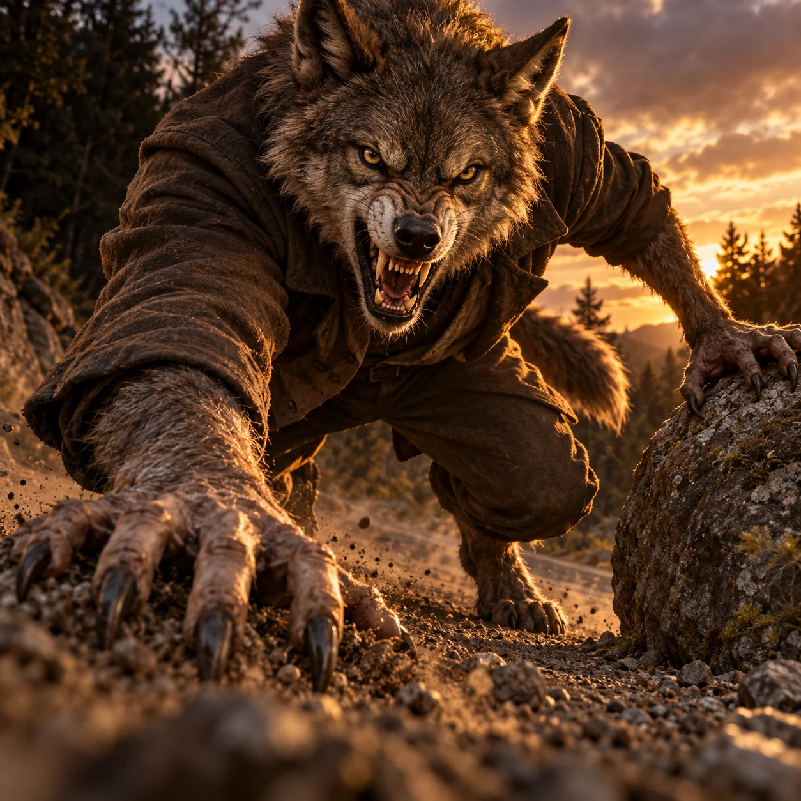
Werewolf, documented therianthropic wolf-human hybrid variant (c43), distinct from wholly wolf-shaped Niceros variants A/B
Aura: Imposing menace comes from explicitly documented wolf-human hybrid c43 in physical motion, no added magic
Audit ciri dan sumber
- [object Object]
- [object Object]
- [object Object]
Corrected attempt03 (C, retained separately and placed in A slot) uses the explicitly documented hybrid c43, fully clothed and lunging with clawed hands. Initial wholly wolf-shaped A/B failed Sangar as ordinary wolves; both remain archived. Generic roadside setting is editorial, not a hybrid claim about Niceros. All seven Sangar checks and anatomy checked against native PNG; this is Codex self-review, independent Claude review pending. Also inspected at exact 200x200 pixels in the final 50-image browser sheets; subject and distinguishing attributes remain imposing and readable.
Review sumberONE original square 1024x1024 premium painterly cinematic Mythics illustration of Werewolf, the documented wolf-human hybrid form, not a film character.
ANATOMY: ONE therianthropic wolf-human hybrid: one grey-brown WOLF head with long canine muzzle, TWO wolf ears, two humanlike arms with five fingers ending claws on each hand, exactly TWO powerful digitigrade legs, one wolf tail. Entire torso, shoulders and thighs wear fully opaque rough plain dark brown coat and trousers, NO bare chest or nudity. Grey-brown coarse fur on head/hands [werewolf-c43].
MOMENT: Lunge down toward the low camera while one clawed HUMANLIKE HAND braces a roadside boulder and the other reaches forward; furious wrinkled muzzle snarls, humanlike bent knees unmistakable. NO ordinary four-legged wolf.
POWER: Changed hybrid shape physically disturbs roadside dirt; no moon transformation ray, no extra powers [werewolf-c01,werewolf-c43].
SCALE & CAMERA: Extreme low camera inches below foreground hand, hybrid fills 90 percent of frame, no invented giant size; one hand and face dominate.
LIGHT & WEATHER: deep walnut shadows, one strong antique-gold dusk rim light, coarse physical dust.
SURFACE: coarse damp grey-brown fur, heavy woven plain coat, dirty humanlike claws, dusty stone.
SETTING: Rural roadside among dark trees, editorial broader werewolf-narrative staging [werewolf-c14], not claiming hybrid in Niceros story.
MOOD: Dangerous stalking confrontation; no ordinary wolf portrait, not cute or calm.
HARD CONSTRAINTS: NO modern movie/game/comic costume or character imitation; NO text, symbols, pseudo-writing, border, watermark. NO extra heads, arms, legs, tails or fingers. Opaque full clothing, no nudity or explicit gore; no aura, neon, magical ribbons. No full moon trigger or invented giant size.
Phoenix
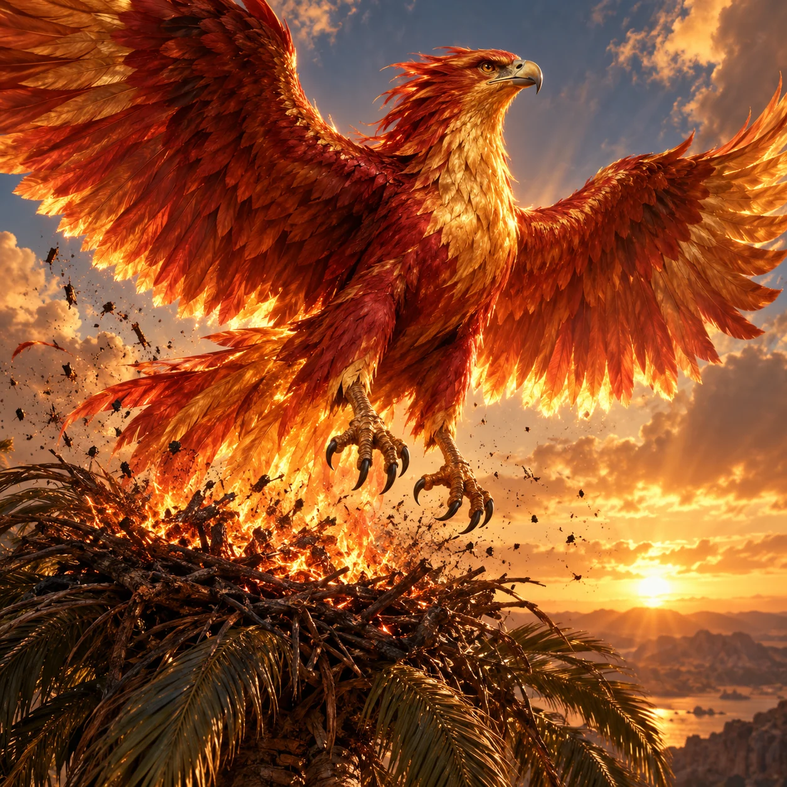
One red-gold feathered bird with eagle shape and size, one eagle head/beak, two wings, two avian legs, normal feather tail; no horns or human parts
Aura: Documented effects and physical action only; no generic aura.
Audit ciri dan sumber
- [object Object]
- [object Object]
- [object Object]
A shows both feet leaving the burning palm-top spice nest as the renewed red-gold eagle-shaped bird lifts into flight. B passes but is more perched than airborne. All seven Sangar checks and anatomy checked against native PNG; this is Codex self-review, independent Claude review pending. Also inspected at exact 200x200 pixels in the final 50-image browser sheets; subject and distinguishing attributes remain imposing and readable.
Review sumberONE original square 1024x1024 premium painterly cinematic Mythics illustration of phoenix.
ANATOMY: One red-gold feathered bird with eagle shape and size, one eagle head/beak, two wings, two avian legs, normal feather tail; no horns or human parts [phoenix-c01, phoenix-c10]
MOMENT: Renewed fully grown phoenix bursts up from ash nest with broad wing downstroke, talons released, eagle face dominates and red-gold feathers read clearly.
POWER: Rises renewed from predecessor ashes, tangible nest flames and warm natural rays of sunlight from body; no neon halo or magic ribbons [phoenix-c07, phoenix-c25, phoenix-c01]
SCALE & CAMERA: extreme low angle, subject dominant at 200px; tight imposing frame but full identifying attributes readable; source scale only, not an invented giant.
LIGHT & WEATHER: one strong natural sunset or moon key light, antique gold and dark walnut shadows, tangible physical dust or spray only.
SURFACE: tactile fur or feathers, aged metal, rough stone, fully opaque woven clothing wherever humanoid.
SETTING: Spice nest on lofty palm, burnt nest ash, no additional living bird [phoenix-c12]
MOOD: overwhelming active mythological presence, solemn courage for divine subjects, never cute, ordinary passive person or decorative statue.
HARD CONSTRAINTS: no letters, writing, pseudo-glyphs, signs, symbols resembling script on ANY surfaces; NO logo/signature/border/watermark; no borrowed film/game/comic/anime design; no extra anatomy. Full opaque torso covering for humanoids, no nudity or sexualization, no gore, blood, harmed people or victims. No generic aura, neon outlines, runes, energy ribbons or ungrounded magic. Cloth and jewelry plain and unmarked. NOT fenghuang/Chinese bird, peacock or Harry Potter design. Natural sunshine and physical fire only; no glowing outline, no gigantic size.
Anubis
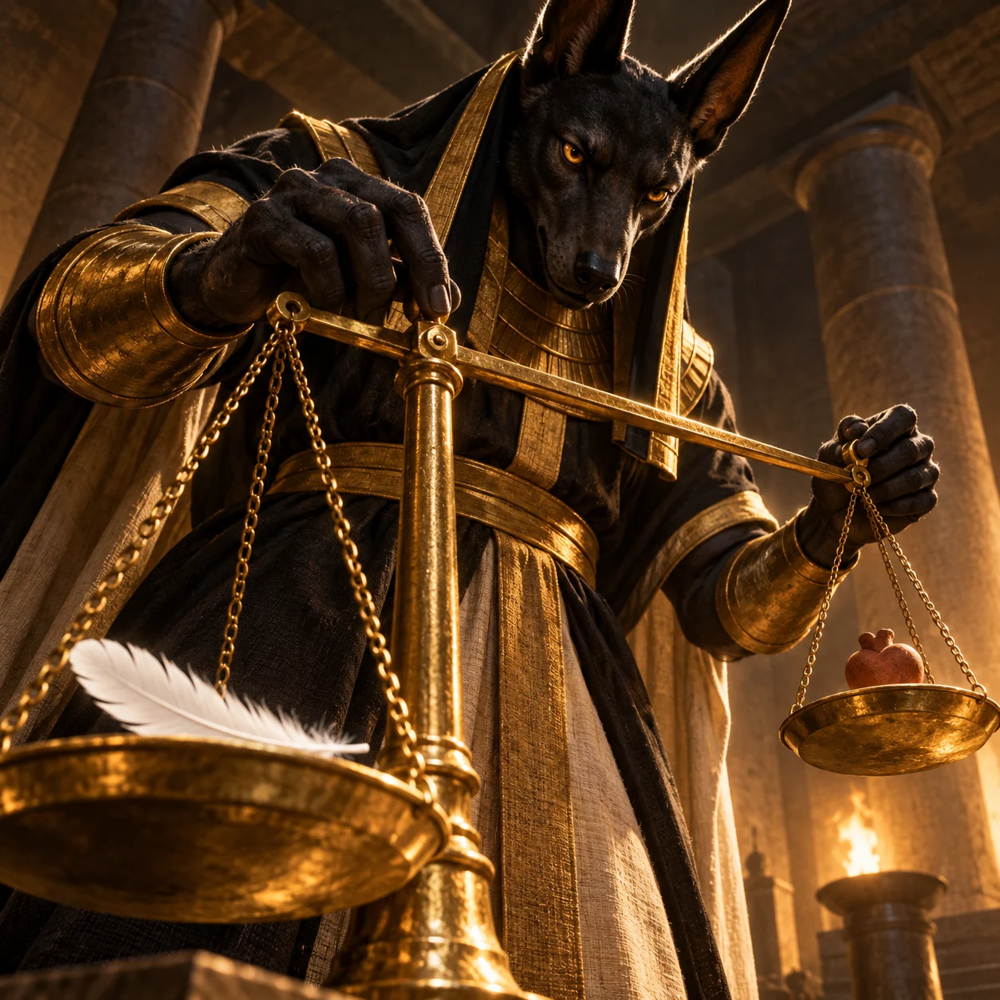
Black jackal-headed Anubis adjusting golden weighing scales in Hall of Truth.
Aura: Fair divine judgment(c19) expressed through huge close golden scales and feather(c15), black jackal head(c02).
Audit ciri dan sumber
- [object Object]
- [object Object]
- [object Object]
Dua PNG native telah dibaca. A dipilih karena jari menyetel beam pada penyangga timbangan dan tatapan jackal besar membuat penimbangan aktif serta jelas. B mengangkat seluruh timbangan, kurang jelas mekanismenya. Kepala jackal hitam, dua lengan dan pakaian tertutup didukung c02; bulu putih dan timbangan emas c15. Bentuk heart merupakan terracotta simbolis, bukan organ gore. HallTruth c08. Tujuh syarat Sangar terpenuhi. All seven Sangar checks and anatomy checked against native PNG; this is Codex self-review, independent Claude review pending. Also inspected at exact 200x200 pixels in the final 50-image browser sheets; subject and distinguishing attributes remain imposing and readable.
Review sumberONE original square premium painterly cinematic Mythics illustration of Anubis, Egyptian jackal-headed divine judge and guide of dead.
ANATOMY: muscular man with ONE black jackal head, two pointed ears, two eyes, two human arms and legs; fully opaque black and parchment linen ceremonial tunic and long wrap cover torso and legs. Large clear GOLDEN balance scales, WHITE feather on one pan and small symbolic terracotta heart-shaped weight on other, no tissue [anubis-c02,c15].
POWER: careful physical weighing of symbolic heart against white feather, sacred judgment and guidance, NO invented magical effects [anubis-c15,c19].
SCALE & CAMERA: extreme low close angle at scale pan, jackal face and gold beam dominant; no giant stature.
LIGHT & WEATHER: one oil-flame source, warm gold rim, deep shadows and fine tomb dust.
SURFACE: short dense black canine fur, hammered golden scales, dry linen, ancient rough stone.
SETTING: Hall of Truth in Egyptian afterlife, plain unlettered columns [anubis-c08].
MOOD: overwhelming sacred judgment, severe protective authority, never ordinary animal or decorative statue.
HARD CONSTRAINTS: no hieroglyphs/pseudo-lettering ANYWHERE including clothing/scales/walls, no text/logos/borders/watermarks, no extra limbs, no film/game/comic designs, no nudity/gore, no generic aura/neon/ribbons.
MOMENT: Anubis leans toward viewer and adjusts scale beam delicately with one hand while raising other pan, jackal eyes focused down, white feather clearly isolated against black stone. Front three-quarter towering close framing.
Mermaid
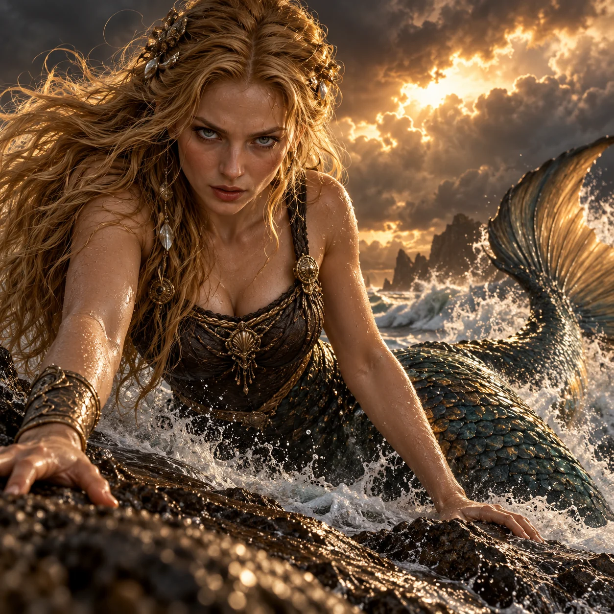
Mermaid, Havfrue variant
Aura: No generic aura; strength through documented attributes, physical action and source-linked domain: mermaid-c01, mermaid-c23, mermaid-c24, mermaid-c25
Audit ciri dan sumber
- [object Object]
- [object Object]
- [object Object]
Dua PNG native telah dibaca. A dipilih karena ekspresi tegas dan gerak menarik tubuh dari ombak lebih kuat pada ukuran kartu. Dua lengan dan satu ekor ikan terlihat; tidak ada kaki manusia. Bodice tertutup. Laut kasar hanya lingkungan pertanda c25, bukan kuasa mengendalikan cuaca. B sah tetapi lebih tenang. Semua tujuh syarat Sangar terpenuhi. All seven Sangar checks and anatomy checked against native PNG; this is Codex self-review, independent Claude review pending. Also inspected at exact 200x200 pixels in the final 50-image browser sheets; subject and distinguishing attributes remain imposing and readable.
Review sumberONE original square 1024x1024 premium painterly cinematic Mythics illustration of Mermaid, Havfrue variant.
ANATOMY: beautiful adult woman upper body, one head, two arms, one long fish tail below waist and no human legs, long golden hair, fully opaque dark woven bodice [mermaid-c01, mermaid-c23, mermaid-c24]
MOMENT: Surge from the dark water toward the lens with an unsettling commanding gaze, forearms braced on rock, sweeping fish tail readable in foreground.
POWER: No claimed storm control: rough waves and incoming storm are environmental omen, tail physically throws sea spray [mermaid-c25]
SCALE & CAMERA: extreme low angle; confrontational tight three-quarter close composition, subject fills at least 80 percent of frame. Natural source scale, no invented giant size.
LIGHT & WEATHER: one dominant natural storm opening or fire/moon light source in deep walnut and antique-gold palette; strong rim light, deep shadow, physically grounded dust or spray.
SURFACE: tactile weathered cloth, aged metal, living skin, feathers or scales as applicable.
SETTING: sea surface beside wet coastal rocks [mermaid-c01, mermaid-c24]
MOOD: overwhelming, imposing, active, dignified where divine; never cute, placid or decorative. Original mythology art, no borrowed modern character designs.
HARD CONSTRAINTS: NO text, letters, pseudo-writing, glyphs, runes, logos, signatures or decorative script anywhere including clothing, weapons, architecture. NO border, frame, watermark, extra heads, limbs or fingers. Fully opaque clothing, no nudity, sexualization, explicit gore. No generic aura, neon outline, glowing mist or energy ribbons. Do not print claim IDs on image.
Thor
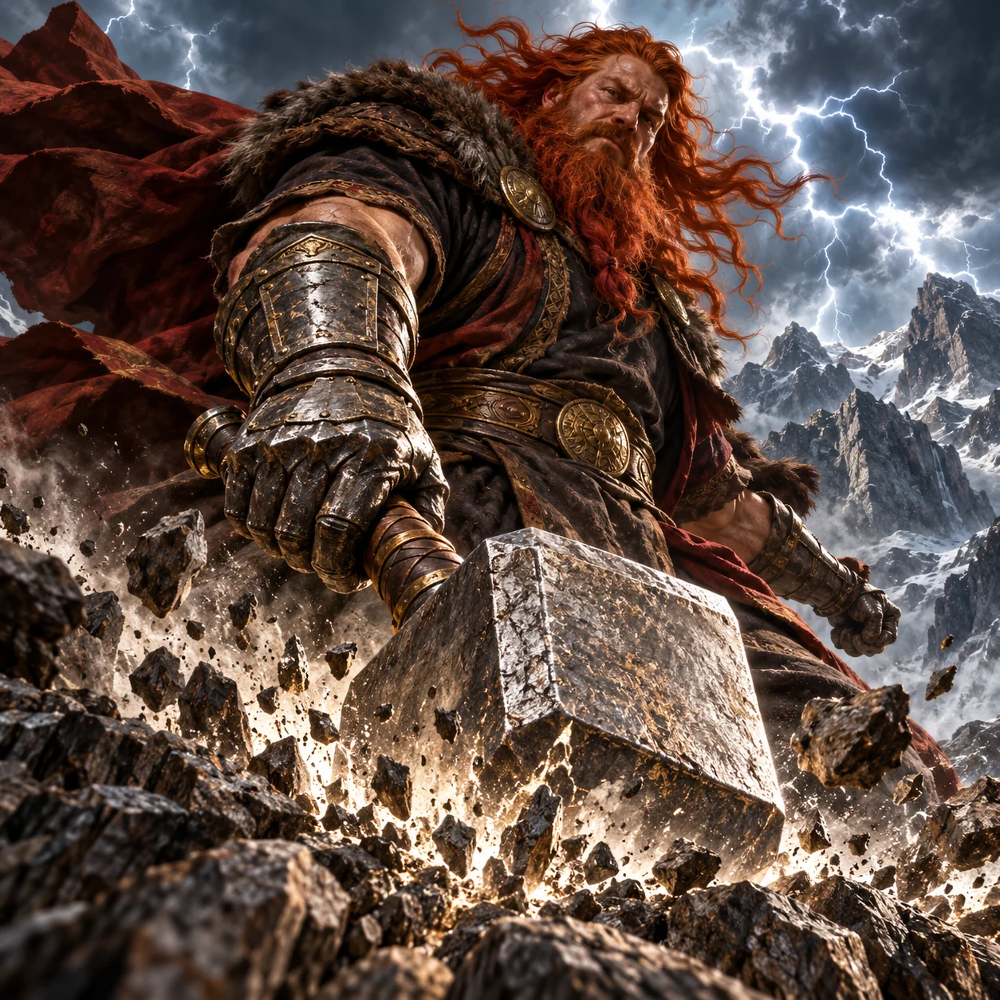
Drive the hammer downward toward the foreground ridge, beard whipping and iron glove huge in foreground; rock fractures under the hammer at bottom of frame
Aura: Kesan kuasa berasal dari aksi fisik: a hammer blow levels mountain rock; stone fragments burst physically from contact, storm and lightning visible in sky (thor-c23, thor-c27), bukan aura.
Audit ciri dan sumber
- [object Object]
- [object Object]
- [object Object]
Variant A chosen after viewing both: dominant red-bearded face, clearly gripping iron glove, strength belt and hammer impact burst with physical broken mountain rock (c23), sky lightning (c27). Single head, two arms, no writing or emitted aura; B valid but face and impact less immediate. All seven Sangar checks and anatomy checked against native PNG; this is Codex self-review, independent Claude review pending. Also inspected at exact 200x200 pixels in the final 50-image browser sheets; subject and distinguishing attributes remain imposing and readable.
Review sumberONE original square premium painterly cinematic Mythics illustration of Thor, the red-haired bearded hammer-bearing protector.
ANATOMY: one human male head, two arms, long red hair and great red beard; iron gloves gripping plain Mjolnir hammer, strength belt; fully opaque rugged tunic and cloak [thor-c02, thor-c22, thor-c34]
MOMENT: Drive the hammer downward toward the foreground ridge, beard whipping and iron glove huge in foreground; rock fractures under the hammer at bottom of frame
POWER: a hammer blow levels mountain rock; stone fragments burst physically from contact, storm and lightning visible in sky [thor-c23, thor-c27]
SCALE & CAMERA: extreme low camera, tight framing and strong foreshortening; subject occupies most of square, no invented giant size.
LIGHT & WEATHER: lightning illuminating the storm sky and the contact-blasted stone; dramatic rim light and deep shadows.
SURFACE: tangible weathered opaque cloth, tactile skin and stone; dark walnut and antique gold palette.
SETTING: rocky mountains in the mountain-striking story [thor-c23]
MOOD: overwhelming majestic dignity, determined expression, awe inspiring active divine presence, never ordinary or decorative.
HARD CONSTRAINTS: no text anywhere including clothing and stone, no pseudo glyphs, no lettering, signature, logo, border, frame or watermark; no extra heads, limbs or fingers; no film/game/anime/comic design; fully opaque clothing, no nudity, no explicit gore, no generic glow aura, neon outline, energy ribbons or runes.
Sphinx
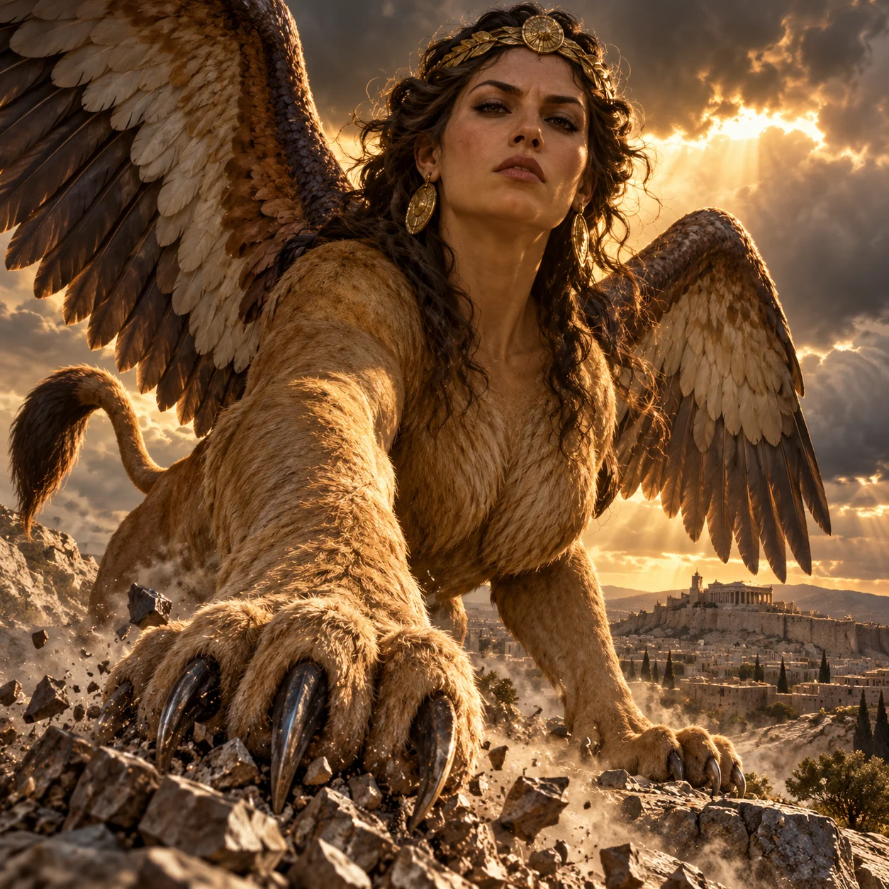
Sphinx, Greek Apollodorus variant
Aura: No generic aura; strength through documented attributes, physical action and source-linked domain: sphinx-c03, sphinx-c09, sphinx-c12
Audit ciri dan sumber
- [object Object]
- [object Object]
- [object Object]
Dua PNG native telah dibaca. A dipilih dengan wajah perempuan langsung pada dada singa berbulu, empat tungkai singa tanpa tangan manusia, dua sayap dan satu ekor. Cakar menggeser batu dan sayap membuka; tanpa kuasa rekaan. B anatomi sah tetapi arsitektur pylon/obelisk Mesir keliru untuk Thebes Yunani c09/c12, sehingga root mark fail. A arsitektur Yunani konsisten. Tujuh syarat Sangar A terpenuhi. All seven Sangar checks and anatomy checked against native PNG; this is Codex self-review, independent Claude review pending. Also inspected at exact 200x200 pixels in the final 50-image browser sheets; subject and distinguishing attributes remain imposing and readable.
Review sumberONE original square 1024x1024 premium painterly cinematic Mythics illustration of Sphinx, Greek Apollodorus variant.
ANATOMY: one adult woman face directly joined to lion breast, lion body with four paws, one lion tail, exactly two bird wings, NO human breasts, NO human arms; living creature [sphinx-c03, sphinx-c12]
MOMENT: Crouch inches from the lens, woman face glares down, one immense lion forepaw extends toward viewer, both folded bird wings readable.
POWER: No magic emission; lion claws dislodge stone and eagle wings physically blow dust; predatory menace [sphinx-c09, sphinx-c12]
SCALE & CAMERA: extreme low angle; confrontational tight three-quarter close composition, subject fills at least 80 percent of frame. Natural source scale, no invented giant size.
LIGHT & WEATHER: one dominant natural storm opening or fire/moon light source in deep walnut and antique-gold palette; strong rim light, deep shadow, physically grounded dust or spray.
SURFACE: tactile weathered cloth, aged metal, living skin, feathers or scales as applicable.
SETTING: rocky approach outside Thebes [sphinx-c09]
MOOD: overwhelming, imposing, active, dignified where divine; never cute, placid or decorative. Original mythology art, no borrowed modern character designs.
HARD CONSTRAINTS: NO text, letters, pseudo-writing, glyphs, runes, logos, signatures or decorative script anywhere including clothing, weapons, architecture. NO border, frame, watermark, extra heads, limbs or fingers. Fully opaque clothing, no nudity, sexualization, explicit gore. No generic aura, neon outline, glowing mist or energy ribbons. Do not print claim IDs on image.
Vampire
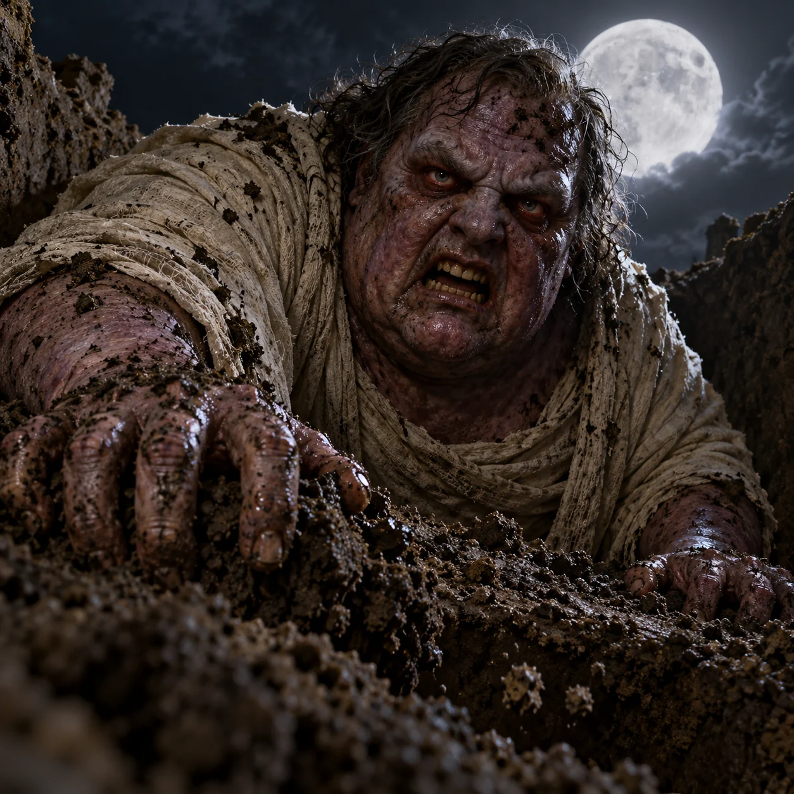
European folkloric plump ruddy shrouded revenant, not modern gaunt fanged aristocrat.
Aura: Nighttime emergence from grave (vampire-c02) and swollen ruddy revenant anatomy (vampire-c07,c08).
Audit ciri dan sumber
- [object Object]
- [object Object]
- [object Object]
Dua PNG native telah dibaca. A dipilih: tubuh gembung kemerahan, gigi biasa tanpa taring rekaan, kain kafan menutup tubuh dan tangan mencengkeram tanah saat bangkit dari kubur. Tatapan dan aksi sangat terbaca pada kartu. B attempt03 gagal Sangar2/7 karena manusia tenang merapikan kain; attempt02 ditolak alat, tidak ada PNG. Tiga panggilan habis; dua komposisi nyata diperiksa, hanya A layak. Tujuh syarat Sangar A terpenuhi tanpa darah/gore/korban. All seven Sangar checks and anatomy checked against native PNG; this is Codex self-review, independent Claude review pending. Also inspected at exact 200x200 pixels in the final 50-image browser sheets; subject and distinguishing attributes remain imposing and readable.
Review sumberONE original square premium painterly cinematic Mythics illustration of a European folkloric vampire, undead grave-returning blood drinker.
ANATOMY: one head, two eyes, two arms two legs, distinctly bloated plump human corpse with dark ruddy purple skin, healthier flesh not skeletal, slightly overgrown hair and nails, ordinary somewhat grown teeth NOT FANGS. Fully opaque dirty linen burial shroud wraps torso and legs [vampire-c01,c07,c08,c09].
POWER: emerge from the grave at night to hunt the living, no magic effects [vampire-c02].
SCALE & CAMERA: tight predatory low-angle framing, no giant size, head and swollen face dominate.
LIGHT & WEATHER: single strong pale moon rim, black-brown shadows and airborne loose grave dirt, no supernatural glow.
SURFACE: coarse wet linen, earth-crusted fingers, ruddy swollen cheeks, wet soil.
SETTING: open earthen grave at night, stones entirely blank [vampire-c02].
MOOD: disturbing dangerous hungry revenant, never suave, cute, calm or ordinary.
HARD CONSTRAINTS: no lettering/pseudo-glyphs on ANYTHING, no text/signatures/logo/border/watermark, no blood or gore, no extra anatomy, no fangs, no movie/game/comic designs, no tuxedo/cape, no aura/neon/ribbons.
MOMENT: The vampire hauls its heavy swollen body over the grave edge toward viewer, both muddy hands visibly braced in earth, head thrust forward and mouth snarling with blunt normal teeth, falling clods of soil.
Kali
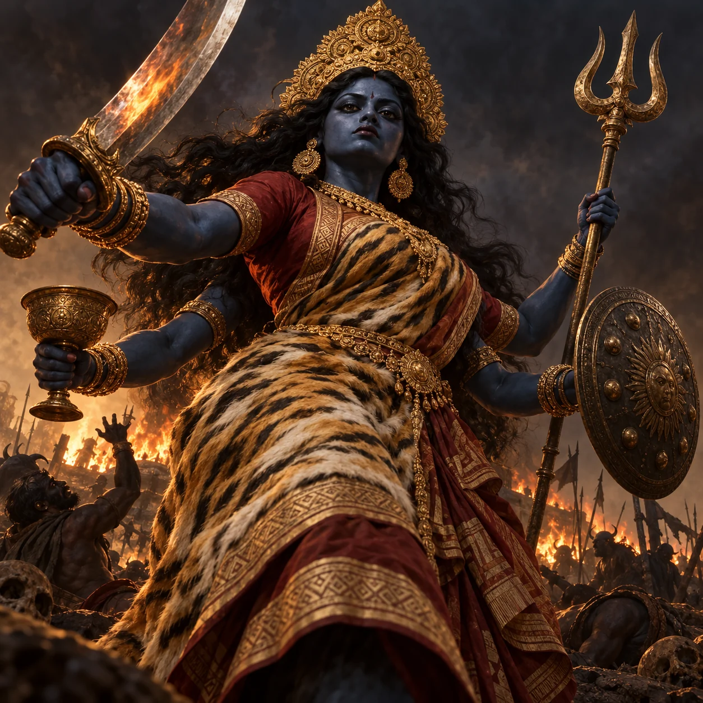
Three-quarter battle turn, sword cutting upward across foreground, trident and shield frame face, cup clear; all four hands visible
Aura: Kesan kuasa dari aksi fisik/atribut: defeat demons with documented sword; physical battle stroke, no visible gore or magic (kali-c06, kali-c32), bukan aura generik.
Audit ciri dan sumber
- [object Object]
- [object Object]
- [object Object]
Dua PNG native telah dibaca. B dipilih karena empat tangan dengan pedang/trident/cup/shield jelas terpisah, mahkota utuh, kulit biru dan langkah perlindungan yang berwibawa. Sari motif harimau menutup torso; refleksi api pada pedang bukan darah atau kuasa senjata. Ujung pedang crop tetapi atribut terbaca; no gore dan tulisan. A juga sah namun trident terpotong. Efek/action didukung c06/c32. Tujuh syarat Sangar terpenuhi. All seven Sangar checks and anatomy checked against native PNG; this is Codex self-review, independent Claude review pending. Also inspected at exact 200x200 pixels in the final 50-image browser sheets; subject and distinguishing attributes remain imposing and readable.
Review sumberONE original square premium painterly cinematic Mythics illustration of Kali, revered divine mother in battle aspect.
ANATOMY: one dark blue female head, gaunt cheeks, deep eyes; exactly four arms; gilded Bengali clay crown; opaque tiger-skin sari and upper blouse covering entire chest; hands hold sword,trident,cup,shield [kali-c23, kali-c24, kali-c53]
MOMENT: Three-quarter battle turn, sword cutting upward across foreground, trident and shield frame face, cup clear; all four hands visible
POWER: defeat demons with documented sword; physical battle stroke, no visible gore or magic [kali-c06, kali-c32]
SCALE & CAMERA: extreme low camera; tight framing and strong foreshortening; subject fills most of square, no invented giant size.
LIGHT & WEATHER: one distant battlefield fire reflected on blade; high contrast rim light and deep shadows.
SURFACE: tangible skin or fur, weathered opaque cloth and stone; dark walnut and antique gold palette with one accent.
SETTING: dark battlefield and cremation-ground earth [kali-c16]
MOOD: overwhelming imposing majesty and determined expression, active awe inspiring presence, never ordinary or decorative; respectful living religious deity if applicable.
HARD CONSTRAINTS: no text anywhere including clothes and stones, NO pseudo glyphs, painted forehead symbols, lettering, signature, logo, border, frame or watermark; no extra heads, limbs or fingers; no film/game/anime/comic design; fully opaque clothing covering the whole torso whenever clothed, no nudity, no explicit gore, no generic glow aura, neon outline, energy ribbons or runes. Entire head and attributes remain in frame. Cloth ornaments only plain weaving or geometric patterns, no writing.
Re
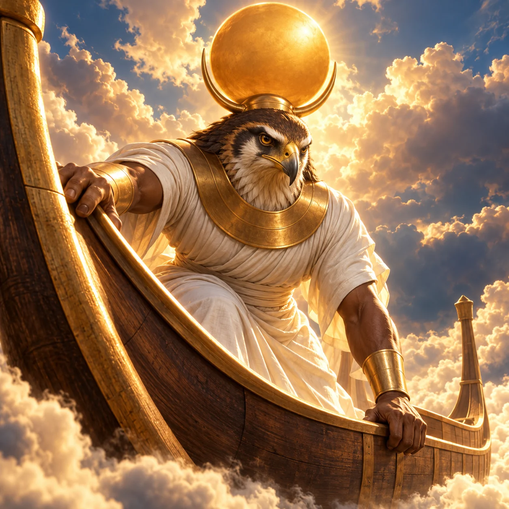
Lean across golden barque bow, one hand braced on prow and other holding side, surging through cloud horizon, falcon gaze down
Aura: Kesan kuasa dari aksi fisik/atribut: carry sun across heaven in solar barque; physical solar light on clouds and vessel (ra-q1252904-c03, ra-q1252904-c37), bukan aura generik.
Audit ciri dan sumber
- [object Object]
- [object Object]
- [object Object]
PNG native A final attempt03 dan B attempt02 telah dibaca, termasuk A awal ditolak. A dipilih: kepala falcon tunggal, disk matahari utuh, linen/papan perahu polos, gerak memimpin solar barque c03/c37. Lengkungan logam di bawah disk merupakan fixture ornamental editorial, bukan tanduk anatomi/kuasa yang diklaim. Fixture ini dicatat untuk Claude. B gagal disk crop/pseudo-glyph. Tiga percobaan habis, arsip utuh. Tujuh syarat Sangar A terpenuhi. All seven Sangar checks and anatomy checked against native PNG; this is Codex self-review, independent Claude review pending. Also inspected at exact 200x200 pixels in the final 50-image browser sheets; subject and distinguishing attributes remain imposing and readable.
Review sumberONE original square premium painterly cinematic Mythics illustration of Ra-Horakhty, falcon-headed solar god.
ANATOMY: one falcon head on male body, two arms; large complete sun disk above head, full opaque Egyptian tunic; no weapon [ra-q1252904-c12]
MOMENT: Lean across golden barque bow, one hand braced on prow and other holding side, surging through cloud horizon, falcon gaze down
POWER: carry sun across heaven in solar barque; physical solar light on clouds and vessel [ra-q1252904-c03, ra-q1252904-c37]
SCALE & CAMERA: extreme low camera; tight framing and strong foreshortening; subject fills most of square, no invented giant size.
LIGHT & WEATHER: sun disk above his head physically illuminating clouds; high contrast rim light and deep shadows.
SURFACE: tangible skin or fur, weathered opaque cloth and stone; dark walnut and antique gold palette with one accent.
SETTING: solar barque crossing heaven [ra-q1252904-c03]
MOOD: overwhelming imposing majesty and determined expression, active awe inspiring presence, never ordinary or decorative; respectful living religious deity if applicable.
HARD CONSTRAINTS: no text anywhere including clothes and stones, NO pseudo glyphs, painted forehead symbols, lettering, signature, logo, border, frame or watermark; no extra heads, limbs or fingers; no film/game/anime/comic design; fully opaque clothing covering the whole torso whenever clothed, no nudity, no explicit gore, no generic glow aura, neon outline, energy ribbons or runes. Entire head and attributes remain in frame. Cloth ornaments only plain weaving or geometric patterns, no writing.
TARGETED CORRECTION: Entire sun disk MUST fit well below upper image edge with clear cloud margin, disk only as wide as shoulders. Head and full disk at center vertically. All garments plain unembroidered white linen, all metal absolutely smooth unmarked gold, absolutely no hieroglyphs or pseudo-glyphs, only plain undecorated wooden boat. No nemes striped hood, no patterned trim. Dynamic forward lean with clouds sweeping beside moving prow.
Ganesha
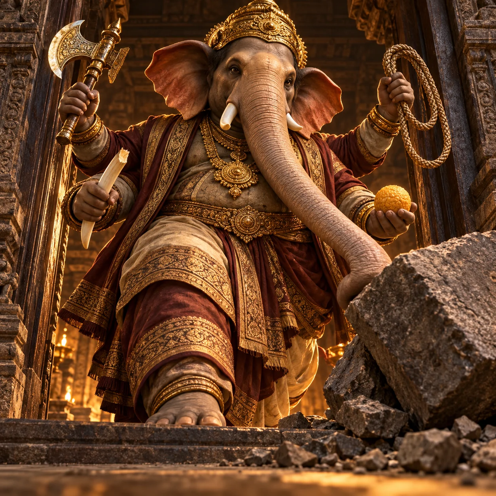
Stride through the temple threshold toward the low viewer, trunk pressing aside a fallen plain stone obstruction, four hands separated and each attribute large and readable
Aura: Kesan kuasa berasal dari aksi fisik: removal of obstacles shown as a fallen plain stone obstruction being moved clear of a temple threshold; no magical light or invented weapon power (ganesha-c03, ganesha-c29), bukan aura.
Audit ciri dan sumber
- [object Object]
- [object Object]
- [object Object]
Dua PNG native telah dibaca. A dipilih: empat tangan terpisah, kapak/lasso di tangan atas dan pecahan gading/manisan masing-masing pada tangan bawah, satu gading patah. Dada dan perut tertutup tunik krem bermotif tekstil dengan lipatan, kepala dan lengan memakai kulit alami. Belalai secara fisik mendorong batu; identitas dan aksi terbaca kuat. B gagal c07: gading dan manisan digabung dalam satu tangan, tangan lain mendorong batu. Tiga percobaan habis, dua kegagalan dipertahankan. Tujuh syarat Sangar A terpenuhi. All seven Sangar checks and anatomy checked against native PNG; this is Codex self-review, independent Claude review pending. Also inspected at exact 200x200 pixels in the final 50-image browser sheets; subject and distinguishing attributes remain imposing and readable.
Review sumberONE original square premium painterly cinematic Mythics illustration of Ganesha, revered elephant-headed remover of obstacles.
ANATOMY: one elephant head on potbellied human body, exactly four arms; upper left holds a lasso, upper right battle axe, lower left a sweet, lower right the broken tusk; one full tusk and the other broken; full opaque ceremonial robes [ganesha-c02, ganesha-c04, ganesha-c07, ganesha-c33]
MOMENT: Stride through the temple threshold toward the low viewer, trunk pressing aside a fallen plain stone obstruction, four hands separated and each attribute large and readable
POWER: removal of obstacles shown as a fallen plain stone obstruction being moved clear of a temple threshold; no magical light or invented weapon power [ganesha-c03, ganesha-c29]
SCALE & CAMERA: extreme low camera, tight framing and strong foreshortening; subject occupies most of square, no invented giant size.
LIGHT & WEATHER: one warm temple fire from off frame, reflecting on plain ornaments; dramatic rim light and deep shadows.
SURFACE: tangible weathered opaque cloth, tactile skin and stone; dark walnut and antique gold palette.
SETTING: the doorway of a Hindu temple [ganesha-c39]
MOOD: overwhelming majestic dignity, determined expression, awe inspiring active divine presence, never ordinary or decorative.
HARD CONSTRAINTS: no text anywhere including clothing and stone, no pseudo glyphs, no lettering, signature, logo, border, frame or watermark; no extra heads, limbs or fingers; no film/game/anime/comic design; fully opaque clothing, no nudity, no explicit gore, no generic glow aura, neon outline, energy ribbons or runes.
CRITICAL CORRECTION: fully cover the whole chest, shoulders and belly with a high-neck opaque woven long tunic, no visible bare torso at all. Forehead entirely plain, NO painted marks, symbols or glyphs. Plain stone threshold without carved signs. Four arms only.
Pegasus
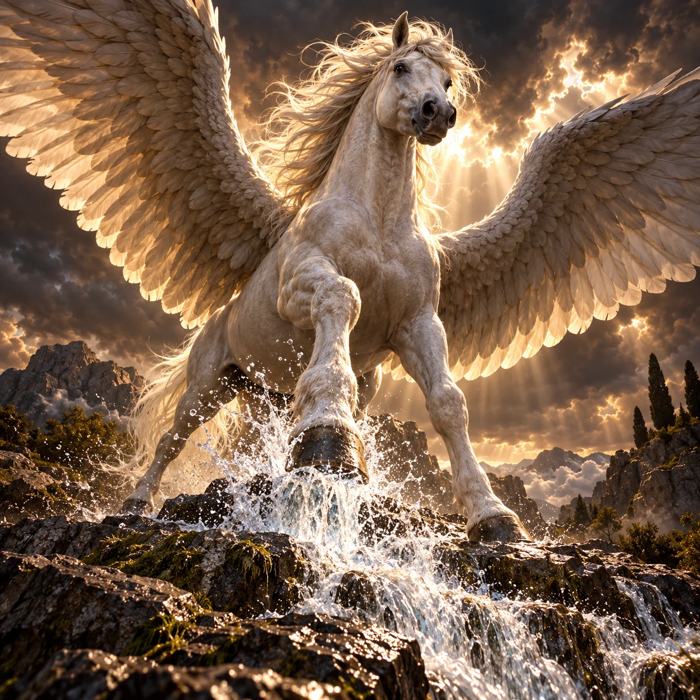
Pegasus
Aura: No generic aura; strength through documented attributes, physical action and source-linked domain: pegasus-c01, pegasus-c02, pegasus-c22, pegasus-c30, pegasus-c31
Audit ciri dan sumber
- [object Object]
- [object Object]
- [object Object]
Dua PNG native telah dibaca. B dipilih karena empat tungkai kuda paling jelas, dua sayap berbulu besar, kepala kuda tunggal tanpa tanduk serta kuku menyentuh sumber air. Hippocrene timbul dari hentakan kuku c22/c31 di Helikon c30/c31; tanpa aura atau sumber efek rekaan. A sah tetapi tungkai belakang tertutup percikan/crop. Tujuh syarat Sangar terpenuhi. All seven Sangar checks and anatomy checked against native PNG; this is Codex self-review, independent Claude review pending. Also inspected at exact 200x200 pixels in the final 50-image browser sheets; subject and distinguishing attributes remain imposing and readable.
Review sumberONE original square 1024x1024 premium painterly cinematic Mythics illustration of Pegasus.
ANATOMY: one living horse head, equine body, exactly four horse legs, two large feather wings, plain mane, no horn [pegasus-c01, pegasus-c02]
MOMENT: Land hard on Mount Helikon with wings fully spread and all four hooves readable; freshly struck spring surges around front hoof.
POWER: Hoof strike brings forth Hippocrene spring, water bursts physically from the ground [pegasus-c22, pegasus-c31]
SCALE & CAMERA: extreme low angle; physical action with fuller body composition, subject fills at least 75 percent of frame; all distinguishing limbs readable. Natural source scale, no invented giant size.
LIGHT & WEATHER: one dominant natural storm opening or fire/moon light source in deep walnut and antique-gold palette; strong rim light, deep shadow, physically grounded dust or spray.
SURFACE: tactile weathered cloth, aged metal, living skin, feathers or scales as applicable.
SETTING: Hippocrene spring on Mount Helikon, dark rocky summit [pegasus-c30, pegasus-c31]
MOOD: overwhelming, imposing, active, dignified where divine; never cute, placid or decorative. Original mythology art, no borrowed modern character designs.
HARD CONSTRAINTS: NO text, letters, pseudo-writing, glyphs, runes, logos, signatures or decorative script anywhere including clothing, weapons, architecture. NO border, frame, watermark, extra heads, limbs or fingers. Fully opaque clothing, no nudity, sexualization, explicit gore. No generic aura, neon outline, glowing mist or energy ribbons. Do not print claim IDs on image.
Asclepius
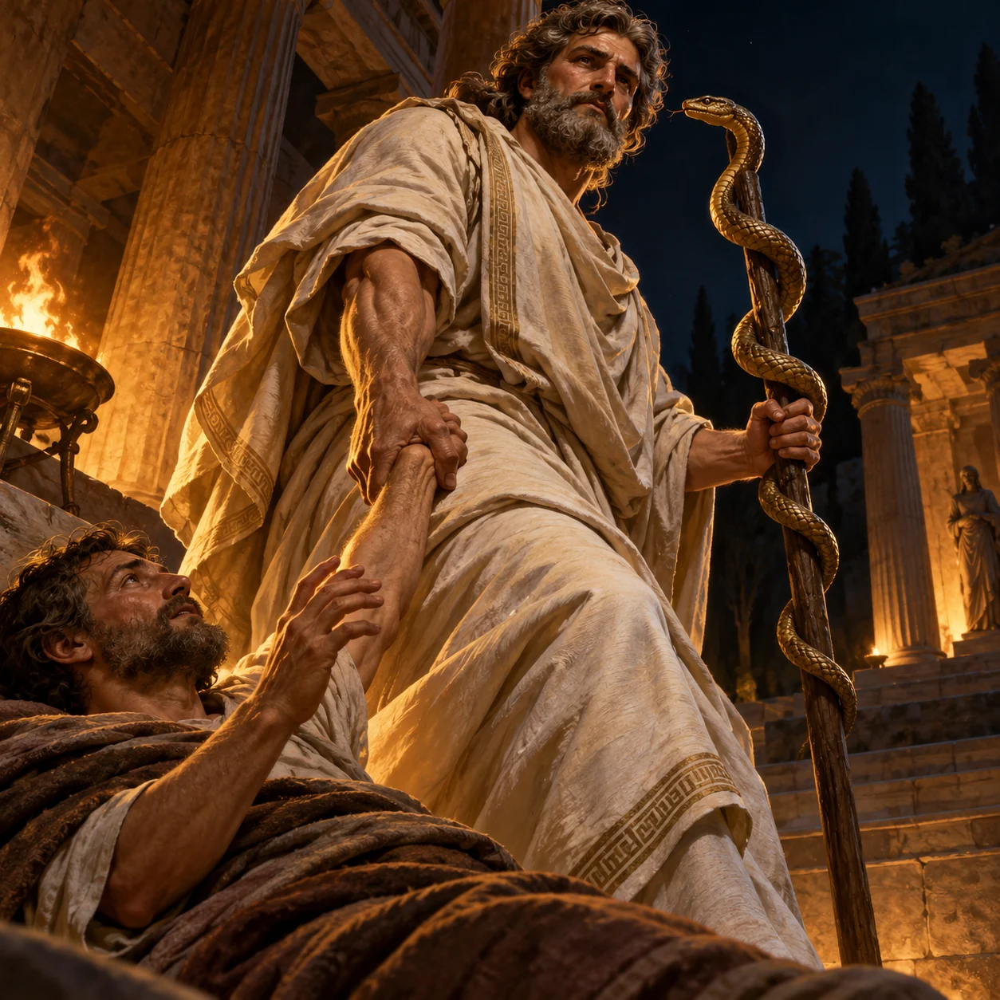
Documented form, physical action and attributes; compositions A and B.
Aura: Kesan kuasa dari aksi fisik/atribut: restore dead to life shown by clothed patient opening eyes and raising hand, no healing glow (asclepius-c13, asclepius-c28), bukan aura generik.
Audit ciri dan sumber
- [object Object]
- [object Object]
- [object Object]
B shows the revived patient actively reaching up as Asclepius pulls him from death; single serpent-staff readable, compassionate but imposing. A passes yet patient response is less forceful. All seven Sangar checks and anatomy checked against native PNG; this is Codex self-review, independent Claude review pending. Also inspected at exact 200x200 pixels in the final 50-image browser sheets; subject and distinguishing attributes remain imposing and readable.
Review sumberONE original square premium painterly cinematic Mythics illustration of Asclepius, divine healer with snake staff.
ANATOMY: one kindly bearded male head,two arms; opaque long himation covering chest; one club-like staff with exactly one snake coiled around it [asclepius-c08, asclepius-c23, asclepius-c29]
MOMENT: Three-quarter stride pulling reclining clothed patient up by forearm, snake staff vertical, snake head clear by beard, god fills frame
POWER: restore dead to life shown by clothed patient opening eyes and raising hand, no healing glow [asclepius-c13, asclepius-c28]
SCALE & CAMERA: extreme low camera; tight framing and strong foreshortening; subject fills most of square, no invented giant size.
LIGHT & WEATHER: one warm sanctuary oil fire in night; high contrast rim light and deep shadows.
SURFACE: tangible skin or fur, weathered opaque cloth and stone; dark walnut and antique gold palette with one accent.
SETTING: columned Epidaurus healing sanctuary [asclepius-c06, asclepius-c07]
MOOD: overwhelming imposing majesty and determined expression, active awe inspiring presence, never ordinary or decorative; respectful living religious deity if applicable.
HARD CONSTRAINTS: no text anywhere including clothes and stones, NO pseudo glyphs, painted forehead symbols, lettering, signature, logo, border, frame or watermark; no extra heads, limbs or fingers; no film/game/anime/comic design; fully opaque clothing covering the whole torso whenever clothed, no nudity, no explicit gore, no generic glow aura, neon outline, energy ribbons or runes. Entire head and attributes remain in frame. Cloth ornaments only plain weaving or geometric patterns, no writing.
Odin
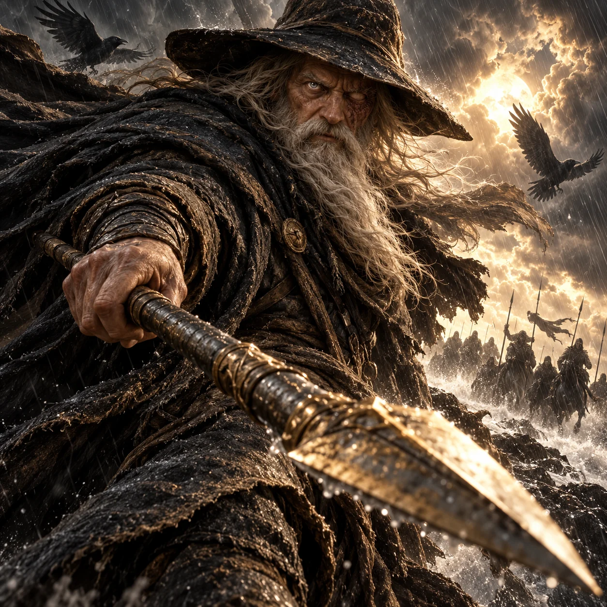
Odin
Aura: No generic aura; strength through documented attributes, physical action and source-linked domain: odin-c01, odin-c08, odin-c09, odin-c17
Audit ciri dan sumber
- [object Object]
- [object Object]
- [object Object]
- [object Object]
Dua PNG native telah dibaca. A dipilih karena mata tunggal, janggut tua, topi lebar dan dorongan Gungnir ke depan terbaca besar dan tegas; dua gagak didukung c03/c07. B sah namun ekspresi kurang dekat. Hujan, angin, rombongan Wild Hunt berasal dari c17, tanpa menambahkan kuasa kilat. Pakaian tertutup, anatomi wajar, tidak ada tulisan. Tujuh syarat Sangar terpenuhi. All seven Sangar checks and anatomy checked against native PNG; this is Codex self-review, independent Claude review pending. Also inspected at exact 200x200 pixels in the final 50-image browser sheets; subject and distinguishing attributes remain imposing and readable.
Review sumberONE original square 1024x1024 premium painterly cinematic Mythics illustration of Odin.
ANATOMY: old weathered bearded man, one visible eye and one clearly empty closed scarred socket, broad plain hat and opaque heavy cloak, two arms and two legs, spear Gungnir [odin-c01, odin-c08, odin-c09]
MOMENT: Lean forward and thrust Gungnir across the foreground, single fierce eye under hat confronts the viewer.
POWER: Wild Hunt rides on storms: storm wind and driving rain whip cloak; no lightning powers assigned [odin-c17]
SCALE & CAMERA: extreme low angle; confrontational tight three-quarter close composition, subject fills at least 80 percent of frame. Natural source scale, no invented giant size.
LIGHT & WEATHER: one dominant natural storm opening or fire/moon light source in deep walnut and antique-gold palette; strong rim light, deep shadow, physically grounded dust or spray.
SURFACE: tactile weathered cloth, aged metal, living skin, feathers or scales as applicable.
SETTING: storm-dark Norse landscape in the Wild Hunt; no invented named site [odin-c17]
MOOD: overwhelming, imposing, active, dignified where divine; never cute, placid or decorative. Original mythology art, no borrowed modern character designs.
HARD CONSTRAINTS: NO text, letters, pseudo-writing, glyphs, runes, logos, signatures or decorative script anywhere including clothing, weapons, architecture. NO border, frame, watermark, extra heads, limbs or fingers. Fully opaque clothing, no nudity, sexualization, explicit gore. No generic aura, neon outline, glowing mist or energy ribbons. Do not print claim IDs on image.
Osiris
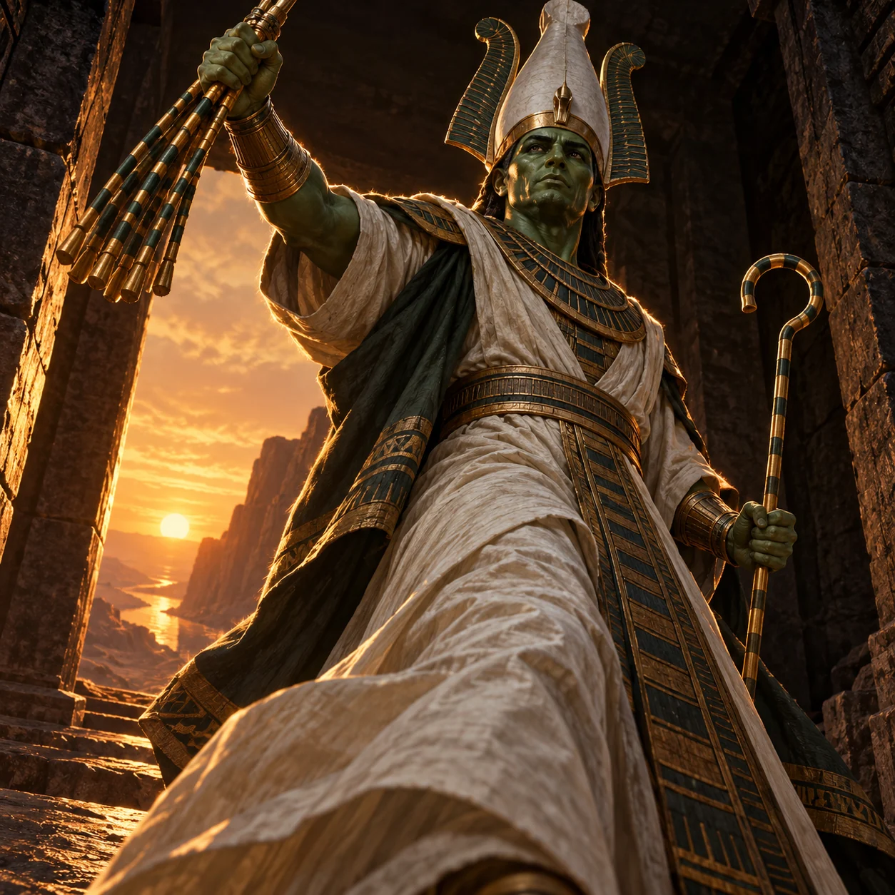
Turn sharply at passage mouth raising flail in command, crook held near side; sweeping robe, complete atef, looming face
Aura: Kesan kuasa dari aksi fisik/atribut: emerge from underworld to assist Horus; physical stride, no magic effects (osiris-c44), bukan aura generik.
Audit ciri dan sumber
- [object Object]
- [object Object]
- [object Object]
Dua PNG native telah dibaca. B dipilih karena flail terangkat dan putaran/stride keluar underworld c44 terbaca aktif. Kulit hijau, crook dan atef bersayap bulu ditopang c08/c10/c12; dua tangan jelas. Puncak mahkota menyentuh crop, tetapi dua feather dan jenis atef terbaca; pakaian tertutup. A sah tetapi lebih frontal. Tanpa aura, tulisan atau gore. Tujuh syarat Sangar terpenuhi. All seven Sangar checks and anatomy checked against native PNG; this is Codex self-review, independent Claude review pending. Also inspected at exact 200x200 pixels in the final 50-image browser sheets; subject and distinguishing attributes remain imposing and readable.
Review sumberONE original square premium painterly cinematic Mythics illustration of Osiris, regenerated Egyptian king and judge.
ANATOMY: one handsome green-skinned male head, two arms; plumed atef, full opaque royal dress, crook and flail separated [osiris-c08, osiris-c10, osiris-c12]
MOMENT: Turn sharply at passage mouth raising flail in command, crook held near side; sweeping robe, complete atef, looming face
POWER: emerge from underworld to assist Horus; physical stride, no magic effects [osiris-c44]
SCALE & CAMERA: extreme low camera; tight framing and strong foreshortening; subject fills most of square, no invented giant size.
LIGHT & WEATHER: one sunset shaft at western entrance; high contrast rim light and deep shadows.
SURFACE: tangible skin or fur, weathered opaque cloth and stone; dark walnut and antique gold palette with one accent.
SETTING: dark underworld passage opening west [osiris-c05, osiris-c44]
MOOD: overwhelming imposing majesty and determined expression, active awe inspiring presence, never ordinary or decorative; respectful living religious deity if applicable.
HARD CONSTRAINTS: no text anywhere including clothes and stones, NO pseudo glyphs, painted forehead symbols, lettering, signature, logo, border, frame or watermark; no extra heads, limbs or fingers; no film/game/anime/comic design; fully opaque clothing covering the whole torso whenever clothed, no nudity, no explicit gore, no generic glow aura, neon outline, energy ribbons or runes. Entire head and attributes remain in frame. Cloth ornaments only plain weaving or geometric patterns, no writing.
Parvati
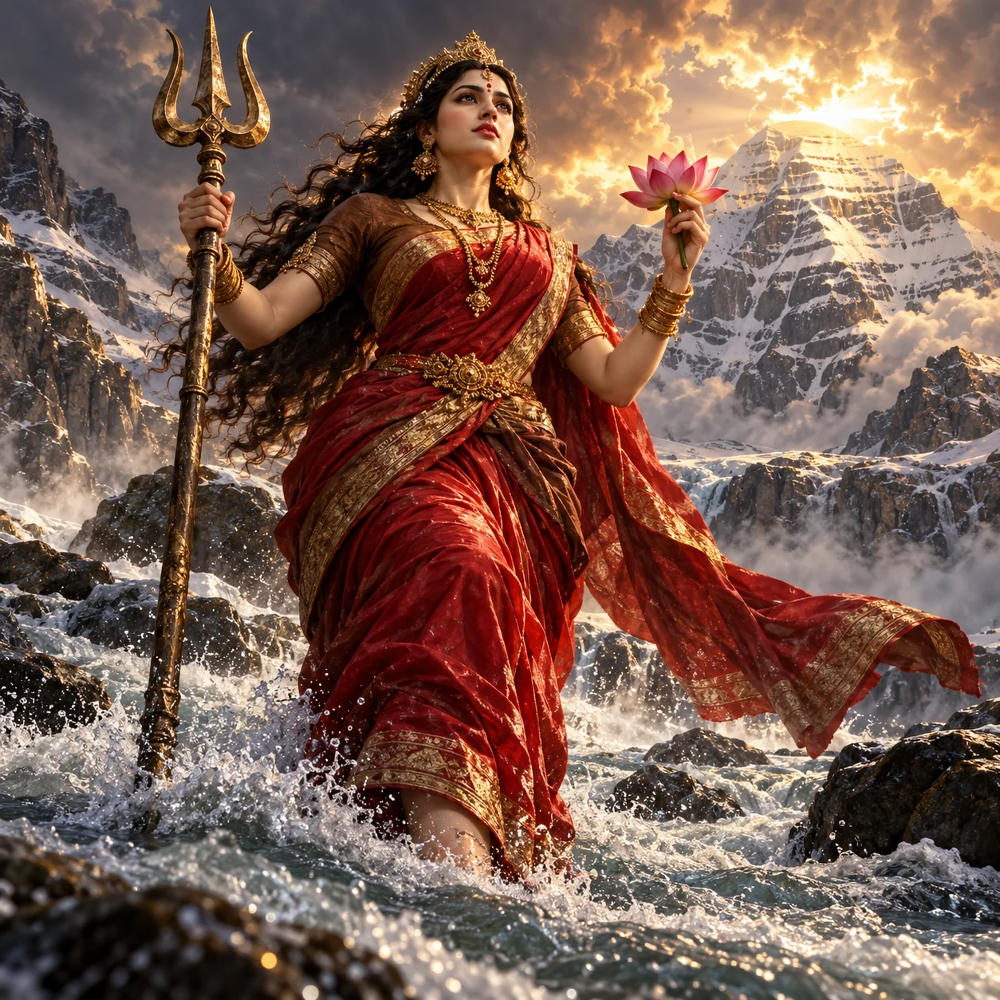
Parvati
Aura: No generic aura; strength through documented attributes, physical action and source-linked domain: parvati-c07, parvati-c20, parvati-c24, parvati-c25
Audit ciri dan sumber
- [object Object]
- [object Object]
- [object Object]
Dua PNG native telah dibaca. B dipilih karena langkah penuh menembus air musim dingin, trident dan lotus utuh serta kain tersapu jelas menunjukkan aksi penance c07. Kailash konteks rumah c20; tidak ditambahkan kuasa air atau senjata bercahaya. Dua lengan, sari merah menutup torso, ekspresi berwibawa dan penuh hormat. A sah namun langkah crop. Wajah masih mirip Saraswati dicatat sebagai masukan ke Claude; tujuh syarat Sangar B terpenuhi. All seven Sangar checks and anatomy checked against native PNG; this is Codex self-review, independent Claude review pending. Also inspected at exact 200x200 pixels in the final 50-image browser sheets; subject and distinguishing attributes remain imposing and readable.
Review sumberONE original square 1024x1024 premium painterly cinematic Mythics illustration of Parvati.
ANATOMY: benevolent beautiful Hindu goddess with fair complexion, one head two arms two legs, fully opaque red and walnut sari, a plain trident in one hand and lotus in other [parvati-c24, parvati-c25]
MOMENT: Rise from knee-deep winter water, stepping against the current, trident anchors her passage and lotus held high; sari fully opaque, gentle majestic strength.
POWER: No outward supernatural emission; documented supernatural power earned through austere penance is conveyed by resolve, action, water and light [parvati-c07]
SCALE & CAMERA: extreme low angle; physical action with fuller body composition, subject fills at least 75 percent of frame; all distinguishing limbs readable. Natural source scale, no invented giant size.
LIGHT & WEATHER: one dominant natural storm opening or fire/moon light source in deep walnut and antique-gold palette; strong rim light, deep shadow, physically grounded dust or spray.
SURFACE: tactile weathered cloth, aged metal, living skin, feathers or scales as applicable.
SETTING: cold winter mountain water, with Mount Kailash behind as contextual home setting [parvati-c07, parvati-c20]
MOOD: overwhelming, imposing, active, dignified where divine; never cute, placid or decorative. Original mythology art, no borrowed modern character designs.
HARD CONSTRAINTS: NO text, letters, pseudo-writing, glyphs, runes, logos, signatures or decorative script anywhere including clothing, weapons, architecture. NO border, frame, watermark, extra heads, limbs or fingers. Fully opaque clothing, no nudity, sexualization, explicit gore. No generic aura, neon outline, glowing mist or energy ribbons. Do not print claim IDs on image.
Hades
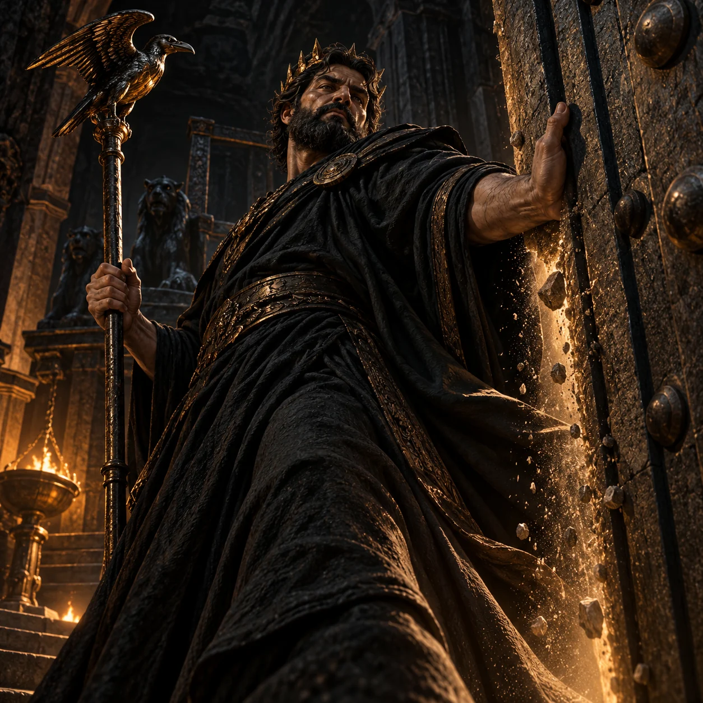
Aidoneus, dark-bearded king wielding bird-tipped sceptre in his underground palace.
Aura: Authority over closed underworld gates (hades-c16), visible bird-tipped sceptre and regal darkness (hades-c13).
Audit ciri dan sumber
- [object Object]
- [object Object]
- [object Object]
Variant B chosen after viewing both: visible hand physically closes massive underworld gate (c16), dark-bearded king and bird-tipped sceptre (c13), underground palace and throne. Gate action is clearer than A; full opaque robes, coherent two arms, no invented magic. All seven Sangar checks and anatomy checked against native PNG; this is Codex self-review, independent Claude review pending. Also inspected at exact 200x200 pixels in the final 50-image browser sheets; subject and distinguishing attributes remain imposing and readable.
Review sumberONE original square premium painterly cinematic Mythics illustration of Hades, ancient Greek king of the dead.
ANATOMY: one mature dark-bearded regal male, one head, two eyes, two arms and two legs, fully opaque charcoal robes, bird-tipped sceptre held in one hand [hades-c13,hades-c32].
POWER: keep the heavy stone gates of the underworld closed so no shade escapes; no elemental magic [hades-c16].
SCALE & CAMERA: very low camera close to his figure; head and sceptre unmistakable at thumbnail size; no invented giant size.
LIGHT & WEATHER: one warm oil-lamp source low at the gate, deep shadows, dust falling from physical closing stonework.
SURFACE: dense woven cloth, rough ancient stone, dark textured beard, worn metal.
SETTING: dark underground palace and ebony throne [hades-c07,hades-c33].
MOOD: pitiless commanding authority, dangerous and overwhelming, never ordinary, neutral, decorative or cute.
HARD CONSTRAINTS: no text or pseudo-lettering ANYWHERE, no glyphs on pillars/clothing/metal, no logo, border, frame, watermark; no extra limbs/fingers, no film/game/anime/comic designs, no nudity or gore, no generic aura, neon or ribbons.
MOMENT: Side-on dramatic close low angle: he pulls one massive gate leaf shut with his free hand while gripping the tall bird-tipped sceptre; his severe eyes look down toward viewer. Ebony throne recedes behind him. Diagonal action and cloth movement.
Hephaestus
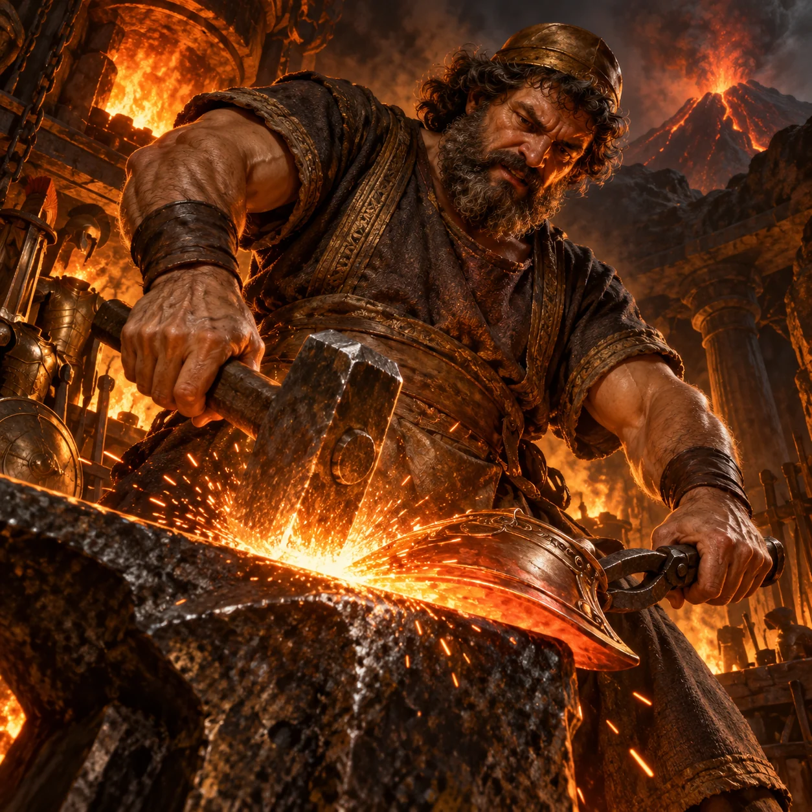
Hammer hot armour on foreground anvil, tongs gripping plate, overwhelming effort in face and sparks from impact
Aura: Kesan kuasa dari aksi fisik/atribut: forge Achilles armour; sparks burst from hammer contact on hot metal, furnace fire (hephaestus-c03, hephaestus-c09, hephaestus-c11), bukan aura generik.
Audit ciri dan sumber
- [object Object]
- [object Object]
- [object Object]
Dua PNG native telah dibaca. A dipilih karena kontak palu dengan logam panas, penjepit dan percikan tempa paling kuat, bukan efek sihir. Janggut, topi oval dan tunik penutup torso tampak. Kaki pincang dari c31 tidak tampak karena crop dekat; B memperlihatkan kaki ditopang tetapi aksi lebih lemah. Bengkel/Etna didukung c20/c30. Tidak ada teks atau aura. Tujuh syarat Sangar terpenuhi. All seven Sangar checks and anatomy checked against native PNG; this is Codex self-review, independent Claude review pending. Also inspected at exact 200x200 pixels in the final 50-image browser sheets; subject and distinguishing attributes remain imposing and readable.
Review sumberONE original square premium painterly cinematic Mythics illustration of Hephaestus, divine smith of Olympus.
ANATOMY: one vigorous bearded man, two arms; oval cap, full opaque tunic covering chest; hammer and tongs; lame foot [hephaestus-c02, hephaestus-c26, hephaestus-c31, hephaestus-c41]
MOMENT: Hammer hot armour on foreground anvil, tongs gripping plate, overwhelming effort in face and sparks from impact
POWER: forge Achilles armour; sparks burst from hammer contact on hot metal, furnace fire [hephaestus-c03, hephaestus-c09, hephaestus-c11]
SCALE & CAMERA: extreme low camera; tight framing and strong foreshortening; subject fills most of square, no invented giant size.
LIGHT & WEATHER: furnace fire and hot metal in smoky darkness; high contrast rim light and deep shadows.
SURFACE: tangible skin or fur, weathered opaque cloth and stone; dark walnut and antique gold palette with one accent.
SETTING: divine workshop beneath volcanic Mount Etna [hephaestus-c20, hephaestus-c30]
MOOD: overwhelming imposing majesty and determined expression, active awe inspiring presence, never ordinary or decorative; respectful living religious deity if applicable.
HARD CONSTRAINTS: no text anywhere including clothes and stones, NO pseudo glyphs, painted forehead symbols, lettering, signature, logo, border, frame or watermark; no extra heads, limbs or fingers; no film/game/anime/comic design; fully opaque clothing covering the whole torso whenever clothed, no nudity, no explicit gore, no generic glow aura, neon outline, energy ribbons or runes. Entire head and attributes remain in frame. Cloth ornaments only plain weaving or geometric patterns, no writing.
Diana
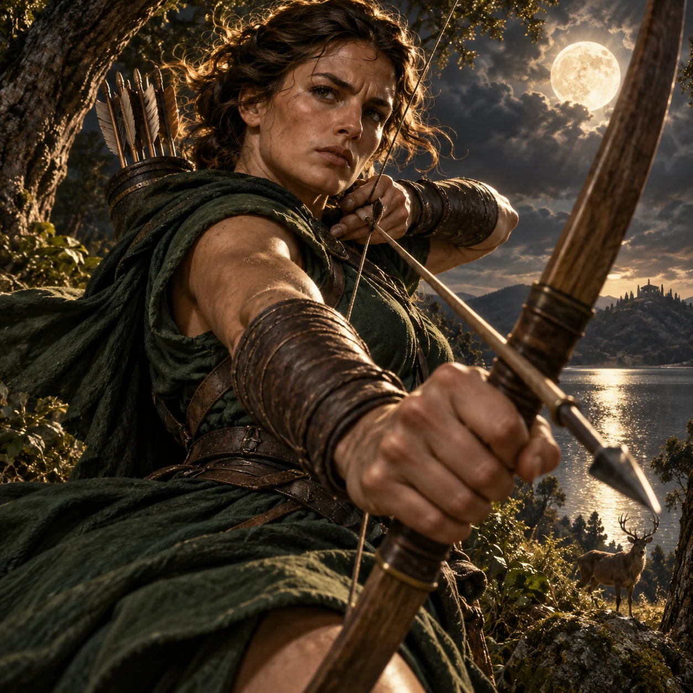
Diana
Aura: No generic aura; strength through documented attributes, physical action and source-linked domain: diana-c02, diana-c06, diana-c11, diana-c22, diana-c25
Audit ciri dan sumber
- [object Object]
- [object Object]
- [object Object]
Dua PNG native telah dibaca. A dipilih karena tatapan huntress berahang tegas dan busur-panah tegang paling besar serta jelas; identitas berbeda dari dewi berwajah halus. B sah dengan lompatan penuh namun wajah lebih jauh. Aksi fisik archery c02/c11/c22, moonlight hanya lingkungan, Nemi/Aricia c25. Dua tangan, tunik opaque, no glow/tulisan. Tujuh syarat Sangar terpenuhi. All seven Sangar checks and anatomy checked against native PNG; this is Codex self-review, independent Claude review pending. Also inspected at exact 200x200 pixels in the final 50-image browser sheets; subject and distinguishing attributes remain imposing and readable.
Review sumberONE original square 1024x1024 premium painterly cinematic Mythics illustration of Diana.
ANATOMY: adult Roman hunt goddess, one head two arms two legs, fully opaque dark green wool hunting tunic and leather bracers, plain bow and quiver [diana-c06]
MOMENT: Turn suddenly toward viewer and draw her bow across close foreground, taut focused face with distinctive strong jaw.
POWER: Physical archery and hunt, no magic beams; moonlight is environmental light reflecting lunar domain [diana-c02, diana-c11, diana-c22]
SCALE & CAMERA: extreme low angle; confrontational tight three-quarter close composition, subject fills at least 80 percent of frame. Natural source scale, no invented giant size.
LIGHT & WEATHER: one dominant natural storm opening or fire/moon light source in deep walnut and antique-gold palette; strong rim light, deep shadow, physically grounded dust or spray.
SURFACE: tactile weathered cloth, aged metal, living skin, feathers or scales as applicable.
SETTING: grove at Aricia beside Lake Nemi, deer in deep background [diana-c02, diana-c25]
MOOD: overwhelming, imposing, active, dignified where divine; never cute, placid or decorative. Original mythology art, no borrowed modern character designs.
HARD CONSTRAINTS: NO text, letters, pseudo-writing, glyphs, runes, logos, signatures or decorative script anywhere including clothing, weapons, architecture. NO border, frame, watermark, extra heads, limbs or fingers. Fully opaque clothing, no nudity, sexualization, explicit gore. No generic aura, neon outline, glowing mist or energy ribbons. Do not print claim IDs on image.
FACIAL IDENTITY ART CHOICE: Distinct athletic mature woman in her thirties: broad square jaw, strong straight nose, asymmetric concentrated frown, weathered outdoors skin and chestnut hair; not a youthful doll face.
Dionysus
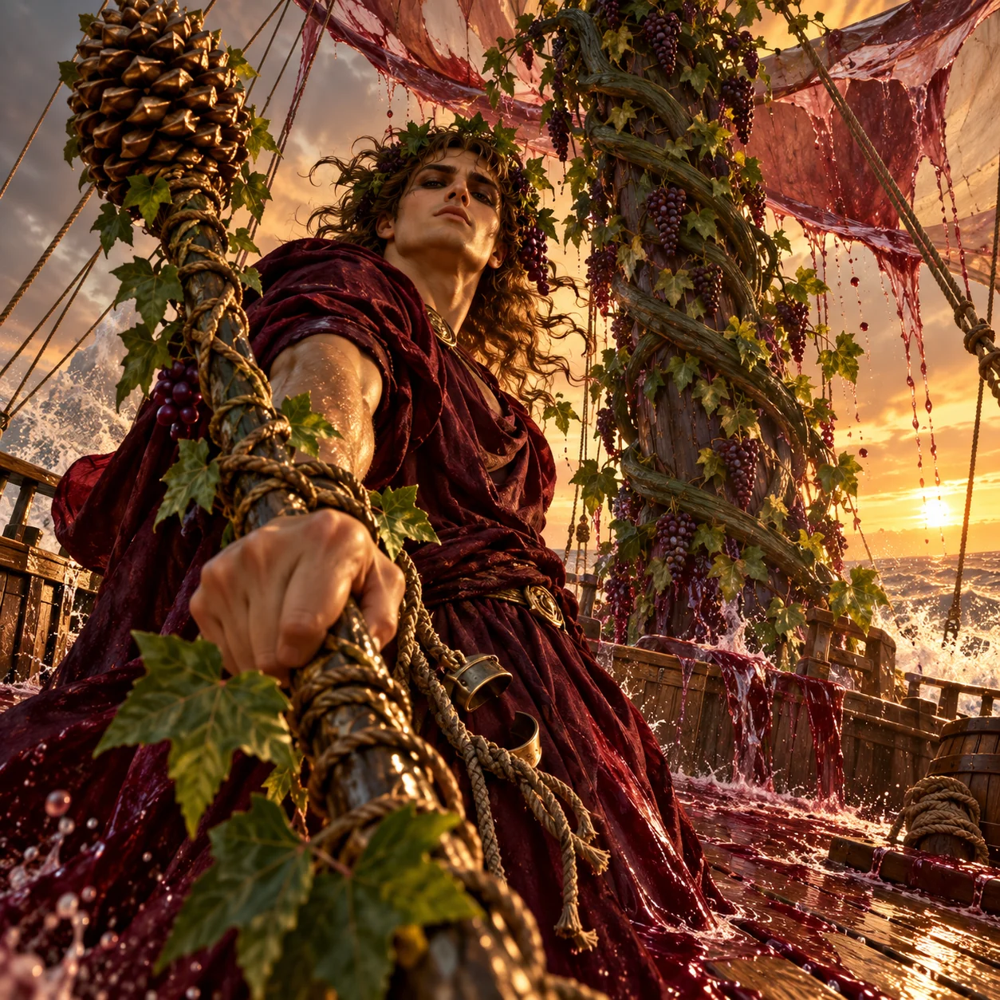
Long-haired youthful Dionysus with thyrsos and ivy, overthrowing restraint on the pirate ship.
Aura: Mast transformed into huge vine and ship streaming wine (dionysus-c28,c39), bonds fall away(c38).
Audit ciri dan sumber
- [object Object]
- [object Object]
- [object Object]
Dua PNG native telah dibaca. A dipilih karena wajah muda berambut panjang, thyrsos berkepala kerucut pinus, dan aksi tangan paling terbaca. Anggur pada tiang serta cairan merah berupa wine berasal dari adegan kapal c28/c39; ikatan yang lepas ditopang c38. Pakaian tertutup, tanpa korban atau gore. B sah tetapi wajah lebih kecil. Semua tujuh syarat Sangar terpenuhi. All seven Sangar checks and anatomy checked against native PNG; this is Codex self-review, independent Claude review pending. Also inspected at exact 200x200 pixels in the final 50-image browser sheets; subject and distinguishing attributes remain imposing and readable.
Review sumberONE original square premium painterly cinematic Mythics illustration of Dionysus, Greek god of wine and vegetation in the pirate ship miracle.
ANATOMY: long-haired youthful male, one head two eyes two arms two legs, ivy wreath, LARGE obvious pinecone-tipped thyrsos staff, fully opaque dark burgundy robe covering torso and legs [dionysus-c04,c34].
POWER: ship's mast transforms into a huge tangible vine, sails drip wine, wine streams over deck and restraining cords fall loose from his wrist [dionysus-c28,c38,c39]. Thick woody green vines, NOT glowing ribbons.
SCALE & CAMERA: extreme low close angle, young angular face and pinecone staff fill foreground; no gigantic human anatomy.
LIGHT & WEATHER: one dying gold sunset source, deep shadows, sea spray and snapping sail cloth.
SURFACE: wet splintered wood, rough ivy leaves, wine-dark fabric, real grape vines.
SETTING: deck of pirate ship with a mast now a huge woody vine [dionysus-c28,c39].
MOOD: ecstatic fierce divine authority, overwhelming, never ordinary or calm.
HARD CONSTRAINTS: no text/pseudo-glyphs anywhere on ship/clothes/staff, no logos/watermarks/borders, no extra anatomy, no film/game/anime design, no nudity/gore, no aura/neon/energy ribbons.
MOMENT: Dionysus drives thyrsos down into the wine-flooded deck, his loose bonds falling as vines engulf mast behind him, sharply intense eyes angled down at viewer; close confrontation with staff and face dominant.
Durga
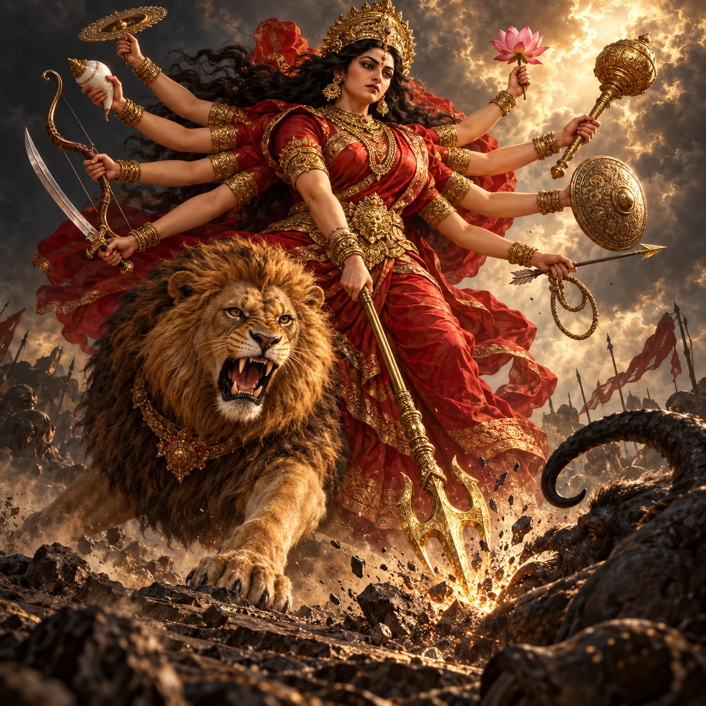
Durga
Aura: No generic aura; strength through documented attributes, physical action and source-linked domain: durga-c04, durga-c09, durga-c13, durga-c14, durga-c20, durga-c21
Audit ciri dan sumber
- [object Object]
- [object Object]
- [object Object]
Recovered third native PNG shows exactly ten hands: image-left discus, conch, bow, sword, trident; image-right lotus, mace, shield, arrow, noose. Single securely held mace and one trident hand; one lion, no unsupported anatomy. Buffalo confrontation ground contact is an editorial non-gory reduction of c13/c14. All seven Sangar checks pass. Selected corrected attempt03 (preserved as C and placed in A slot); previous A and B fail and remain archived. All seven Sangar checks and anatomy checked against native PNG; this is Codex self-review, independent Claude review pending. Also inspected at exact 200x200 pixels in the final 50-image browser sheets; subject and distinguishing attributes remain imposing and readable.
Review sumberONE original square 1024x1024 premium painterly cinematic Mythics illustration of Durga.
ANATOMY: majestic dignified Hindu warrior goddess, one head two eyes exactly TEN arms (five left five right), two legs, opaque crimson sari and armor, rides ONE lion with four legs; exactly FIVE hands on image-left hold (top to bottom) discus, conch, bow, sword, trident; exactly FIVE hands on image-right hold (top to bottom) lotus, mace, shield, arrow, noose. ONLY ONE hand holds the single trident [durga-c04, durga-c09, durga-c21]
MOMENT: Lion advances diagonally while Durga lowers ONE trident using ONE arm. Her ten arms form two clear fans of five each. Every hand is separated and attached to one anatomically distinct arm. No second hand touches trident; other nine hands hold nine distinct listed objects.
POWER: Documented battle against buffalo Mahisha: trident strikes rocky ground near a buffalo silhouette, dust and sparks from impact, no gore [durga-c13, durga-c14, durga-c20]
SCALE & CAMERA: extreme low angle; physical action with fuller body composition, subject fills at least 75 percent of frame; all distinguishing limbs readable. Natural source scale, no invented giant size.
LIGHT & WEATHER: one dominant natural storm opening or fire/moon light source in deep walnut and antique-gold palette; strong rim light, deep shadow, physically grounded dust or spray.
SURFACE: tactile weathered cloth, aged metal, living skin, feathers or scales as applicable.
SETTING: shadowed battlefield of Mahisha, rock and dust, no writing [durga-c09, durga-c14]
MOOD: overwhelming, imposing, active, dignified where divine; never cute, placid or decorative. Original mythology art, no borrowed modern character designs.
HARD CONSTRAINTS: NO text, letters, pseudo-writing, glyphs, runes, logos, signatures or decorative script anywhere including clothing, weapons, architecture. NO border, frame, watermark, extra heads, limbs or fingers. Fully opaque clothing, no nudity, sexualization, explicit gore. No generic aura, neon outline, glowing mist or energy ribbons. Do not print claim IDs on image.
TARGETED ANATOMY CORRECTION: TOTAL TEN ARMS AND TEN HANDS ONLY, NOT ELEVEN. Count all ten attached shoulders-to-hands. Every object is held securely by a hand; exactly one each of discus, conch, bow, sword, trident, lotus, mace, shield, arrow, noose. NO floating weapons, duplicated maces, duplicated objects, extra hands, extra forearms. Two front arms only. Face mature broad-cheeked woman with focused solemn courage, not monstrous.
Fairy
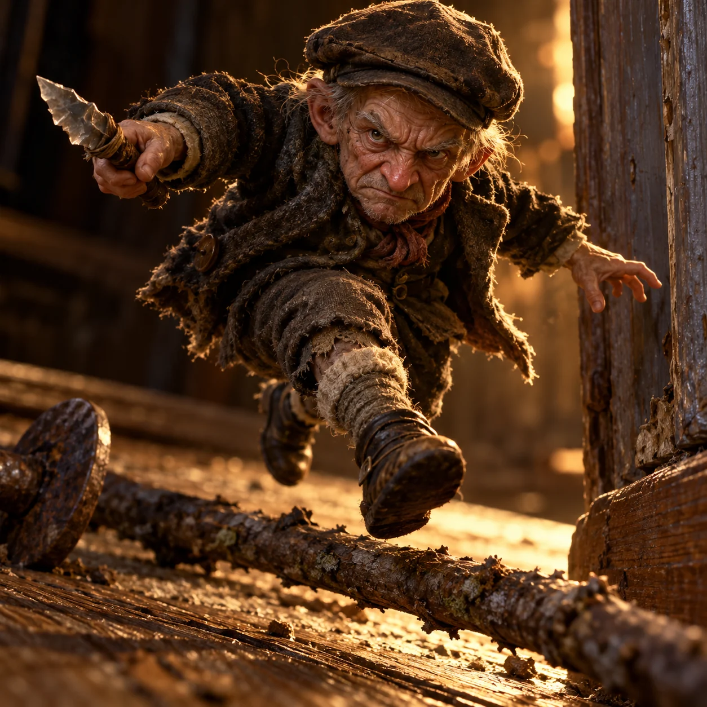
Fairy, small wizened male house fairy variant
Aura: No generic aura; strength through documented attributes, physical action and source-linked domain: fairy-c03, fairy-c05, fairy-c07, fairy-c16
Audit ciri dan sumber
- [object Object]
- [object Object]
- [object Object]
Recovered third native PNG has small normal rounded human ears, no wings or horns. Two arms and two legs; tiny wizened adult male leaps over a twig beside a human nail, holding flint weapon. Menace from face and physical motion, no invented magic. All seven Sangar checks pass. Selected corrected attempt03 (preserved as C and placed in A slot); previous A and B fail and remain archived. All seven Sangar checks and anatomy checked against native PNG; this is Codex self-review, independent Claude review pending. Also inspected at exact 200x200 pixels in the final 50-image browser sheets; subject and distinguishing attributes remain imposing and readable.
Review sumberONE original square 1024x1024 premium painterly cinematic Mythics illustration of Fairy, small wizened male house fairy variant.
ANATOMY: small wizened adult male house fairy, one head two arms two legs, NO wings, fully opaque weathered dark coat and cap, tiny flint weapon [fairy-c03, fairy-c07, fairy-c16]
MOMENT: Leap from a wooden threshold onto a thick twig, small flint weapon extended, giant nail head and floor grain establish truly tiny scale, no wings.
POWER: No invented magic effect; capricious dangerous menace through facial expression, movement and physical flint weapon [fairy-c05, fairy-c16]
SCALE & CAMERA: extreme low angle; physical action with fuller body composition, subject fills at least 75 percent of frame; all distinguishing limbs readable. Natural source scale, no invented giant size.
LIGHT & WEATHER: one dominant natural storm opening or fire/moon light source in deep walnut and antique-gold palette; strong rim light, deep shadow, physically grounded dust or spray.
SURFACE: tactile weathered cloth, aged metal, living skin, feathers or scales as applicable.
SETTING: dark house threshold with human-sized nail and wood grain establishing small scale [fairy-c03]
MOOD: overwhelming, imposing, active, dignified where divine; never cute, placid or decorative. Original mythology art, no borrowed modern character designs.
HARD CONSTRAINTS: NO text, letters, pseudo-writing, glyphs, runes, logos, signatures or decorative script anywhere including clothing, weapons, architecture. NO border, frame, watermark, extra heads, limbs or fingers. Fully opaque clothing, no nudity, sexualization, explicit gore. No generic aura, neon outline, glowing mist or energy ribbons. Do not print claim IDs on image.
TARGETED ANATOMY CORRECTION: Normal rounded HUMAN EARS, small round human ear rims visible on each side. NO pointed ears, elf ears, long ears, tusks, horns, animal parts, wings or invented anatomy. This is a tiny wizened old HUMANLIKE MALE HOUSE FAIRY, not an elf or goblin design. Retain small source scale with human nail comparison, leap over twig, and flint weapon.
Mars
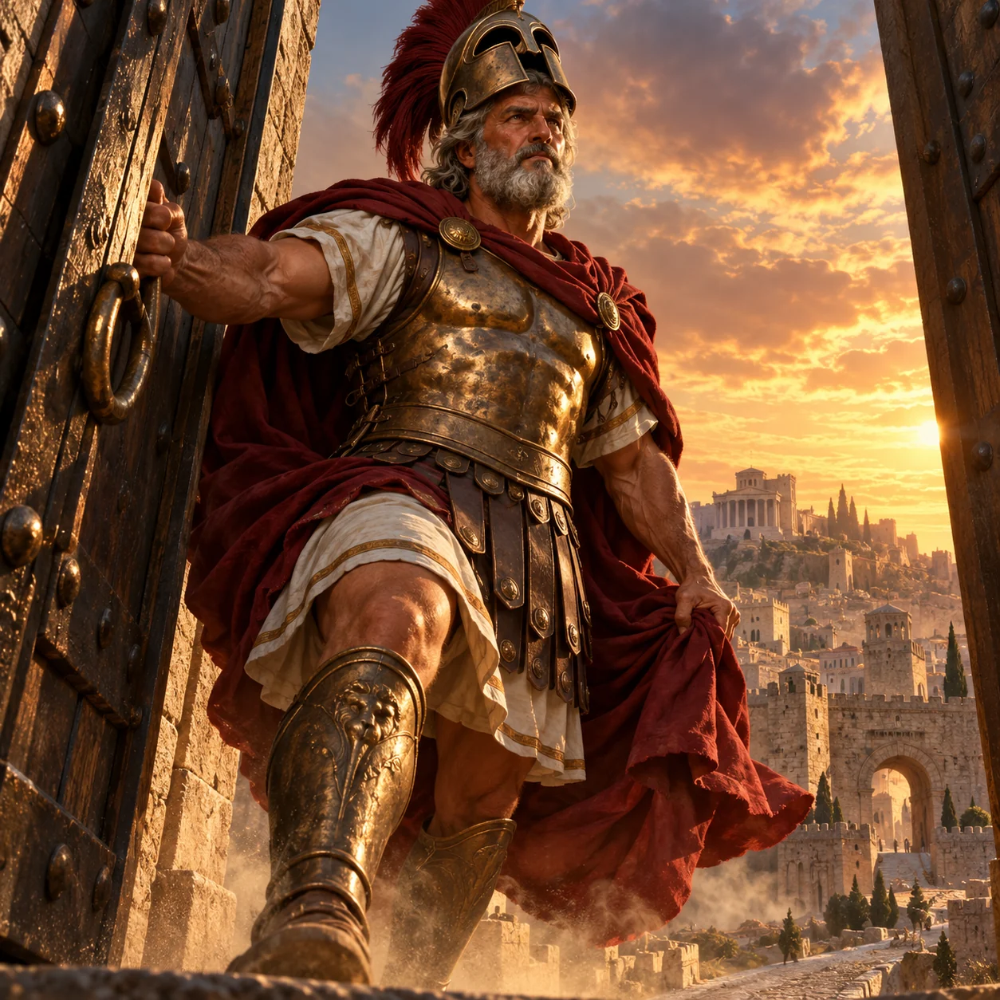
Older bearded Roman god, Corinthian helmet tipped back above visible face, one head two arms two legs; opaque Roman tunic and full breastplate, no spear or shield invented
Aura: Documented effects and physical action only; no generic aura.
Audit ciri dan sumber
- [object Object]
- [object Object]
- [object Object]
Corrected attempt03 (C, retained separately and placed in A slot) gives the documented Corinthian mask tipped above a stern grey-bearded face while he physically opens the gate. Initial A/B lacked identifying helmet; both remain archived. All seven Sangar checks and anatomy checked against native PNG; this is Codex self-review, independent Claude review pending. Also inspected at exact 200x200 pixels in the final 50-image browser sheets; subject and distinguishing attributes remain imposing and readable.
Review sumberONE original square 1024x1024 premium painterly cinematic Mythics illustration of mars.
ANATOMY: Older bearded Roman god, EXACT CLASSICAL CORINTHIAN HELMET tipped far back: its entire long Greek nose guard, paired almond eye openings and long cheek plates sit ABOVE the forehead on top of the head; bearded face fully visible below. NO Roman legionary helmet, simple crest headband or missing faceplate, one head two arms two legs; opaque Roman tunic and full breastplate, no spear or shield invented [mars-c09]
MOMENT: Mars strides through an open city gate, one arm physically pulls a heavy plain gate open and the other gathers his cloak, helmet tilted back and stern elder face close.
POWER: Protective march guarding Roman city border, physical wind moves cape and dust from footstep; no supernatural effect [mars-c03, mars-c12]
SCALE & CAMERA: extreme low angle, subject dominant at 200px; tight imposing frame but full identifying attributes readable; source scale only, not an invented giant.
LIGHT & WEATHER: one strong natural sunset or moon key light, antique gold and dark walnut shadows, tangible physical dust or spray only.
SURFACE: tactile fur or feathers, aged metal, rough stone, fully opaque woven clothing wherever humanoid.
SETTING: Roman city gate and frontier road, military civic guardian context [mars-c03, mars-c08]
MOOD: overwhelming active mythological presence, solemn courage for divine subjects, never cute, ordinary passive person or decorative statue.
HARD CONSTRAINTS: no letters, writing, pseudo-glyphs, signs, symbols resembling script on ANY surfaces; NO logo/signature/border/watermark; no borrowed film/game/comic/anime design; no extra anatomy. Full opaque torso covering for humanoids, no nudity or sexualization, no gore, blood, harmed people or victims. No generic aura, neon outlines, runes, energy ribbons or ungrounded magic. Cloth and jewelry plain and unmarked. No attack/combat/weapons/harmed people. Helmet is specifically tipped back to expose whole face. No additional animals or magical agriculture.
TARGETED CORRECTION: The CORINTHIAN HELMET MUST HAVE ITS FULL MASK ABOVE HIS FOREHEAD, with two eye holes and long central nose guard visibly raised on top of head. Stern grey-bearded guardian actively wrenches open heavy Roman gate, muscles tense, not a relaxed soldier portrait. Helmet wholly inside frame.
Heracles
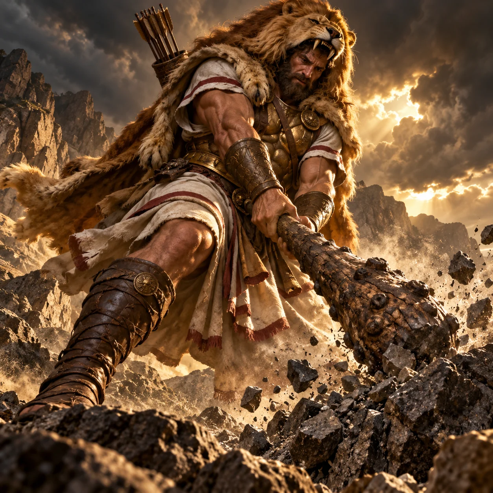
Heracles
Aura: No generic aura; strength through documented attributes, physical action and source-linked domain: heracles-c06, heracles-c13, heracles-c15
Audit ciri dan sumber
- [object Object]
- [object Object]
- [object Object]
Dua PNG native telah dibaca. B dipilih karena dua tangan memukul batu dengan gada beruas, kaki menapak dan serpihan memperlihatkan kekuatan fisik. Kulit singa berkepala membingkai wajah tanpa menjadi kepala tambahan hidup; jubah dan breastplate menutup torso. Quiver tampak; tanpa glow/rekaan kuasa. A sah tetapi gerak gada kurang lengkap. Tujuh syarat Sangar terpenuhi. All seven Sangar checks and anatomy checked against native PNG; this is Codex self-review, independent Claude review pending. Also inspected at exact 200x200 pixels in the final 50-image browser sheets; subject and distinguishing attributes remain imposing and readable.
Review sumberONE original square 1024x1024 premium painterly cinematic Mythics illustration of Heracles.
ANATOMY: powerful mature man, one head two arms two legs, lion pelt with lion-head hood over fully opaque robe and golden breastplate, knotted wooden club, quiver [heracles-c06, heracles-c13, heracles-c15]
MOMENT: Swing the knotted club downward into a broken rock in a wide lunging movement, robe armor and lion pelt all visible; no modern superhero design.
POWER: Immense physical strength, club crashes into rock producing chips and dust; no magic emission [heracles-c06, heracles-c13]
SCALE & CAMERA: extreme low angle; physical action with fuller body composition, subject fills at least 75 percent of frame; all distinguishing limbs readable. Natural source scale, no invented giant size.
LIGHT & WEATHER: one dominant natural storm opening or fire/moon light source in deep walnut and antique-gold palette; strong rim light, deep shadow, physically grounded dust or spray.
SURFACE: tactile weathered cloth, aged metal, living skin, feathers or scales as applicable.
SETTING: rough Nemean rock terrain, staging of the Nemean club and lion-pelt tradition [heracles-c06, heracles-c15]
MOOD: overwhelming, imposing, active, dignified where divine; never cute, placid or decorative. Original mythology art, no borrowed modern character designs.
HARD CONSTRAINTS: NO text, letters, pseudo-writing, glyphs, runes, logos, signatures or decorative script anywhere including clothing, weapons, architecture. NO border, frame, watermark, extra heads, limbs or fingers. Fully opaque clothing, no nudity, sexualization, explicit gore. No generic aura, neon outline, glowing mist or energy ribbons. Do not print claim IDs on image.
Hermes
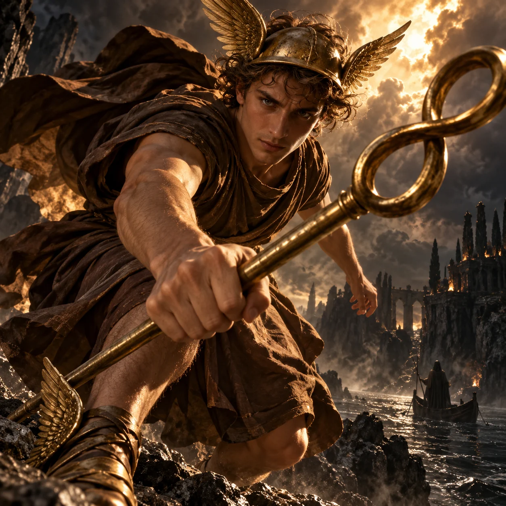
Hermes
Aura: No generic aura; strength through documented attributes, physical action and source-linked domain: hermes-c02, hermes-c04, hermes-c14, hermes-c18, hermes-c26
Audit ciri dan sumber
- [object Object]
- [object Object]
- [object Object]
Variant A chosen after viewing both: forceful herald-wand sweep, direct youthful gaze, winged headwear and sandal foreground, Styx guidance scene (c14). B has fuller sandals but weaker confrontation. Coherent one head and two arms; no attack emission or writing. Wand loop is editorial herald-staff ornament, not a new supernatural power. All seven Sangar checks and anatomy checked against native PNG; this is Codex self-review, independent Claude review pending. Also inspected at exact 200x200 pixels in the final 50-image browser sheets; subject and distinguishing attributes remain imposing and readable.
Review sumberONE original square 1024x1024 premium painterly cinematic Mythics illustration of Hermes.
ANATOMY: athletic beardless young man, one head, two arms, two legs, winged sandals, plain fully opaque long walnut tunic, herald wand with simple open figure-eight top [hermes-c04, hermes-c18, hermes-c26]
MOMENT: Lean urgently over the viewer while driving his herald wand diagonally across the close foreground, face intent and knowing.
POWER: No visible supernatural emission; his herald wand and decisive movement convey the messenger and guide of souls [hermes-c02, hermes-c14]
SCALE & CAMERA: extreme low angle; confrontational tight three-quarter close composition, subject fills at least 80 percent of frame. Natural source scale, no invented giant size.
LIGHT & WEATHER: one dominant natural storm opening or fire/moon light source in deep walnut and antique-gold palette; strong rim light, deep shadow, physically grounded dust or spray.
SURFACE: tactile weathered cloth, aged metal, living skin, feathers or scales as applicable.
SETTING: rocky bank of river Styx, dark underworld waters [hermes-c14]
MOOD: overwhelming, imposing, active, dignified where divine; never cute, placid or decorative. Original mythology art, no borrowed modern character designs.
HARD CONSTRAINTS: NO text, letters, pseudo-writing, glyphs, runes, logos, signatures or decorative script anywhere including clothing, weapons, architecture. NO border, frame, watermark, extra heads, limbs or fingers. Fully opaque clothing, no nudity, sexualization, explicit gore. No generic aura, neon outline, glowing mist or energy ribbons. Do not print claim IDs on image.
Indra
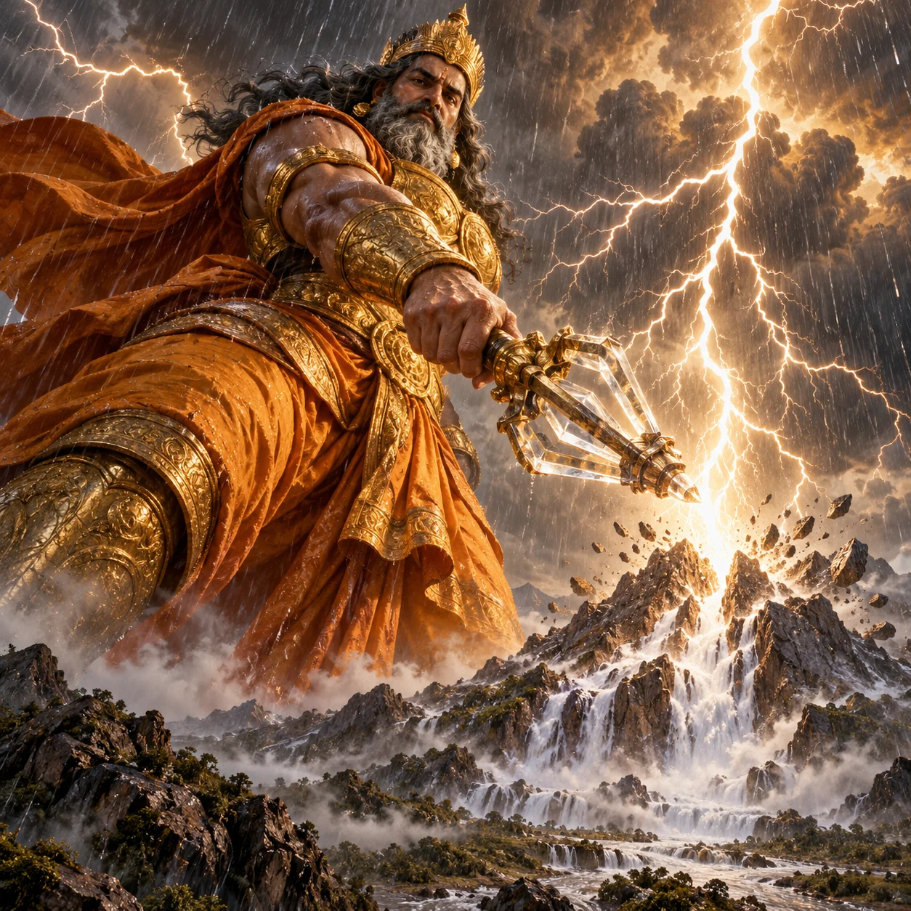
Bearded Vedic Indra directing vajra-born thunder from Svarga.
Aura: Thunderbolt visibly splits mountain(c37), beneficial rain(c36), gigantic bearded form(c27).
Audit ciri dan sumber
- [object Object]
- [object Object]
- [object Object]
Dua PNG native telah dibaca. A dipilih karena wajah berjanggut dan vajra besar dalam gerakan turun paling tegas. Ukuran raksasa ditopang c27; sambaran kilat membelah gunung dan hujan menyuburkan berasal dari c36/c37. Dua lengan, baju zirah menutup torso, tanpa korban, aura atau tulisan. B sah dengan langkah penuh tetapi wajah lebih kecil. Tujuh syarat Sangar terpenuhi. All seven Sangar checks and anatomy checked against native PNG; this is Codex self-review, independent Claude review pending. Also inspected at exact 200x200 pixels in the final 50-image browser sheets; subject and distinguishing attributes remain imposing and readable.
Review sumberONE original square premium painterly cinematic Mythics illustration of Indra, benevolent Hindu Vedic king of gods, revered and awe-inspiring.
ANATOMY: one bearded gigantic divine male, one head two eyes two arms two legs, fully opaque royal saffron cloth and dark gold patterned armor covering torso/legs, plain gold crown, firmly holding large clear vajra thunderbolt-mace [indra-c02,c25,c27].
POWER: natural branching lightning from vajra strikes mountain so rock parts and rain pours beneficially over dry land; no victims [indra-c01,c36,c37].
SCALE & CAMERA: extreme low angle, documented gigantic king fills frame, small mountain ridges below for scale [indra-c27].
LIGHT & WEATHER: single lightning flash as key light, warm dark storm clouds, intense rain and rocky dust.
SURFACE: rain-wet textured beard, woven cloth, aged gold metal and rough stone.
SETTING: Svarga storm-cloud realm over mountains [indra-c33,c37].
MOOD: sacred protective majesty, resolute and overwhelming, respectful never monstrous or evil.
HARD CONSTRAINTS: no writing/glyphs/letters on clothes/crown/weapon/stone, no text/logo/border/watermark, no extra limbs/heads/eyes, no borrowed movie/game/comic designs, no nudity/gore, no aura/neon/ribbons; lightning is real branching discharge.
MOMENT: Indra sweeps vajra diagonally down toward mountain below, forearm huge in close foreground, severe compassionate eyes focused toward viewer, thunder flash hits distant ridge which splits behind lower silhouette.
Isis
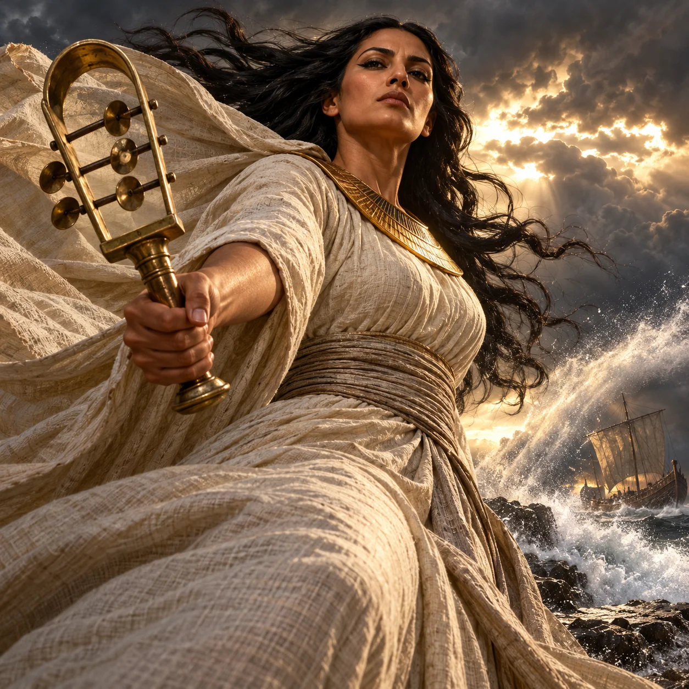
Isis
Aura: No generic aura; strength through documented attributes, physical action and source-linked domain: isis-c06, isis-c10, isis-c15, isis-c33, isis-c37, isis-c52
Audit ciri dan sumber
- [object Object]
- [object Object]
- [object Object]
Native A corrigé attempt03 dan B awal telah dibaca, termasuk kedua gambar awal bertanduk/disk. A dipilih tanpa mahkota yang tidak terdokumentasi: wajah dewasa, dua tangan, sistrum kuningan didorong ke depan dan angin laut/spray di bawah kuasa c15/c37 melindungi kapal. Linen menutup torso; tanpa tulisan atau aura. B gagal mahkota di luar klaim, arsip utuh. Tujuh syarat Sangar A terpenuhi. All seven Sangar checks and anatomy checked against native PNG; this is Codex self-review, independent Claude review pending. Also inspected at exact 200x200 pixels in the final 50-image browser sheets; subject and distinguishing attributes remain imposing and readable.
Review sumberONE original square 1024x1024 premium painterly cinematic Mythics illustration of Isis.
ANATOMY: dignified mature Egyptian goddess, human female form, one head two arms two legs, fully opaque heavy linen robe and plain gold collar, brass sistrum held clearly [isis-c06, isis-c10, isis-c33]
MOMENT: Snap the brass sistrum through the close foreground as wind drives her veil aside, resolute protective expression.
POWER: Physical sea winds governed by her will bend spray away from the foreground; protectress of sailors, no generic magic glow [isis-c15, isis-c37]
SCALE & CAMERA: extreme low angle; confrontational tight three-quarter close composition, subject fills at least 80 percent of frame. Natural source scale, no invented giant size.
LIGHT & WEATHER: one dominant natural storm opening or fire/moon light source in deep walnut and antique-gold palette; strong rim light, deep shadow, physically grounded dust or spray.
SURFACE: tactile weathered cloth, aged metal, living skin, feathers or scales as applicable.
SETTING: stormy sea shoreline, based on her protection of sailors [isis-c15, isis-c52]
MOOD: overwhelming, imposing, active, dignified where divine; never cute, placid or decorative. Original mythology art, no borrowed modern character designs.
HARD CONSTRAINTS: NO text, letters, pseudo-writing, glyphs, runes, logos, signatures or decorative script anywhere including clothing, weapons, architecture. NO border, frame, watermark, extra heads, limbs or fingers. Fully opaque clothing, no nudity, sexualization, explicit gore. No generic aura, neon outline, glowing mist or energy ribbons. Do not print claim IDs on image.
TARGETED FIDELITY CORRECTION: Isis is BAREHEADED with only natural black hair. NO crown, horns, sun disc, moon disc, halo, animal headdress or ornate head ornament at all. A simple gold collar is permitted. Her sistrum and protective sea wind are the identifying attributes. Clearly fully opaque densely woven clothing.
Gaia
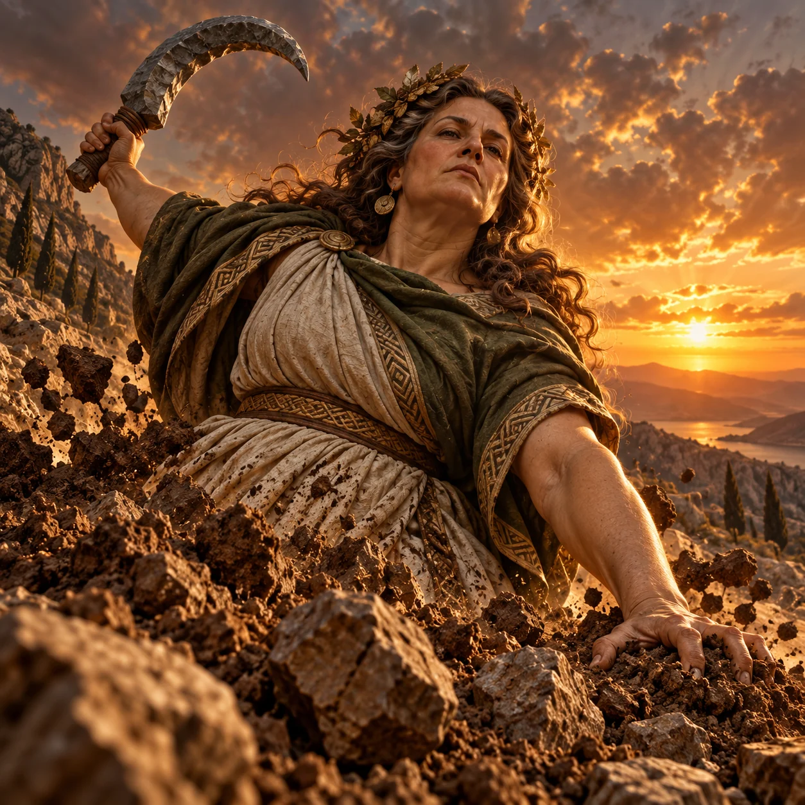
Documented form, physical action and attributes; compositions A and B.
Aura: Kesan kuasa dari aksi fisik/atribut: rise from Earth, inseparable from native element; clods physically part and roll (gaia-c11), bukan aura generik.
Audit ciri dan sumber
- [object Object]
- [object Object]
- [object Object]
A clearly emerges from displaced earth, bracing a hand beside the viewer and holding one recognizable flint sickle. B has a malformed two-handled bow-like attribute and fails. All seven Sangar checks and anatomy checked against native PNG; this is Codex self-review, independent Claude review pending. Also inspected at exact 200x200 pixels in the final 50-image browser sheets; subject and distinguishing attributes remain imposing and readable.
Review sumberONE original square premium painterly cinematic Mythics illustration of Gaia, primordial Earth mother.
ANATOMY: one matronly human female head,two arms; full opaque heavy Greek robes, great grey flint sickle; human skin not bark or rock [gaia-c11, gaia-c14]
MOMENT: Surge waist-first from ground, one hand planted on Earth, other raises jagged flint sickle; stern maternal face and falling clods dominate
POWER: rise from Earth, inseparable from native element; clods physically part and roll [gaia-c11]
SCALE & CAMERA: extreme low camera; tight framing and strong foreshortening; subject fills most of square, no invented giant size.
LIGHT & WEATHER: one dying sunset across earth clods; high contrast rim light and deep shadows.
SURFACE: tangible skin or fur, weathered opaque cloth and stone; dark walnut and antique gold palette with one accent.
SETTING: Earth itself on rocky Greek slope [gaia-c01, gaia-c11]
MOOD: overwhelming imposing majesty and determined expression, active awe inspiring presence, never ordinary or decorative; respectful living religious deity if applicable.
HARD CONSTRAINTS: no text anywhere including clothes and stones, NO pseudo glyphs, painted forehead symbols, lettering, signature, logo, border, frame or watermark; no extra heads, limbs or fingers; no film/game/anime/comic design; fully opaque clothing covering the whole torso whenever clothed, no nudity, no explicit gore, no generic glow aura, neon outline, energy ribbons or runes. Entire head and attributes remain in frame. Cloth ornaments only plain weaving or geometric patterns, no writing.
Horus
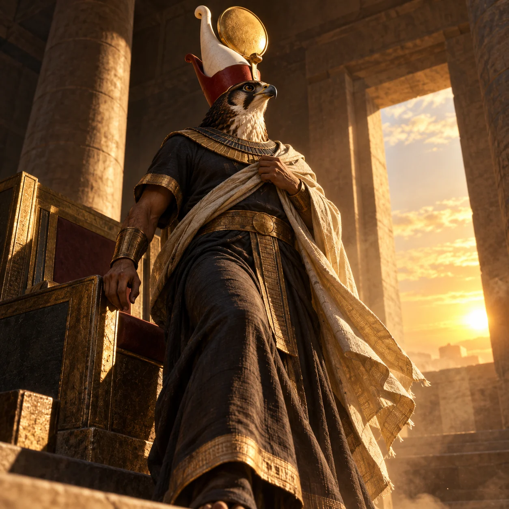
Documented Ra-Harahkhte fusion: falcon-headed Horus with double crown and sun disk.
Aura: Double crown with sun disk(c06), defender of order(c11) rising from throne(c22).
Audit ciri dan sumber
- [object Object]
- [object Object]
- [object Object]
B keeps the full double crown and sun disk inside frame and shows Horus stepping up from his throne. A fails crown cropping; no power invented. All seven Sangar checks and anatomy checked against native PNG; this is Codex self-review, independent Claude review pending. Also inspected at exact 200x200 pixels in the final 50-image browser sheets; subject and distinguishing attributes remain imposing and readable.
Review sumberONE original square premium painterly cinematic Mythics illustration of Horus as documented Ra-Harahkhte, falcon-headed sun god and royal defender.
ANATOMY: ONE falcon head with two eyes hooked beak and feathered cheeks, human male body with exactly two arms two legs, fully opaque dark linen tunic and ankle-length wrap, Egyptian DOUBLE CROWN combining white tall crown and red lower crown, large ROUND gold sun disk on crown [horus-c06]. NO wings added to human body.
POWER: sun domain embodied through real low sun lighting crown and casting long sharp shadows, NO invented magic [horus-c06].
SCALE & CAMERA: extreme low CLOSE angle, falcon head doublecrown/disk dominate, no giant size.
LIGHT: single dying warm sun through doorway, dust, deep black-gold shadows.
SURFACE: real falcon feathers, weathered metal, rough opaque woven cloth, stone.
SETTING: Egyptian royal throne and plain unlettered palace stone [horus-c22,c23].
MOOD: imposing protective royal authority, awe-inspiring and alert, never decorative neutral statue.
HARD CONSTRAINTS: no hieroglyphs/pseudo-letters or text anywhere on crown/throne/walls/clothes, no logos/borders/watermarks, no extra anatomy, no film/game/anime designs, no nudity/gore, no aura/neon/ribbons.
MOMENT: Side-low view: Horus steps forward from throne and lifts his crowned falcon face into a shaft of physical sunlight, one hand draws opaque mantle across chest, other curls beside armrest. Windswept dust and fully covered cloth in motion.
CROWN FRAMING: entire white crown and complete ROUND sun disk fit inside square with generous 10 percent empty margin above and sides. Pull camera back enough; never crop top of head, crown or disk. Plain textiles and unmarked stone.
Prometheus
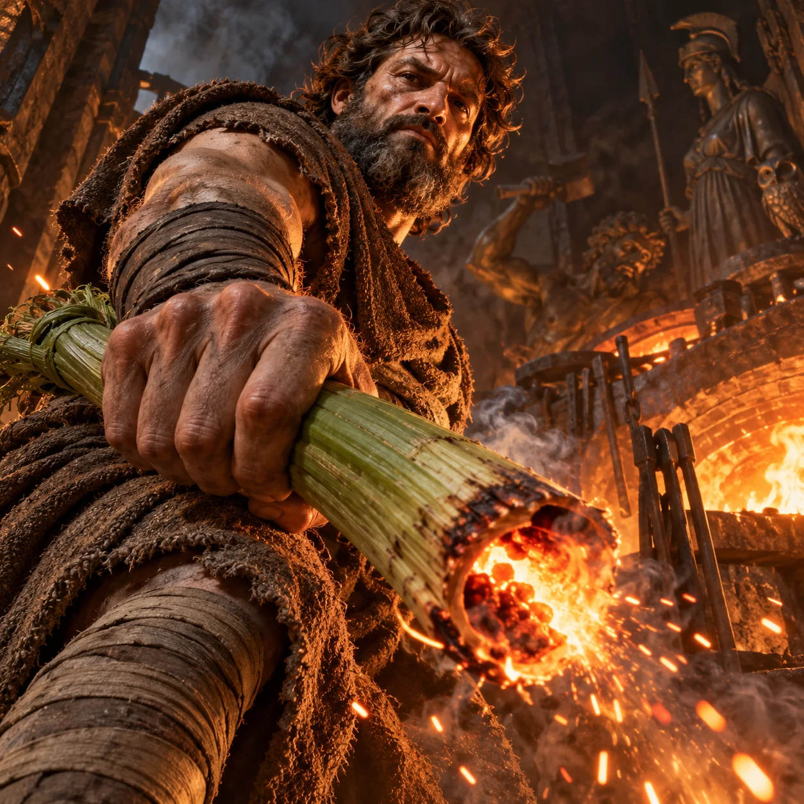
Human-form Prometheus carrying stolen fire in hollow fennel from Olympian workshop.
Aura: Documented stolen fire and hollow fennel(c10,c23), heroic unbending immortal spirit(c18) conveyed through determined action.
Audit ciri dan sumber
- [object Object]
- [object Object]
- [object Object]
Dua PNG native telah dibaca. A dipilih karena tangan dan batang fennel berlubang berisi bara/api curian mendominasi, badan berpaling meninggalkan bengkel membuat aksi jelas. Identitas Titan di seni Yunani c01/c14/c18; firefennel c10/c23. Athena di belakang berupa patung editorial sebagai konteks workshop c10, bukan tokoh hidup tambahan. B sah tetapi tangan kedua menutup api. Pakaian tertutup, tanpa gore/text/aura. Tujuh syarat Sangar terpenuhi. All seven Sangar checks and anatomy checked against native PNG; this is Codex self-review, independent Claude review pending. Also inspected at exact 200x200 pixels in the final 50-image browser sheets; subject and distinguishing attributes remain imposing and readable.
Review sumberONE original square premium painterly cinematic Mythics illustration of Prometheus, heroic immortal Greek Titan taking the gift of fire from Olympus for humanity.
ANATOMY: one mature male Titan in human form, one head two eyes two arms two legs, determined weathered bearded face chosen editorially, fully opaque rough brown tunic and full leg wrap; hold ONE thick HOLLOW FENNEL STALK containing glowing real embers and fire at its open end [prometheus-c01,c14,c18,c10,c23].
POWER: stolen real fire hidden inside fennel stalk, NOT fire from his body, NOT ability to summon flame [prometheus-c10,c23].
SCALE & CAMERA: extreme low close view, clenched hand, face, fennel ember opening dominate, no invented gigantic size.
LIGHT & WEATHER: single furnace fire illuminates smoke, sparks and stark face shadows.
SURFACE: coarse woven opaque cloth, soot, green-brown fibrous hollow fennel, rough workshop stone.
SETTING: workshop of Hephaistos and Athena on Mount Olympus [prometheus-c10].
MOOD: unbending awe-inspiring heroic defiance(c18), no ordinary laborer pose or decorative calm portrait.
HARD CONSTRAINTS: no text/pseudo-glyphs/runes ANYWHERE on stone/tools/clothes, no logos/frames/watermarks, no extra anatomy, no film/game/comic designs, no nudity/gore, no aura/neon/ribbons.
MOMENT: Prometheus closes his hand around the hollow fennel and pulls it out of the fiery workshop into foreground, he glances intensely down toward viewer as sparks pour from ember opening. Twisting torso and direct determined gaze.
Amun
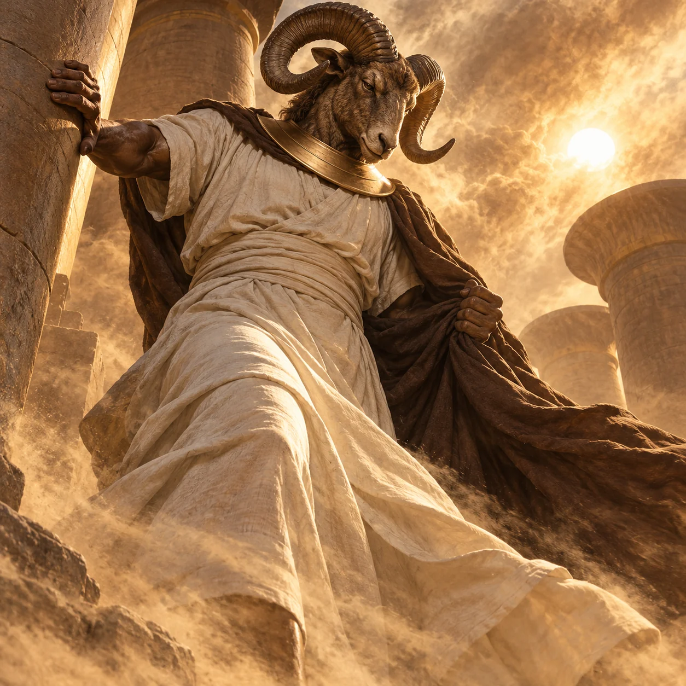
Three-quarter turn into wind, hand grasps plain column, other gathers cloak, face looking down
Aura: Kesan kuasa dari aksi fisik/atribut: wind physically sweeps robes and desert dust, documented wind aspect (amun-c01, amun-c16, amun-c20), bukan aura generik.
Audit ciri dan sumber
- [object Object]
- [object Object]
- [object Object]
A final attempt03 dan B awal dilihat native root. A dipilih: kepala domba satu/tanduk dua, dua tangan, satu menahan kolom sementara lain menarik cloak, angin menggerakkan linen/debu c16. Pakaian polos menutup torso dan kolom Karnak tanpa glyph c08/c29. B gagal trim pseudo-tulisan; dua kegagalan diarsip utuh. Tiga calls habis. Tujuh syarat Sangar A terpenuhi. All seven Sangar checks and anatomy checked against native PNG; this is Codex self-review, independent Claude review pending. Also inspected at exact 200x200 pixels in the final 50-image browser sheets; subject and distinguishing attributes remain imposing and readable.
Review sumberONE original square premium painterly cinematic Mythics illustration of Amun, sun and air god in ram-headed form.
ANATOMY: one ram head on male body, two curved horns, two arms; full opaque Egyptian robe, no weapon [amun-c03]
MOMENT: Three-quarter turn into wind, hand grasps plain column, other gathers cloak, face looking down
POWER: wind physically sweeps robes and desert dust, documented wind aspect [amun-c01, amun-c16, amun-c20]
SCALE & CAMERA: extreme low camera; tight framing and strong foreshortening; subject fills most of square, no invented giant size.
LIGHT & WEATHER: one low sun filtered through moving dust; high contrast rim light and deep shadows.
SURFACE: tangible skin or fur, weathered opaque cloth and stone; dark walnut and antique gold palette with one accent.
SETTING: Karnak in Thebes, plain columns without inscriptions [amun-c08, amun-c29]
MOOD: overwhelming imposing majesty and determined expression, active awe inspiring presence, never ordinary or decorative; respectful living religious deity if applicable.
HARD CONSTRAINTS: no text anywhere including clothes and stones, NO pseudo glyphs, painted forehead symbols, lettering, signature, logo, border, frame or watermark; no extra heads, limbs or fingers; no film/game/anime/comic design; fully opaque clothing covering the whole torso whenever clothed, no nudity, no explicit gore, no generic glow aura, neon outline, energy ribbons or runes. Entire head and attributes remain in frame. Cloth ornaments only plain weaving or geometric patterns, no writing.
CRITICAL CORRECTION: entire clothing plain UNEMBROIDERED white linen, absolutely no trim, sash patterns, glyphs or symbols. Plain dark brown cloak. Jewelry simple smooth unmarked gold collar. No carved marks or pseudo glyphs on temple columns. Full ram horns inside frame with generous margin. Lean dynamically against a rushing sand wind with powerful stride, hands visibly working against it.
Demon
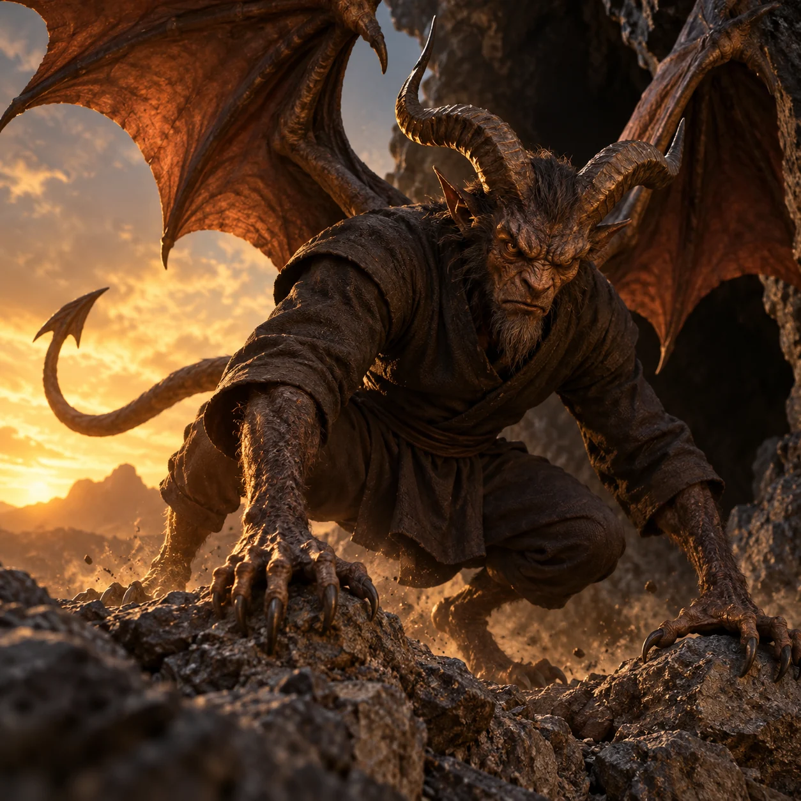
One Western folk-art demon, one head, two horns, exactly two bat wings, one pointed tail, two arms ending birdlike claws and two legs; fully opaque plain dark tunic and trousers
Aura: Documented effects and physical action only; no generic aura.
Audit ciri dan sumber
- [object Object]
- [object Object]
- [object Object]
B preserves both horns and the entire pointed tail, with claws directly confronting the low camera. A fails horn cropping. This is the sourced Western folk-art variant c44/c45, not every religious demon. All seven Sangar checks and anatomy checked against native PNG; this is Codex self-review, independent Claude review pending. Also inspected at exact 200x200 pixels in the final 50-image browser sheets; subject and distinguishing attributes remain imposing and readable.
Review sumberONE original square 1024x1024 premium painterly cinematic Mythics illustration of demon.
ANATOMY: One Western folk-art demon, one head, two horns, exactly two bat wings, one pointed tail, two arms ending birdlike claws and two legs; fully opaque plain dark tunic and trousers [demon-c44]
MOMENT: The demon lands sideways on a ledge, two wings swept upward, both clawed hands grip separate stones, tail curves clearly behind.
POWER: No magical emission; physical wings beat and claws brace rocky ledge, disturbing ordinary dust [demon-c44, demon-c45]
SCALE & CAMERA: extreme low angle, subject dominant at 200px; tight imposing frame but full identifying attributes readable; source scale only, not an invented giant.
LIGHT & WEATHER: one strong natural sunset or moon key light, antique gold and dark walnut shadows, tangible physical dust or spray only.
SURFACE: tactile fur or feathers, aged metal, rough stone, fully opaque woven clothing wherever humanoid.
SETTING: Dark rocky cave mouth, editorial staging of frightening Western folk-art form, not a named sacred site [demon-c44, demon-c45]
MOOD: overwhelming active mythological presence, solemn courage for divine subjects, never cute, ordinary passive person or decorative statue.
HARD CONSTRAINTS: no letters, writing, pseudo-glyphs, signs, symbols resembling script on ANY surfaces; NO logo/signature/border/watermark; no borrowed film/game/comic/anime design; no extra anatomy. Full opaque torso covering for humanoids, no nudity or sexualization, no gore, blood, harmed people or victims. No generic aura, neon outlines, runes, energy ribbons or ungrounded magic. Cloth and jewelry plain and unmarked. Respect the specific Western folk-art variant, do not generalize this anatomy to all religious spirits. No weapon, no torture, no hellfire power.
Eros
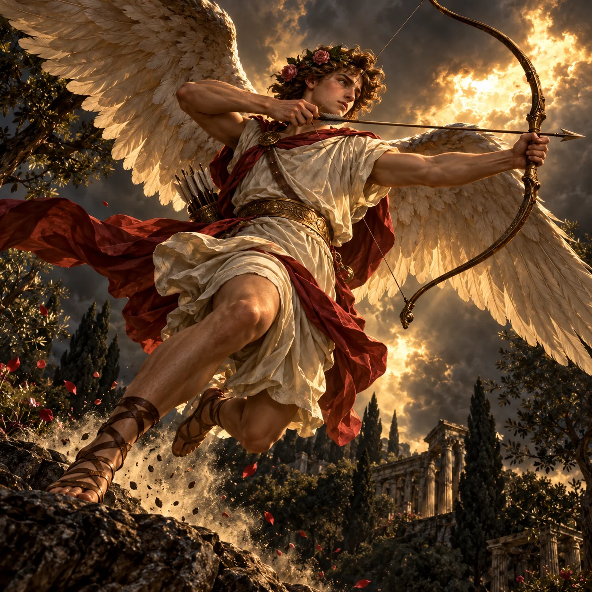
Eros, Classical winged youth variant
Aura: No generic aura; strength through documented attributes, physical action and source-linked domain: eros-c08, eros-c12, eros-c18, eros-c24, eros-c25, eros-c34
Audit ciri dan sumber
- [object Object]
- [object Object]
- [object Object]
Dua PNG native telah dibaca. B dipilih karena gerakan meloncat sambil menarik busur, dua sayap besar dan bentuk panah utuh terbaca paling kuat. Remaja berselubung tunik, rose wreath dan quiver didukung c08/c12/c24/c25. Tanpa panah energi atau mekanisme passion rekaan; aksi fisik archery c18/c34. A sah namun gerak kaki crop. Tujuh syarat Sangar terpenuhi. All seven Sangar checks and anatomy checked against native PNG; this is Codex self-review, independent Claude review pending. Also inspected at exact 200x200 pixels in the final 50-image browser sheets; subject and distinguishing attributes remain imposing and readable.
Review sumberONE original square 1024x1024 premium painterly cinematic Mythics illustration of Eros, Classical winged youth variant.
ANATOMY: beautiful late-adolescent male deity, one head two arms two legs and exactly two large feather wings, fully opaque heavy Greek tunic, bow arrows and rose wreath [eros-c08, eros-c12, eros-c24, eros-c25]
MOMENT: Launch sideways from a rocky rise while drawing the bow, full winged figure spans composition, tunic opaque, physical feather downwash only.
POWER: No energy arrows or glow; his surprise archery creates the threat of reckless passion, bow and arrow physical [eros-c18, eros-c34]
SCALE & CAMERA: extreme low angle; physical action with fuller body composition, subject fills at least 75 percent of frame; all distinguishing limbs readable. Natural source scale, no invented giant size.
LIGHT & WEATHER: one dominant natural storm opening or fire/moon light source in deep walnut and antique-gold palette; strong rim light, deep shadow, physically grounded dust or spray.
SURFACE: tactile weathered cloth, aged metal, living skin, feathers or scales as applicable.
SETTING: shadowed Greek grove, editorial staging rather than claimed location [eros-c12]
MOOD: overwhelming, imposing, active, dignified where divine; never cute, placid or decorative. Original mythology art, no borrowed modern character designs.
HARD CONSTRAINTS: NO text, letters, pseudo-writing, glyphs, runes, logos, signatures or decorative script anywhere including clothing, weapons, architecture. NO border, frame, watermark, extra heads, limbs or fingers. Fully opaque clothing, no nudity, sexualization, explicit gore. No generic aura, neon outline, glowing mist or energy ribbons. Do not print claim IDs on image.
Hanuman
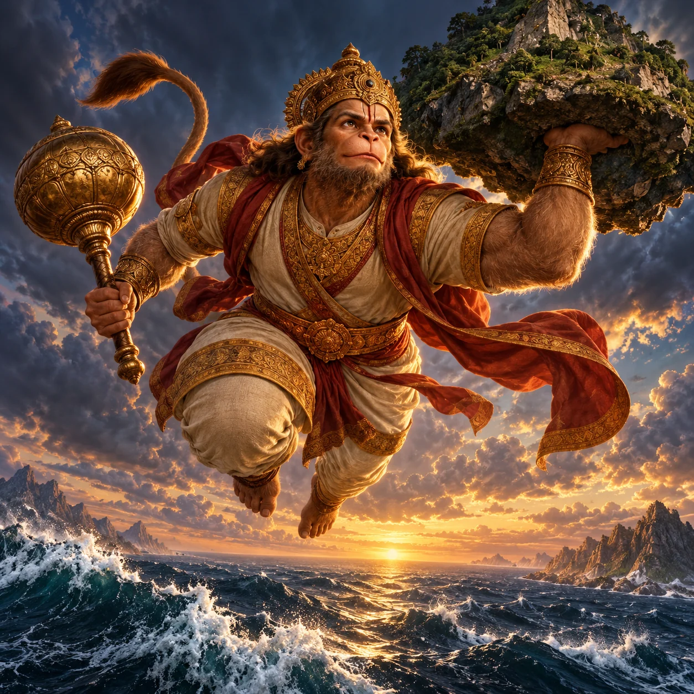
Documented form, physical action and attributes; compositions A and B.
Aura: Kesan kuasa dari aksi fisik/atribut: fly carrying uprooted healing mountain; sea below rages and swells (hanuman-c05, hanuman-c06, hanuman-c40, hanuman-c41), bukan aura generik.
Audit ciri dan sumber
- [object Object]
- [object Object]
- [object Object]
A reads the whole mace and two feet clearly while Hanuman carries the mountain above the ocean. Both native variants pass; A has cleaner complete attributes. All seven Sangar checks and anatomy checked against native PNG; this is Codex self-review, independent Claude review pending. Also inspected at exact 200x200 pixels in the final 50-image browser sheets; subject and distinguishing attributes remain imposing and readable.
Review sumberONE original square premium painterly cinematic Mythics illustration of Hanuman, revered monkey-bodied mountain carrier.
ANATOMY: one monkey head, two arms,two legs,one tail; one hand holds herb mountain overhead, other mace; opaque tunic and trousers covering entire torso [hanuman-c02, hanuman-c17, hanuman-c30]
MOMENT: Fly toward viewer from low angle, one palm bears mountain, other grips mace, focused pleasant monkey face, tail streams and ocean heaves
POWER: fly carrying uprooted healing mountain; sea below rages and swells [hanuman-c05, hanuman-c06, hanuman-c40, hanuman-c41]
SCALE & CAMERA: extreme low camera; documented gigantic size c41, small waves beneath vast flying body, mountain large but face dominates.
LIGHT & WEATHER: one predawn horizon; high contrast rim light and deep shadows.
SURFACE: tangible skin or fur, weathered opaque cloth and stone; dark walnut and antique gold palette with one accent.
SETTING: flight over ocean between Himalayas and Lanka [hanuman-c13]
MOOD: overwhelming imposing majesty and determined expression, active awe inspiring presence, never ordinary or decorative; respectful living religious deity if applicable.
HARD CONSTRAINTS: no text anywhere including clothes and stones, NO pseudo glyphs, painted forehead symbols, lettering, signature, logo, border, frame or watermark; no extra heads, limbs or fingers; no film/game/anime/comic design; fully opaque clothing covering the whole torso whenever clothed, no nudity, no explicit gore, no generic glow aura, neon outline, energy ribbons or runes. Entire head and attributes remain in frame. Cloth ornaments only plain weaving or geometric patterns, no writing.
Jinn
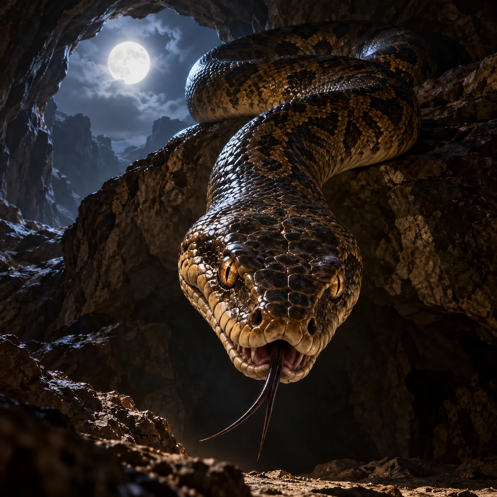
Coiled snake extends neck down from cave ledge toward low lens, mouth just opening, entire continuous body behind
Aura: Kesan kuasa dari aksi fisik/atribut: shapeshifter appearing in documented snake shape, no extra supernatural effects (jinn-c07), bukan aura generik.
Audit ciri dan sumber
- [object Object]
- [object Object]
- [object Object]
Dua PNG native telah dibaca. B dipilih karena kepala menurun, mulut dan lidah membuka serta badan berkelok menunjukkan gerak fisik kuat. Wujud seluruh ular dari c07, satu kepala/satu tubuh kontinu tanpa anggota tambahan. Cave/desert c31/c34; tidak diartikan bahwa semua jinn jahat. A sah namun kurang bergerak. Tanpa kabut bercahaya, aura atau teks. Tujuh syarat Sangar terpenuhi. All seven Sangar checks and anatomy checked against native PNG; this is Codex self-review, independent Claude review pending. Also inspected at exact 200x200 pixels in the final 50-image browser sheets; subject and distinguishing attributes remain imposing and readable.
Review sumberONE original square premium painterly cinematic Mythics illustration of Jinn taking documented snake form.
ANATOMY: one snake head, one continuous snake body, no limbs,wings,horns; physical scales [jinn-c07]
MOMENT: Coiled snake extends neck down from cave ledge toward low lens, mouth just opening, entire continuous body behind
POWER: shapeshifter appearing in documented snake shape, no extra supernatural effects [jinn-c07]
SCALE & CAMERA: extreme low camera; tight framing and strong foreshortening; subject fills most of square, no invented giant size.
LIGHT & WEATHER: one moonlit cave opening; high contrast rim light and deep shadows.
SURFACE: tangible skin or fur, weathered opaque cloth and stone; dark walnut and antique gold palette with one accent.
SETTING: desolate dark desert cave [jinn-c31, jinn-c34]
MOOD: overwhelming imposing majesty and determined expression, active awe inspiring presence, never ordinary or decorative; respectful living religious deity if applicable.
HARD CONSTRAINTS: no text anywhere including clothes and stones, NO pseudo glyphs, painted forehead symbols, lettering, signature, logo, border, frame or watermark; no extra heads, limbs or fingers; no film/game/anime/comic design; fully opaque clothing covering the whole torso whenever clothed, no nudity, no explicit gore, no generic glow aura, neon outline, energy ribbons or runes. Entire head and attributes remain in frame. Cloth ornaments only plain weaving or geometric patterns, no writing.
Jupiter
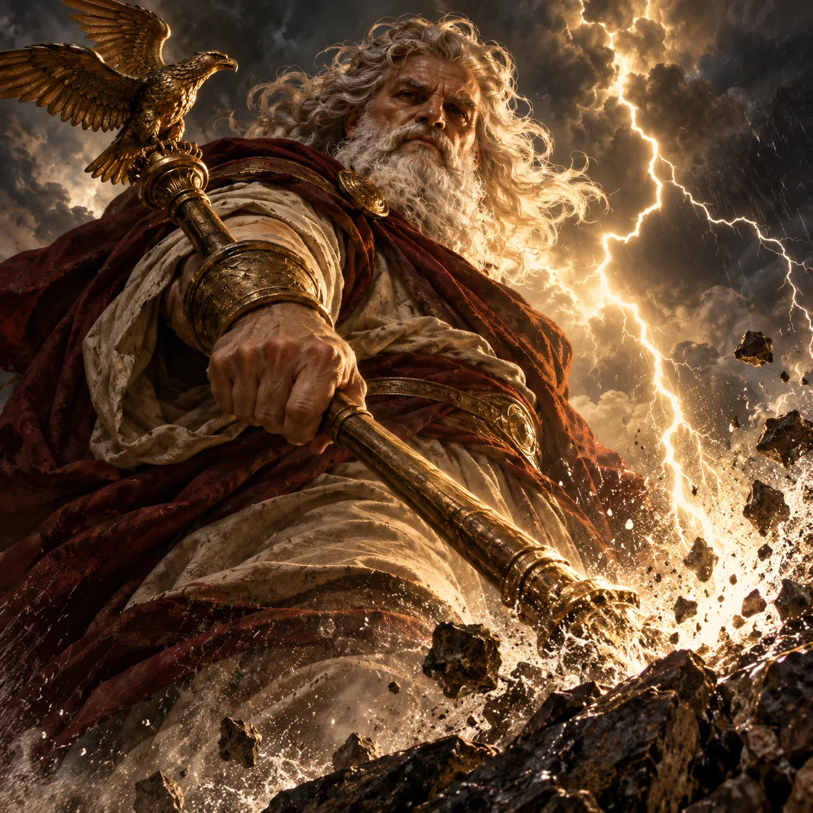
Jupiter
Aura: No generic aura; strength through documented attributes, physical action and source-linked domain: jupiter-c01, jupiter-c07, jupiter-c09, jupiter-c23
Audit ciri dan sumber
- [object Object]
- [object Object]
- [object Object]
Dua PNG native telah dibaca. A dipilih karena wajah tua berahang lebar, badan dominan, elang pada tongkat dan kilat bercabang memberi identitas Jupiter yang jelas. Dorongan tongkat ke batu dan dampak kilat merupakan aksi langsung; efek ditopang c01/c09/c23. B sah tetapi figur lebih kecil. Semua tujuh syarat Sangar terpenuhi. All seven Sangar checks and anatomy checked against native PNG; this is Codex self-review, independent Claude review pending. Also inspected at exact 200x200 pixels in the final 50-image browser sheets; subject and distinguishing attributes remain imposing and readable.
Review sumberONE original square 1024x1024 premium painterly cinematic Mythics illustration of Jupiter.
ANATOMY: older broad-jawed man with long white beard, one head, two arms and legs, opaque heavy Roman robe, tall plain scepter with eagle finial [jupiter-c07]
MOMENT: Swing the eagle-topped scepter downward across the close foreground, stern face fills upper half as lightning tears past.
POWER: A real branching thunderbolt strikes rock beside his scepter, blowing chips and rain outward [jupiter-c01, jupiter-c09, jupiter-c23]
SCALE & CAMERA: extreme low angle; confrontational tight three-quarter close composition, subject fills at least 80 percent of frame. Natural source scale, no invented giant size.
LIGHT & WEATHER: one dominant natural storm opening or fire/moon light source in deep walnut and antique-gold palette; strong rim light, deep shadow, physically grounded dust or spray.
SURFACE: tactile weathered cloth, aged metal, living skin, feathers or scales as applicable.
SETTING: storm-filled sky above a rocky height; terrain is artistic staging for sky domain [jupiter-c01]
MOOD: overwhelming, imposing, active, dignified where divine; never cute, placid or decorative. Original mythology art, no borrowed modern character designs.
HARD CONSTRAINTS: NO text, letters, pseudo-writing, glyphs, runes, logos, signatures or decorative script anywhere including clothing, weapons, architecture. NO border, frame, watermark, extra heads, limbs or fingers. Fully opaque clothing, no nudity, sexualization, explicit gore. No generic aura, neon outline, glowing mist or energy ribbons. Do not print claim IDs on image.
Mercury
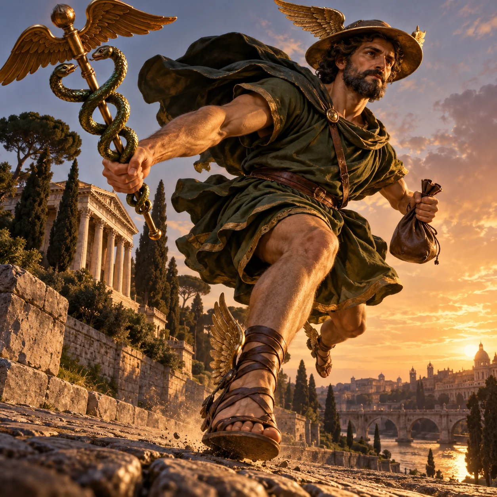
Roman Mercury in human male form, broad-brimmed petasus, winged sandals, caduceus staff with two intertwined snakes, purse; two arms two legs, opaque dark green tunic
Aura: Documented effects and physical action only; no generic aura.
Audit ciri dan sumber
- [object Object]
- [object Object]
- [object Object]
A gives a mature bearded face distinct from Hermes and a stronger planted running step, with readable purse, two-snake caduceus and winged sandals. B passes but the face is less imposing. All seven Sangar checks and anatomy checked against native PNG; this is Codex self-review, independent Claude review pending. Also inspected at exact 200x200 pixels in the final 50-image browser sheets; subject and distinguishing attributes remain imposing and readable.
Review sumberONE original square 1024x1024 premium painterly cinematic Mythics illustration of mercury.
ANATOMY: Roman Mercury in human male form, broad-brimmed petasus, winged sandals, caduceus staff with two intertwined snakes, purse; two arms two legs, opaque dark green tunic [mercury-c06, mercury-c09, mercury-c13, mercury-c40]
MOMENT: Mercury leaps forward down a roadside stone, caduceus across near foreground in one hand and purse firmly in other, sandals wings readable, mature lean face and curled dark beard editorial.
POWER: Fast message carrying and protecting travelers expressed through a forceful running leap; no glow or teleportation [mercury-c02, mercury-c06]
SCALE & CAMERA: extreme low angle, subject dominant at 200px; tight imposing frame but full identifying attributes readable; source scale only, not an invented giant.
LIGHT & WEATHER: one strong natural sunset or moon key light, antique gold and dark walnut shadows, tangible physical dust or spray only.
SURFACE: tactile fur or feathers, aged metal, rough stone, fully opaque woven clothing wherever humanoid.
SETTING: Roman road beside Aventine temple, contextual setting [mercury-c11]
MOOD: overwhelming active mythological presence, solemn courage for divine subjects, never cute, ordinary passive person or decorative statue.
HARD CONSTRAINTS: no letters, writing, pseudo-glyphs, signs, symbols resembling script on ANY surfaces; NO logo/signature/border/watermark; no borrowed film/game/comic/anime design; no extra anatomy. Full opaque torso covering for humanoids, no nudity or sexualization, no gore, blood, harmed people or victims. No generic aura, neon outlines, runes, energy ribbons or ungrounded magic. Cloth and jewelry plain and unmarked. Snakes on caduceus are two physical snakes, not energy. Different face/green costume from Hermes. No additional powers, no writing on coins/purse.
Saturn
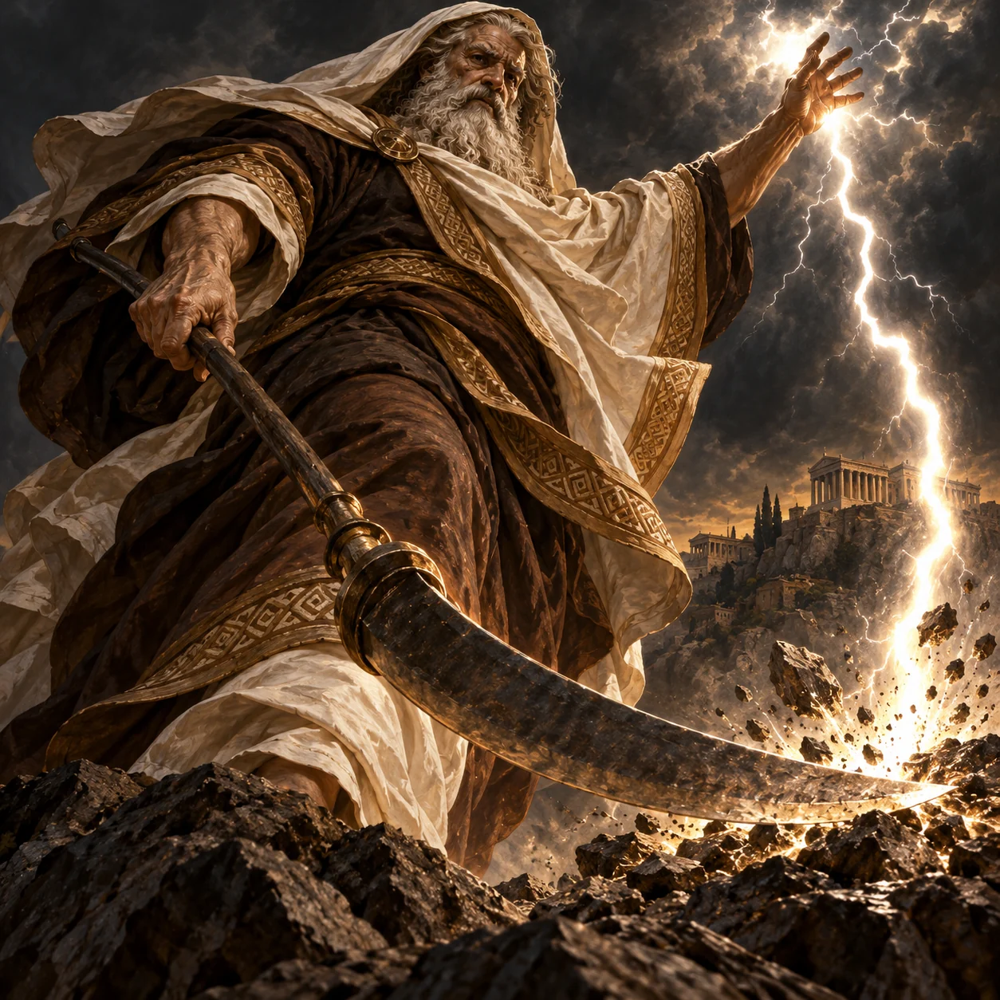
Documented form, physical action and attributes; compositions A and B.
Aura: Kesan kuasa dari aksi fisik/atribut: real lightning strikes rocky ground nearby, no time beams (saturn-c35), bukan aura generik.
Audit ciri dan sumber
- [object Object]
- [object Object]
- [object Object]
A clearly drives the scythe across foreground terrain while documented lightning c35 strikes near ancient Latium; B is more static and the shaft overlaps cloth. All seven Sangar checks and anatomy checked against native PNG; this is Codex self-review, independent Claude review pending. Also inspected at exact 200x200 pixels in the final 50-image browser sheets; subject and distinguishing attributes remain imposing and readable.
Review sumberONE original square premium painterly cinematic Mythics illustration of Saturn, old Roman agricultural god wielding lightning.
ANATOMY: one old male head,two arms; white veil and full opaque robes, crooked scythe [saturn-c02, saturn-c34, saturn-c49]
MOMENT: Step down toward viewer sweeping scythe diagonally while lightning descends beyond raised free hand and hits bare rock
POWER: real lightning strikes rocky ground nearby, no time beams [saturn-c35]
SCALE & CAMERA: extreme low camera; tight framing and strong foreshortening; subject fills most of square, no invented giant size.
LIGHT & WEATHER: one lightning strike through storm darkness; high contrast rim light and deep shadows.
SURFACE: tangible skin or fur, weathered opaque cloth and stone; dark walnut and antique gold palette with one accent.
SETTING: Latium, distant Capitoline temple [saturn-c03, saturn-c06]
MOOD: overwhelming imposing majesty and determined expression, active awe inspiring presence, never ordinary or decorative; respectful living religious deity if applicable.
HARD CONSTRAINTS: no text anywhere including clothes and stones, NO pseudo glyphs, painted forehead symbols, lettering, signature, logo, border, frame or watermark; no extra heads, limbs or fingers; no film/game/anime/comic design; fully opaque clothing covering the whole torso whenever clothed, no nudity, no explicit gore, no generic glow aura, neon outline, energy ribbons or runes. Entire head and attributes remain in frame. Cloth ornaments only plain weaving or geometric patterns, no writing.
Yeti
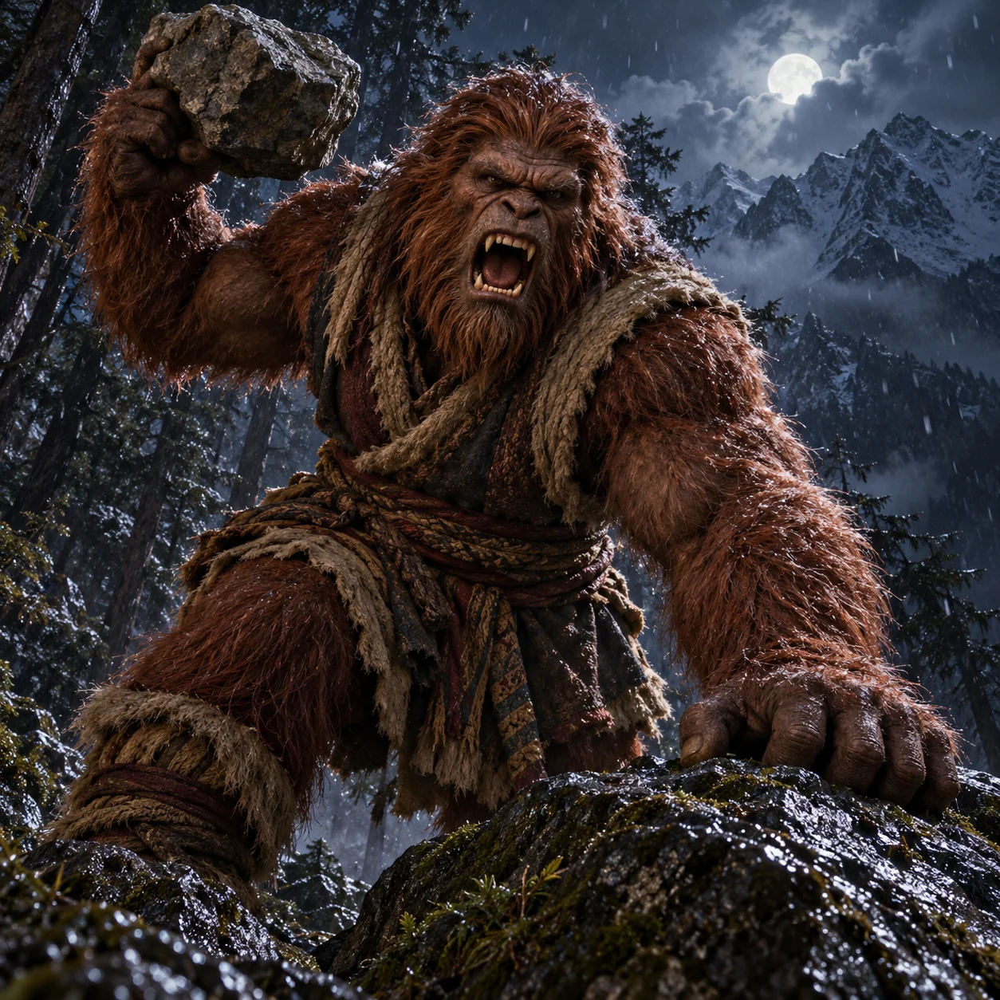
Documented form, physical action and attributes; compositions A and B.
Aura: Kesan kuasa dari aksi fisik/atribut: no magic: menace from advancing anatomy,stone weapon,screech (yeti-c05, yeti-c20), bukan aura generik.
Audit ciri dan sumber
- [object Object]
- [object Object]
- [object Object]
B raises a stone while bracing directly above the low camera; reddish-brown fur, large teeth and forest context read strongly without added magic. A passes but hides the forward contact hand. All seven Sangar checks and anatomy checked against native PNG; this is Codex self-review, independent Claude review pending. Also inspected at exact 200x200 pixels in the final 50-image browser sheets; subject and distinguishing attributes remain imposing and readable.
Review sumberONE original square premium painterly cinematic Mythics illustration of Yeti, large hairy Himalayan wild man.
ANATOMY: one ape-like head,two arms,two legs, muscular body with reddish-brown fur,large sharp teeth; large stone weapon [yeti-c02, yeti-c13, yeti-c20]
MOMENT: Three-quarter stride from trees, one arm raises stone above shoulder, other knuckles brace wet rock; head close screeching
POWER: no magic: menace from advancing anatomy,stone weapon,screech [yeti-c05, yeti-c20]
SCALE & CAMERA: extreme low camera; over six feet documented c02; low camera tight framing, no invented giant size.
LIGHT & WEATHER: one moon shaft through trees with light sleet; high contrast rim light and deep shadows.
SURFACE: tangible skin or fur, weathered opaque cloth and stone; dark walnut and antique gold palette with one accent.
SETTING: nocturnal alpine Himalayan forest below snow line [yeti-c04, yeti-c05]
MOOD: overwhelming imposing majesty and determined expression, active awe inspiring presence, never ordinary or decorative; respectful living religious deity if applicable.
HARD CONSTRAINTS: no text anywhere including clothes and stones, NO pseudo glyphs, painted forehead symbols, lettering, signature, logo, border, frame or watermark; no extra heads, limbs or fingers; no film/game/anime/comic design; fully opaque clothing covering the whole torso whenever clothed, no nudity, no explicit gore, no generic glow aura, neon outline, energy ribbons or runes. Entire head and attributes remain in frame. Cloth ornaments only plain weaving or geometric patterns, no writing.
Ares
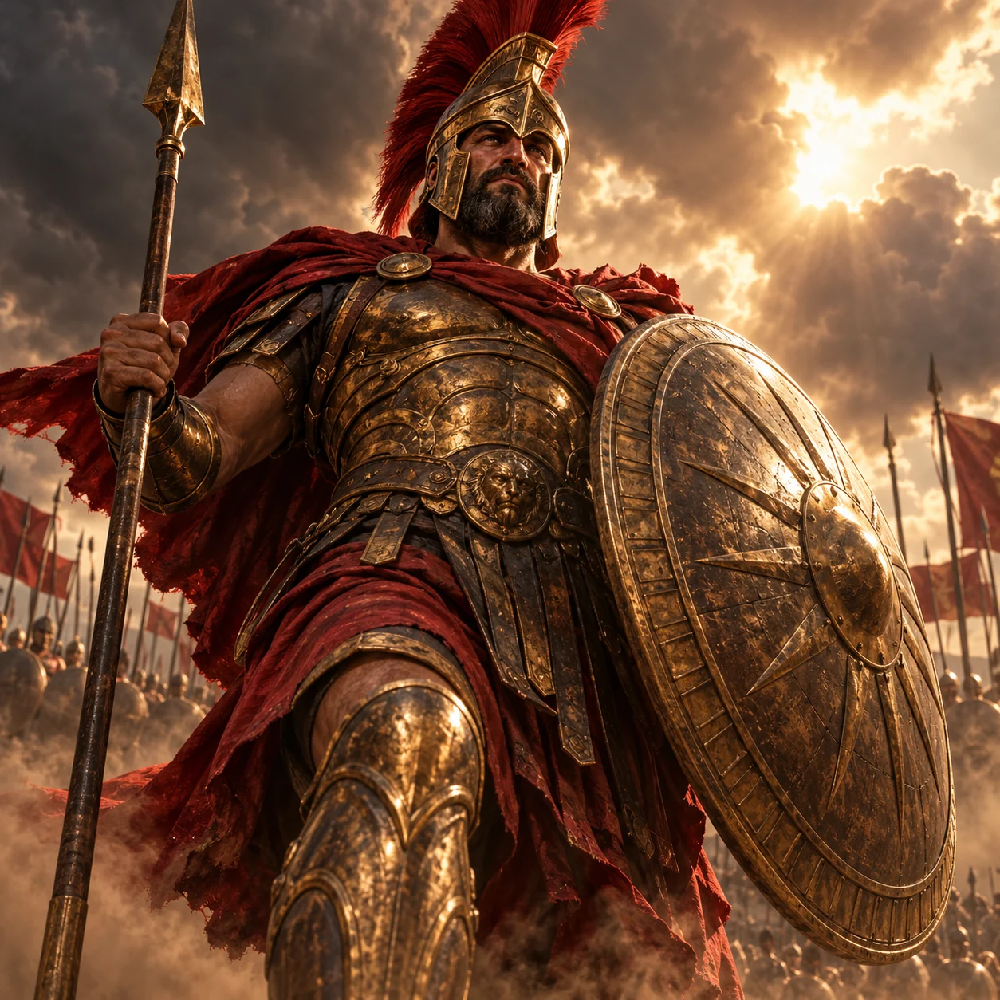
Ares
Aura: No generic aura; strength through documented attributes, physical action and source-linked domain: ares-c03, ares-c07, ares-c10, ares-c26, ares-c42, ares-c44
Audit ciri dan sumber
- [object Object]
- [object Object]
- [object Object]
Dua PNG native aman telah dibaca. A dipilih karena langkah maju, shield dominan dan spear tegak tidak mengarah korban; wajah berjanggut besar serta helm/zirah memberi identitas Ares. Debu alami dari march, bukan rekaan powers. B chariot arrival sah tetapi subjek lebih kecil. Permintaan awal ditolak output violence dan dicatat; dua panggilan berikutnya menghapus serangan. Tujuh syarat Sangar A terpenuhi. All seven Sangar checks and anatomy checked against native PNG; this is Codex self-review, independent Claude review pending. Also inspected at exact 200x200 pixels in the final 50-image browser sheets; subject and distinguishing attributes remain imposing and readable.
Review sumberONE original square 1024x1024 premium painterly cinematic Mythics illustration of Ares.
ANATOMY: mature bearded warrior, one head, two arms and legs, complete opaque bronze armor, peaked golden warrior helmet, spear and shield [ares-c03, ares-c07, ares-c26, ares-c42]
MOMENT: March toward the low camera with shield outward and spear held upright pointing safely away, stern commanding gaze; ceremonial arrival, no violent event.
POWER: No supernatural light; natural wind lifts dust around armor; NO spear strike, attack, wounds, harmed people or violent event [ares-c10, ares-c42]
SCALE & CAMERA: extreme low angle; confrontational tight three-quarter close composition, subject fills at least 80 percent of frame. Natural source scale, no invented giant size.
LIGHT & WEATHER: one dominant natural storm opening or fire/moon light source in deep walnut and antique-gold palette; strong rim light, deep shadow, physically grounded dust or spray.
SURFACE: tactile weathered cloth, aged metal, living skin, feathers or scales as applicable.
SETTING: dusty ancient military assembly ground, unoccupied foreground [ares-c10, ares-c44]
MOOD: overwhelming, imposing, active, dignified where divine; never cute, placid or decorative. Original mythology art, no borrowed modern character designs.
HARD CONSTRAINTS: NO text, letters, pseudo-writing, glyphs, runes, logos, signatures or decorative script anywhere including clothing, weapons, architecture. NO border, frame, watermark, extra heads, limbs or fingers. Fully opaque clothing, no nudity, sexualization, explicit gore. No generic aura, neon outline, glowing mist or energy ribbons. Do not print claim IDs on image.
Atlas
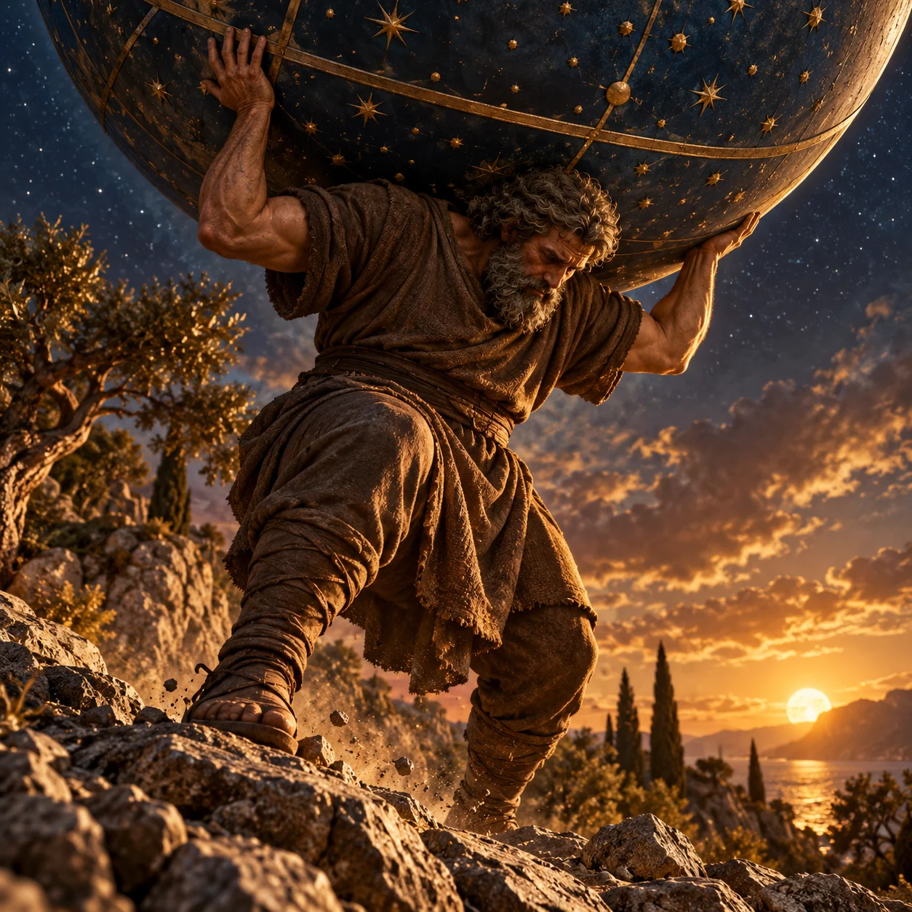
Atlas in documented bent-knees/bent-back male human form supporting a celestial globe on shoulders; two arms two legs, beard editorial, fully opaque plain brown tunic and trousers
Aura: Documented effects and physical action only; no generic aura.
Audit ciri dan sumber
- [object Object]
- [object Object]
- [object Object]
B gives a deeper visibly bent back and planted step under the celestial globe, matching c09 more clearly; star globe has no Earth continents or text. A passes but torso is more upright. All seven Sangar checks and anatomy checked against native PNG; this is Codex self-review, independent Claude review pending. Also inspected at exact 200x200 pixels in the final 50-image browser sheets; subject and distinguishing attributes remain imposing and readable.
Review sumberONE original square 1024x1024 premium painterly cinematic Mythics illustration of atlas.
ANATOMY: Atlas in documented bent-knees/bent-back male human form supporting a celestial globe on shoulders; two arms two legs, beard editorial, fully opaque plain brown tunic and trousers [atlas-c09]
MOMENT: Atlas shifts weight forward, bent back under celestial sphere, both arms braced overhead with clear physical contact, stone grit moves under foot.
POWER: Bears massive weight of heavens, strains and shifts upward; celestial sphere has engraved simple star dots without writing, no Earth map or landmass globe [atlas-c01, atlas-c09, atlas-c13]
SCALE & CAMERA: extreme low angle, subject dominant at 200px; tight imposing frame but full identifying attributes readable; source scale only, not an invented giant.
LIGHT & WEATHER: one strong natural sunset or moon key light, antique gold and dark walnut shadows, tangible physical dust or spray only.
SURFACE: tactile fur or feathers, aged metal, rough stone, fully opaque woven clothing wherever humanoid.
SETTING: Rocky Hesperides terrain and night sky, source region context [atlas-c04, atlas-c24]
MOOD: overwhelming active mythological presence, solemn courage for divine subjects, never cute, ordinary passive person or decorative statue.
HARD CONSTRAINTS: no letters, writing, pseudo-glyphs, signs, symbols resembling script on ANY surfaces; NO logo/signature/border/watermark; no borrowed film/game/comic/anime design; no extra anatomy. Full opaque torso covering for humanoids, no nudity or sexualization, no gore, blood, harmed people or victims. No generic aura, neon outlines, runes, energy ribbons or ungrounded magic. Cloth and jewelry plain and unmarked. He supports heaven/celestial globe NOT planet Earth. No map/constellation glyphs/text. All torso opaque clothing, no bare chest, no extra arms or spheres.
Juno
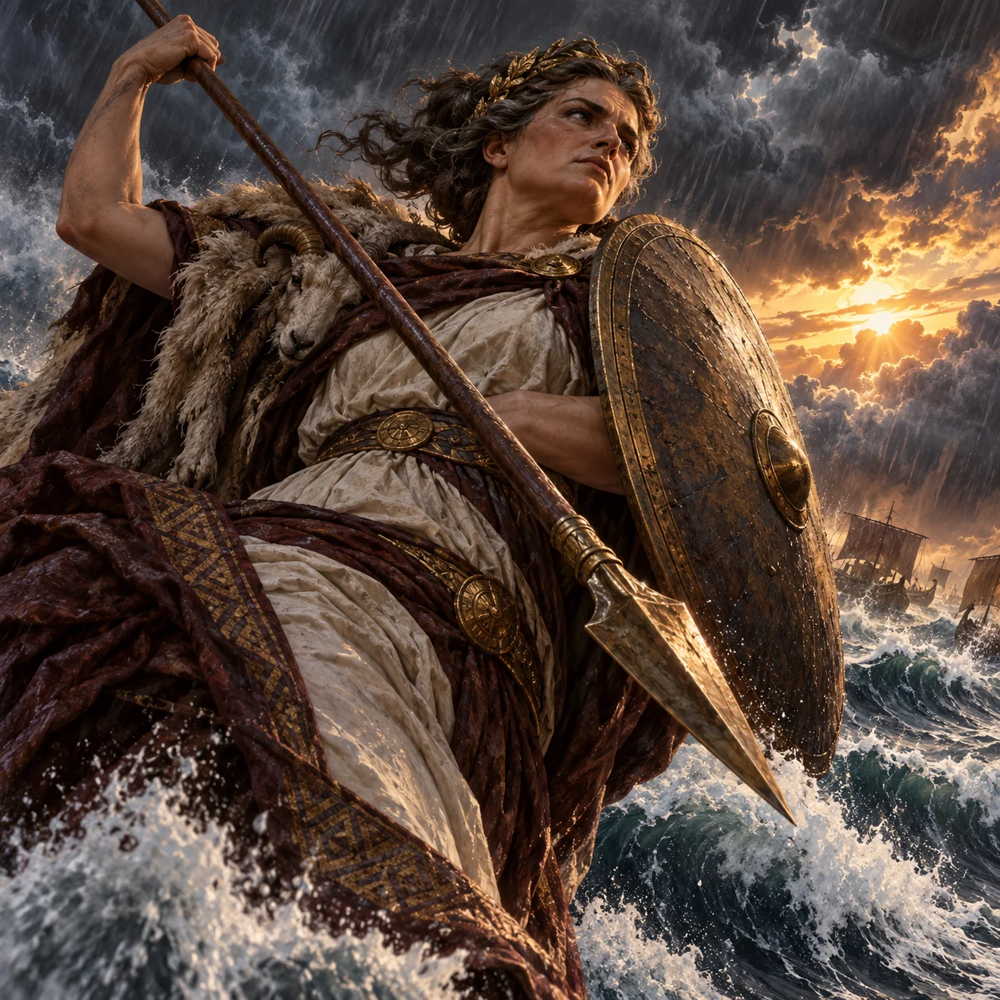
Documented form, physical action and attributes; compositions A and B.
Aura: Kesan kuasa dari aksi fisik/atribut: create sea storm, physical waves,driving rain,wind (juno-c17), bukan aura generik.
Audit ciri dan sumber
- [object Object]
- [object Object]
- [object Object]
B gives a distinctly older angular face and an active spear-lowering moment with readable goat hide and shield amid the sourced sea storm. A passes but resembles earlier younger goddess faces. All seven Sangar checks and anatomy checked against native PNG; this is Codex self-review, independent Claude review pending. Also inspected at exact 200x200 pixels in the final 50-image browser sheets; subject and distinguishing attributes remain imposing and readable.
Review sumberONE original square premium painterly cinematic Mythics illustration of Juno Sospita, Roman protectress.
ANATOMY: one mature female head with angular jaw,two arms; goatskin cloak over opaque Roman robe, spear and plain shield [juno-c10, juno-c28]
MOMENT: Low side view swinging spear down into guard, shield turned across chest, older stern face over crashing sea
POWER: create sea storm, physical waves,driving rain,wind [juno-c17]
SCALE & CAMERA: extreme low camera; tight framing and strong foreshortening; subject fills most of square, no invented giant size.
LIGHT & WEATHER: one sunset break in storm cloud; high contrast rim light and deep shadows.
SURFACE: tangible skin or fur, weathered opaque cloth and stone; dark walnut and antique gold palette with one accent.
SETTING: sea where Juno sends storm against Aeneas [juno-c17]
MOOD: overwhelming imposing majesty and determined expression, active awe inspiring presence, never ordinary or decorative; respectful living religious deity if applicable.
HARD CONSTRAINTS: no text anywhere including clothes and stones, NO pseudo glyphs, painted forehead symbols, lettering, signature, logo, border, frame or watermark; no extra heads, limbs or fingers; no film/game/anime/comic design; fully opaque clothing covering the whole torso whenever clothed, no nudity, no explicit gore, no generic glow aura, neon outline, energy ribbons or runes. Entire head and attributes remain in frame. Cloth ornaments only plain weaving or geometric patterns, no writing.
Lakshmi
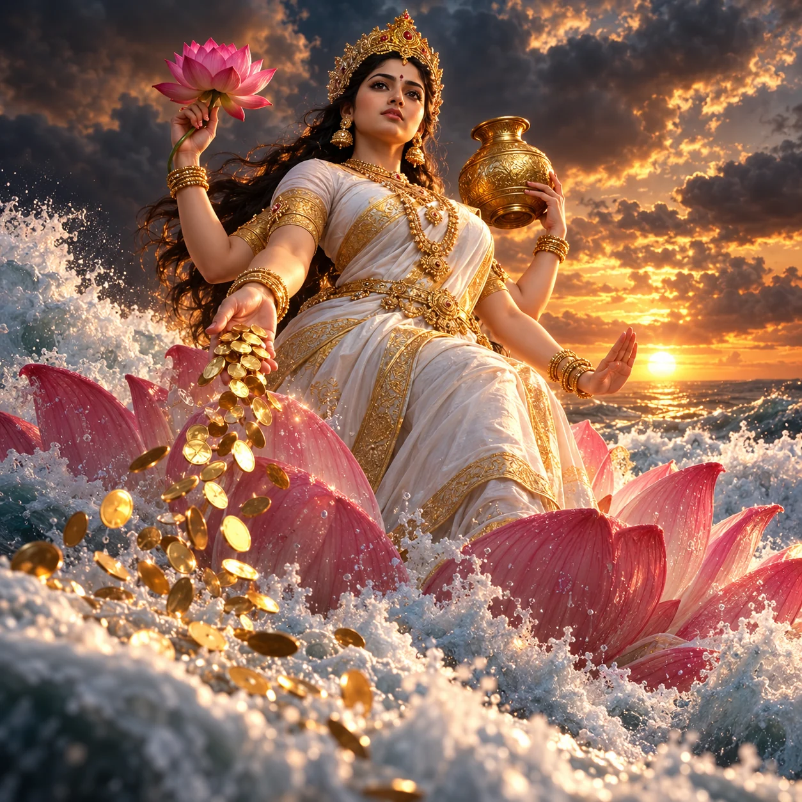
Four-armed white-clothed Lakshmi arising on a pink lotus and showering prosperity.
Aura: Coin shower(c16) and lotus emergence from milky ocean(c03,c21) visibly embody abundance without generic glow.
Audit ciri dan sumber
- [object Object]
- [object Object]
- [object Object]
Dua PNG native telah dibaca. B dipilih karena emergence di lotus pada ombak laut susu dan shower koin dari telapak terbaca dinamis serta memiliki empat tangan terpisah dengan lotus/pot/blessing. Koin bermotif bunga/bintang bukan tulisan. Sari putih menutup torso, tidak ada aura atau kuasa air rekaan. A sah namun frontal dan menambah wadah koin editorial. Tujuh syarat Sangar B terpenuhi dengan kewibawaan penuh hormat. All seven Sangar checks and anatomy checked against native PNG; this is Codex self-review, independent Claude review pending. Also inspected at exact 200x200 pixels in the final 50-image browser sheets; subject and distinguishing attributes remain imposing and readable.
Review sumberONE original square premium painterly cinematic Mythics illustration of Lakshmi, revered benevolent Hindu goddess of prosperity arising from the milky ocean.
ANATOMY: youthful beautiful Indian female, soft rounded cheekbones, dignified resolute gaze, exactly ONE head TWO eyes FOUR arms FOUR hands TWO legs. Fully opaque white sari and white blouse completely cover torso/chest and legs, gold jewelry. One upper hand holds ONE pink lotus, other upper hand holds water pot; one lower hand gives gentle angled-down blessing and other lower hand pours real gold coins [lakshmi-c01,c09,c16].
POWER: real uninscribed coins shower outward/downward, lotus rises out of churned milky waves, no aura [lakshmi-c03,c16,c21].
SCALE & CAMERA: extreme low close angle at lotus petals, goddess and all FOUR arm attachments legible, no extra hands, no invented giant size.
LIGHT & WEATHER: single strong low sunset behind sea clouds, warm gold rim and deep pearl shadows, physical white sea spray.
SURFACE: thick opaque white woven fabric, antique gold jewelry, wet pink lotus petals.
SETTING: primeval milky ocean with open lotus supporting goddess [lakshmi-c03,c16,c21].
MOOD: sacred generous overwhelming majesty, respectful never monstrous or malevolent, never ordinary decorative fashion portrait.
HARD CONSTRAINTS: no text/pseudo-script anywhere including coins/pot/cloth, no logos/frames/watermarks, no extra heads or limbs; EXACTLY FOUR ARMS EACH anatomically separate, no film/game/anime, no nudity/transparent clothes, no gore, no aura/neon/ribbons.
MOMENT: Dynamic diagonal side-low view as Lakshmi turns gracefully on lotus emerging through a white crest; coin-giving lower arm extended downward, pot-bearing upper arm tilted gently across shoulder, opposite upper lotus raised, lower blessing angled toward waves. All FOUR complete shoulders/arms/hands distinctly visible.
VISUAL PRIORITY: keep shadows DEEP and sea midnight walnut dark except gold sun rim. Face is resolute and commanding, not a smiling fashion model. Coins are plain blank discs with NO embossed symbols. No second coin container: coins fall from lower open palm itself. Coin outpouring and rising lotus are in motion.
Neptune
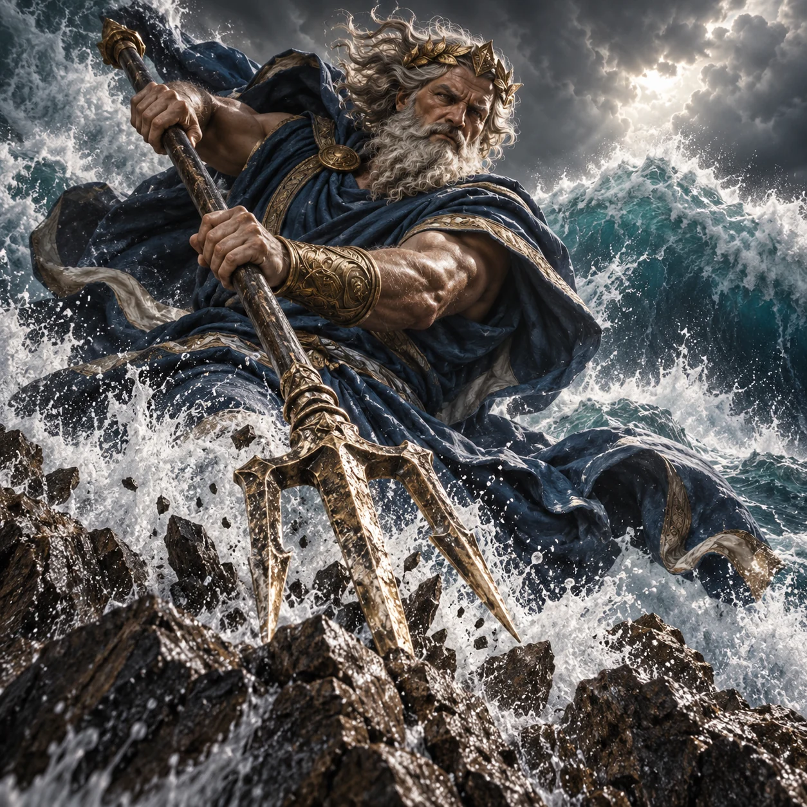
Strike foreground reef with three-pronged trident in both hands, wet robe whipping, waves rear behind brow, rocks crack
Aura: Kesan kuasa dari aksi fisik/atribut: trident smashes rock and raises waves and storms (neptune-c05), bukan aura generik.
Audit ciri dan sumber
- [object Object]
- [object Object]
- [object Object]
Dua PNG native telah dibaca root setelah keluaran sub-agent dipulihkan. A dipilih karena trident tiga ujung menghantam reef dan dua tangan memegang batang yang jelas, gelombang terbentuk c05. Wajah tua/badan dominan, torso berjubah tertutup. B sah tetapi gerak horizontal tidak memperlihatkan dampak sekuat A. Tanpa tulisan/aura/gore. Tujuh syarat Sangar terpenuhi. All seven Sangar checks and anatomy checked against native PNG; this is Codex self-review, independent Claude review pending. Also inspected at exact 200x200 pixels in the final 50-image browser sheets; subject and distinguishing attributes remain imposing and readable.
Review sumberONE original square premium painterly cinematic Mythics illustration of Neptune, Roman sea god.
ANATOMY: one male human head, two arms; three-pronged trident, opaque Roman robe covering chest [neptune-c05, neptune-c06, neptune-c27]
MOMENT: Strike foreground reef with three-pronged trident in both hands, wet robe whipping, waves rear behind brow, rocks crack
POWER: trident smashes rock and raises waves and storms [neptune-c05]
SCALE & CAMERA: extreme low camera; tight framing and strong foreshortening; subject fills most of square, no invented giant size.
LIGHT & WEATHER: one storm light through cloud; high contrast rim light and deep shadows.
SURFACE: tangible skin or fur, weathered opaque cloth and stone; dark walnut and antique gold palette with one accent.
SETTING: sea and sharp-edged reef [neptune-c28]
MOOD: overwhelming imposing majesty and determined expression, active awe inspiring presence, never ordinary or decorative; respectful living religious deity if applicable.
HARD CONSTRAINTS: no text anywhere including clothes and stones, NO pseudo glyphs, painted forehead symbols, lettering, signature, logo, border, frame or watermark; no extra heads, limbs or fingers; no film/game/anime/comic design; fully opaque clothing covering the whole torso whenever clothed, no nudity, no explicit gore, no generic glow aura, neon outline, energy ribbons or runes. Entire head and attributes remain in frame. Cloth ornaments only plain weaving or geometric patterns, no writing.
Uranus
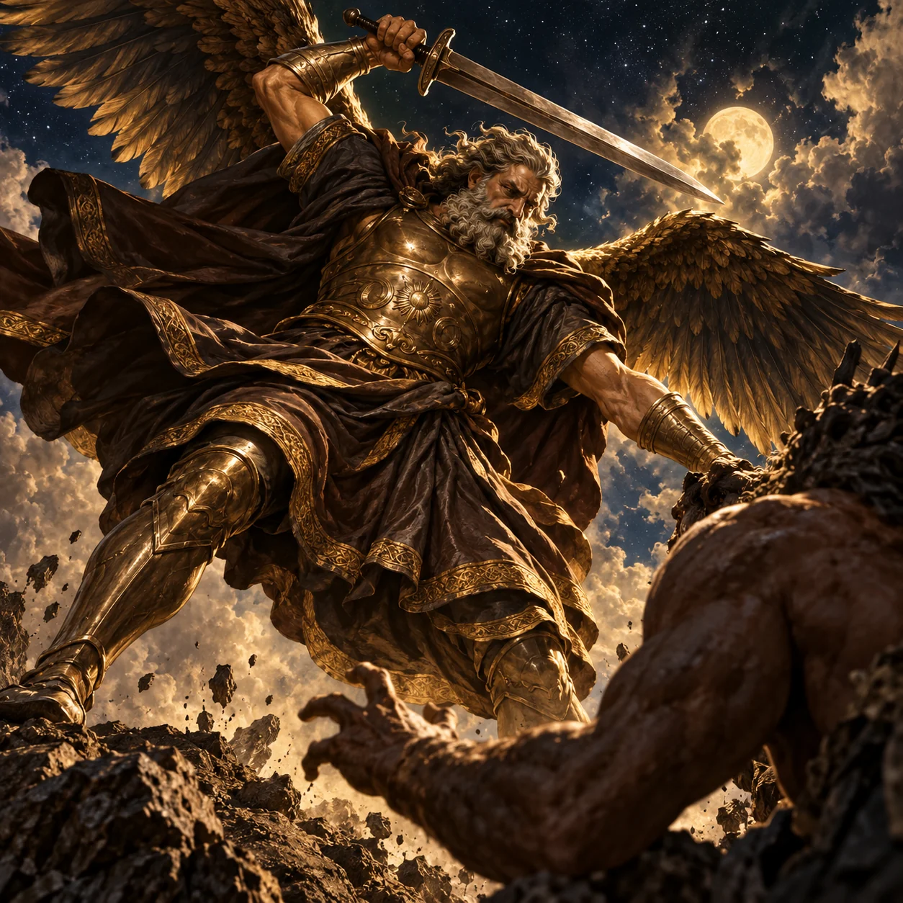
Uranus, Pergamon combat iconography
Aura: No generic aura; strength through documented attributes, physical action and source-linked domain: uranus-c01, uranus-c46
Audit ciri dan sumber
- [object Object]
- [object Object]
- [object Object]
Dua PNG native telah dibaca. B dipilih karena gerak pedang, kaki menapak dan dua sayap jelas mendominasi, memakai varian berjanggut bersayap yang eksplisit pada Pergamon c46. Langit malam hanya konteks dewa langit c01; tidak ada cosmic beam atau anatomi kosmis rekaan. Pakaian menutup torso, tanpa gore atau tulisan. A sah tetapi wajah lawan hampir crop. Tujuh syarat Sangar terpenuhi. All seven Sangar checks and anatomy checked against native PNG; this is Codex self-review, independent Claude review pending. Also inspected at exact 200x200 pixels in the final 50-image browser sheets; subject and distinguishing attributes remain imposing and readable.
Review sumberONE original square 1024x1024 premium painterly cinematic Mythics illustration of Uranus, Pergamon combat iconography.
ANATOMY: bearded male sky god, one head two arms two legs and two feather wings, fully opaque aged-bronze robe and cuirass, plain sword [uranus-c46]
MOMENT: Dive wing-first into a sword strike at a giant silhouette cropped at frame edge; Uranus dominates fully and action occurs under the starry sky.
POWER: Physical sword combat against Giants, no invented cosmic beams; night sky reflects his sky identity [uranus-c01, uranus-c46]
SCALE & CAMERA: extreme low angle; physical action with fuller body composition, subject fills at least 75 percent of frame; all distinguishing limbs readable. Natural source scale, no invented giant size.
LIGHT & WEATHER: one dominant natural storm opening or fire/moon light source in deep walnut and antique-gold palette; strong rim light, deep shadow, physically grounded dust or spray.
SURFACE: tactile weathered cloth, aged metal, living skin, feathers or scales as applicable.
SETTING: dark sky above a rocky combat ledge, editorial staging of documented Gigantomachy [uranus-c01, uranus-c46]
MOOD: overwhelming, imposing, active, dignified where divine; never cute, placid or decorative. Original mythology art, no borrowed modern character designs.
HARD CONSTRAINTS: NO text, letters, pseudo-writing, glyphs, runes, logos, signatures or decorative script anywhere including clothing, weapons, architecture. NO border, frame, watermark, extra heads, limbs or fingers. Fully opaque clothing, no nudity, sexualization, explicit gore. No generic aura, neon outline, glowing mist or energy ribbons. Do not print claim IDs on image.
Saraswati
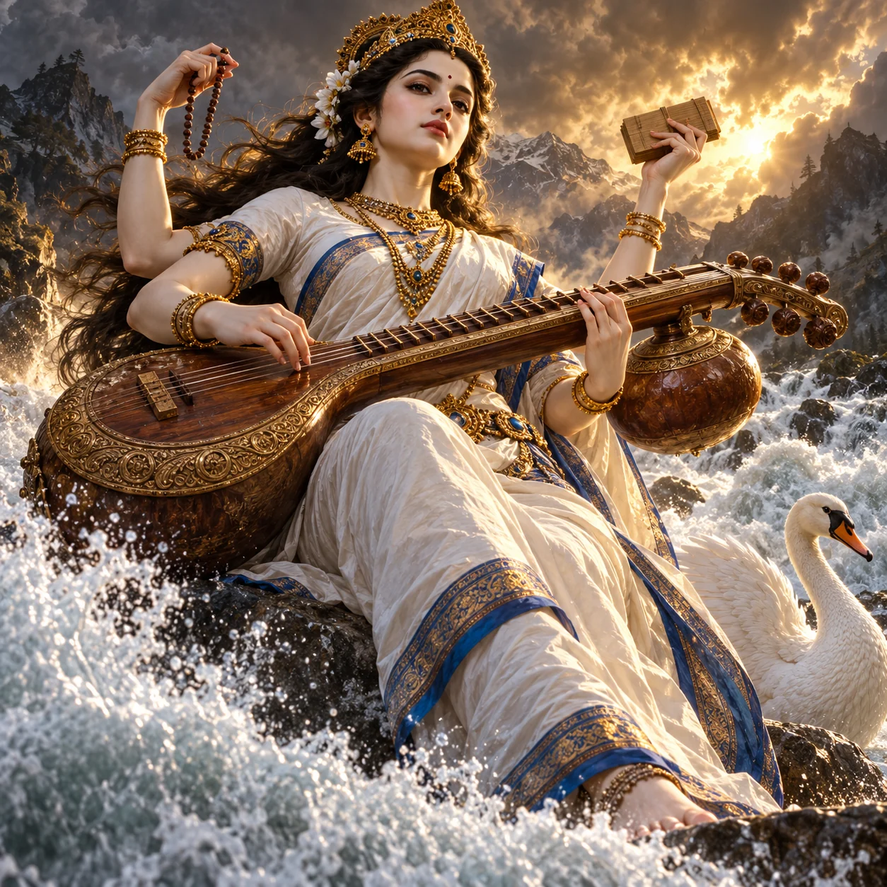
Saraswati
Aura: No generic aura; strength through documented attributes, physical action and source-linked domain: saraswati-c05, saraswati-c06, saraswati-c07, saraswati-c08, saraswati-c12, saraswati-c21, saraswati-c22, saraswati-c25
Audit ciri dan sumber
- [object Object]
- [object Object]
- [object Object]
Dua PNG native telah dibaca. A dipilih karena empat tangan beserta vina, rosario dan manuskrip tertutup terpisah dan besar; aliran sungai menghantam batu ditopang c08/c25. Wajah lebih dekat dan kaki menapak memberi komposisi dominan. B sah tetapi subjek lebih kecil. Sari putih menutup torso, tanpa tulisan manuskrip atau aura. Tujuh syarat Sangar terpenuhi melalui gerak memainkan vina dan tekanan sungai. All seven Sangar checks and anatomy checked against native PNG; this is Codex self-review, independent Claude review pending. Also inspected at exact 200x200 pixels in the final 50-image browser sheets; subject and distinguishing attributes remain imposing and readable.
Review sumberONE original square 1024x1024 premium painterly cinematic Mythics illustration of Saraswati.
ANATOMY: graceful young Hindu goddess, white complexion, one head exactly four arms two legs, white fully opaque sari with blue border, two front hands play wooden vina, upper hand holds a small closed blank palm-leaf manuscript and other upper hand a rosary, no writing [saraswati-c05, saraswati-c06, saraswati-c21, saraswati-c22]
MOMENT: Pluck the large vina with concentrated authority, close low camera shows all four arms clearly and a burst of river spray below.
POWER: Strong river waves burst against hill ridges, a documented physical river act; sacred waters move around the plinth [saraswati-c08, saraswati-c25]
SCALE & CAMERA: extreme low angle; confrontational tight three-quarter close composition, subject fills at least 80 percent of frame. Natural source scale, no invented giant size.
LIGHT & WEATHER: one dominant natural storm opening or fire/moon light source in deep walnut and antique-gold palette; strong rim light, deep shadow, physically grounded dust or spray.
SURFACE: tactile weathered cloth, aged metal, living skin, feathers or scales as applicable.
SETTING: sacred Himalayan river with shadowed hill ridges, conventional swan nearby [saraswati-c07, saraswati-c12]
MOOD: overwhelming, imposing, active, dignified where divine; never cute, placid or decorative. Original mythology art, no borrowed modern character designs.
HARD CONSTRAINTS: NO text, letters, pseudo-writing, glyphs, runes, logos, signatures or decorative script anywhere including clothing, weapons, architecture. NO border, frame, watermark, extra heads, limbs or fingers. Fully opaque clothing, no nudity, sexualization, explicit gore. No generic aura, neon outline, glowing mist or energy ribbons. Do not print claim IDs on image.
Aten
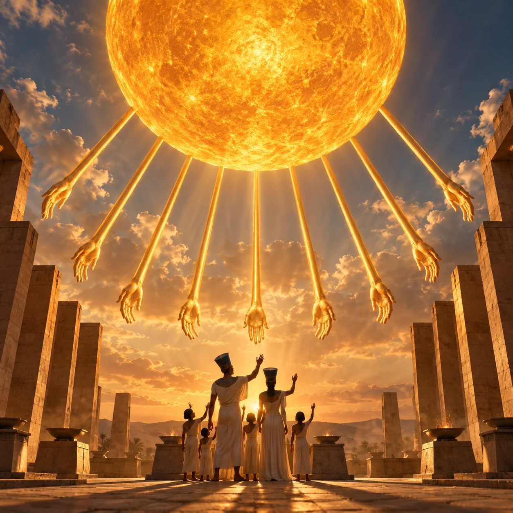
Aten as a single great sun disk, rays terminating in human hands as documented Amarna iconography; no human or falcon body; each hand five fingers
Aura: Documented effects and physical action only; no generic aura.
Audit ciri dan sumber
- [object Object]
- [object Object]
- [object Object]
A gives nine straight hand-ended rays and an overwhelming active sun disk above the small fully clothed royal family in roofless Amarna temple. No human/falcon Aten body invented. B rays resemble curved energy ribbons and fail the prepared ray interpretation. All seven Sangar checks and anatomy checked against native PNG; this is Codex self-review, independent Claude review pending. Also inspected at exact 200x200 pixels in the final 50-image browser sheets; subject and distinguishing attributes remain imposing and readable.
Review sumberONE original square 1024x1024 premium painterly cinematic Mythics illustration of aten.
ANATOMY: Aten as a single great sun disk, rays terminating in human hands as documented Amarna iconography; no human or falcon body; each hand five fingers [aten-c01, aten-c02]
MOMENT: A huge sun disk dominates upper three-quarters above roofless temple; several straight rays extend down and each terminates in a human open hand gently reaching toward tiny opaque-clothed royal family below; disc fully inside frame.
POWER: Living disk rises and grants rays that remove darkness; rays ending hands offer life to royal family; source-described rays only, no aura or destruction [aten-c02, aten-c15, aten-c18]
SCALE & CAMERA: extreme low angle, subject dominant at 200px; tight imposing frame but full identifying attributes readable; source scale only, not an invented giant.
LIGHT & WEATHER: one strong natural sunset or moon key light, antique gold and dark walnut shadows, tangible physical dust or spray only.
SURFACE: tactile fur or feathers, aged metal, rough stone, fully opaque woven clothing wherever humanoid.
SETTING: Amarna open-roof temple with plain altars and small fully clothed royal family below for scale [aten-c04, aten-c11, aten-c33]
MOOD: overwhelming active mythological presence, solemn courage for divine subjects, never cute, ordinary passive person or decorative statue.
HARD CONSTRAINTS: no letters, writing, pseudo-glyphs, signs, symbols resembling script on ANY surfaces; NO logo/signature/border/watermark; no borrowed film/game/comic/anime design; no extra anatomy. Full opaque torso covering for humanoids, no nudity or sexualization, no gore, blood, harmed people or victims. No generic aura, neon outlines, runes, energy ribbons or ungrounded magic. Cloth and jewelry plain and unmarked. The sun-disk itself is the deity and dominant active subject. Do not invent humanoid deity or destruction. No ankh/letters/inscriptions, no glowing ring around disk. Hand-ended straight rays required by claims, not generic energy ribbons.
Cronus
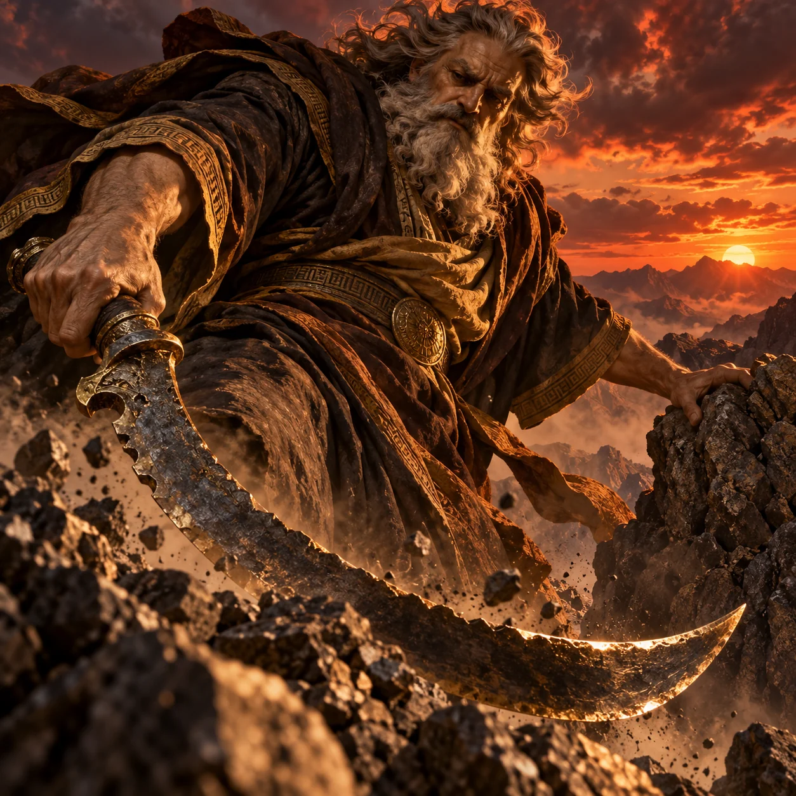
Burst from rock ambush swinging jagged sickle across foreground in right hand, left braces rock, cunning downward gaze
Aura: Kesan kuasa dari aksi fisik/atribut: raise documented sickle from ambush; no invented time beams (cronus-c13), bukan aura generik.
Audit ciri dan sumber
- [object Object]
- [object Object]
- [object Object]
Dua PNG native telah dibaca. A dipilih karena sabit panjang bergerigi di tangan kanan, badan merunduk dari ambush, mata menatap kuat dan bilah dominan. Othrys c16/c20, tindakan/atribut sabit c13/c27; tidak ada time magic. B sah tetapi berdiri lebih tenang. Jubah tertutup, motif meander bukan tulisan. Tujuh syarat Sangar terpenuhi. All seven Sangar checks and anatomy checked against native PNG; this is Codex self-review, independent Claude review pending. Also inspected at exact 200x200 pixels in the final 50-image browser sheets; subject and distinguishing attributes remain imposing and readable.
Review sumberONE original square premium painterly cinematic Mythics illustration of Cronus, king of Titans.
ANATOMY: one male human head, two arms; great long jagged sickle in right hand, full opaque ancient robes [cronus-c13, cronus-c27]
MOMENT: Burst from rock ambush swinging jagged sickle across foreground in right hand, left braces rock, cunning downward gaze
POWER: raise documented sickle from ambush; no invented time beams [cronus-c13]
SCALE & CAMERA: extreme low camera; tight framing and strong foreshortening; subject fills most of square, no invented giant size.
LIGHT & WEATHER: one dying red sunset and physical dust; high contrast rim light and deep shadows.
SURFACE: tangible skin or fur, weathered opaque cloth and stone; dark walnut and antique gold palette with one accent.
SETTING: rocky Mount Othrys [cronus-c16, cronus-c20]
MOOD: overwhelming imposing majesty and determined expression, active awe inspiring presence, never ordinary or decorative; respectful living religious deity if applicable.
HARD CONSTRAINTS: no text anywhere including clothes and stones, NO pseudo glyphs, painted forehead symbols, lettering, signature, logo, border, frame or watermark; no extra heads, limbs or fingers; no film/game/anime/comic design; fully opaque clothing covering the whole torso whenever clothed, no nudity, no explicit gore, no generic glow aura, neon outline, energy ribbons or runes. Entire head and attributes remain in frame. Cloth ornaments only plain weaving or geometric patterns, no writing.
Demeter
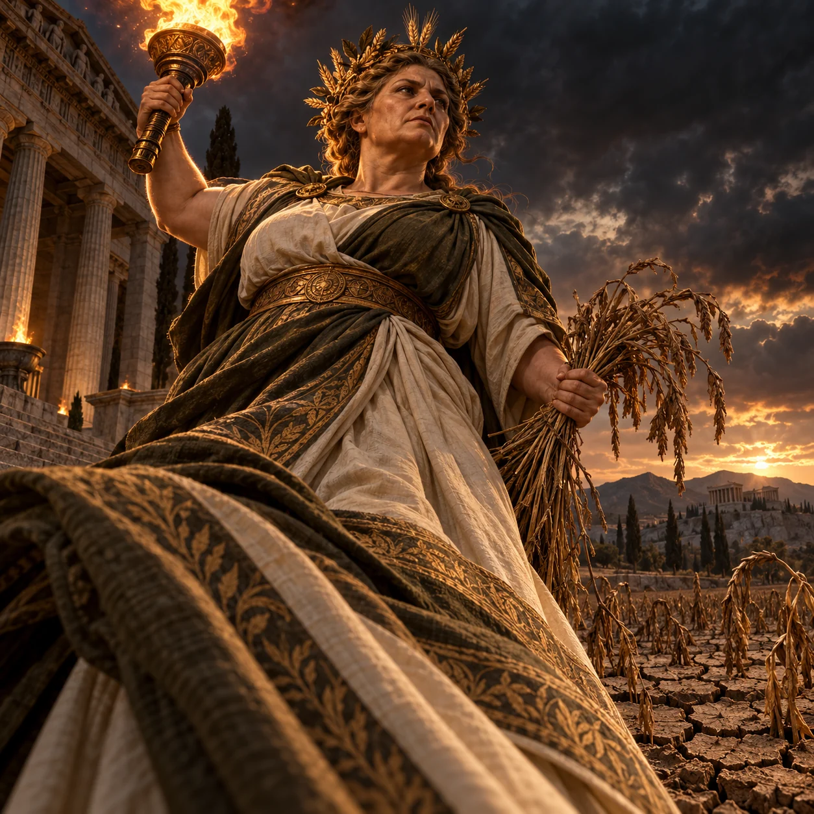
Turn in a forceful three quarter stride at the sanctuary entrance, lifting the torch above a shoulder while her other hand closes around withered wheat, robes sweeping across the foreground
Aura: Kesan kuasa berasal dari aksi fisik: the drought she causes withers wheat and dries the ground, stalks drooping and dry soil fissures (demeter-c04, demeter-c07, demeter-c29), bukan aura.
Audit ciri dan sumber
- [object Object]
- [object Object]
- [object Object]
Dua PNG native telah dibaca. B dipilih karena putaran badan, obor terangkat dan jubah menyapu menunjukkan pencarian aktif yang lebih kuat. Wajah matang berahang tegas membedakannya dari dewi muda. Mahkota gandum, bulir dan obor ditopang c02/c13/c26; tanah retak dan gandum layu oleh kekeringan c04/c07/c29. A sah tetapi lebih frontal dan tenang. Tujuh syarat Sangar terpenuhi; pakaian tertutup, tanpa teks atau aura. All seven Sangar checks and anatomy checked against native PNG; this is Codex self-review, independent Claude review pending. Also inspected at exact 200x200 pixels in the final 50-image browser sheets; subject and distinguishing attributes remain imposing and readable.
Review sumberONE original square premium painterly cinematic Mythics illustration of Demeter, mature goddess of harvest.
ANATOMY: mature woman with broad weathered face, crown of grain, sheaf of wheat and flaming torch; fully clothed in heavy opaque Greek robes [demeter-c02, demeter-c13, demeter-c26]
MOMENT: Turn in a forceful three quarter stride at the sanctuary entrance, lifting the torch above a shoulder while her other hand closes around withered wheat, robes sweeping across the foreground
POWER: the drought she causes withers wheat and dries the ground, stalks drooping and dry soil fissures [demeter-c04, demeter-c07, demeter-c29]
SCALE & CAMERA: extreme low camera, tight framing and strong foreshortening; subject occupies most of square, no invented giant size.
LIGHT & WEATHER: her one flaming torch against a dark dusk sky; dramatic rim light and deep shadows.
SURFACE: tangible weathered opaque cloth, tactile skin and stone; dark walnut and antique gold palette.
SETTING: the sanctuary at Eleusis and its parched agricultural ground [demeter-c05]
MOOD: overwhelming majestic dignity, determined expression, awe inspiring active divine presence, never ordinary or decorative.
HARD CONSTRAINTS: no text anywhere including clothing and stone, no pseudo glyphs, no lettering, signature, logo, border, frame or watermark; no extra heads, limbs or fingers; no film/game/anime/comic design; fully opaque clothing, no nudity, no explicit gore, no generic glow aura, neon outline, energy ribbons or runes.
Hestia
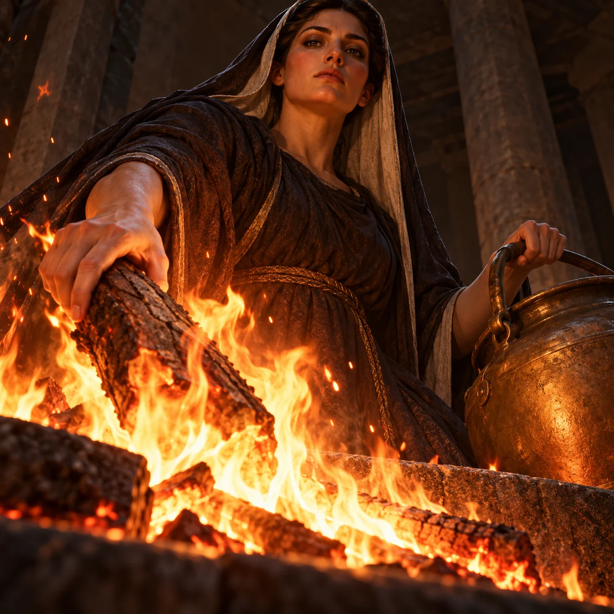
Veiled Hestia actively maintaining the Olympian sacred hearth with kettle attribute.
Aura: Sacrificial flame(c06) at Olympian hearth she feeds(c43), sacred office conveys overwhelming majesty.
Audit ciri dan sumber
- [object Object]
- [object Object]
- [object Object]
Dua PNG native telah dibaca. A dipilih karena tangan memasukkan kayu ke api perapian jelas melakukan tindakan, wajah dekat dan ketel atribut c31 terbaca. Kerudung/jubah menutup tubuh; api nyata dan bara sacred hearth didukung c06/c43/c45. B sah dan api lebih tinggi tetapi lebih menyerupai membawa ketel, bukan merawat api. Percobaan02 sebelumnya gagal Sangar tersimpan. Tujuh syarat Sangar A terpenuhi. All seven Sangar checks and anatomy checked against native PNG; this is Codex self-review, independent Claude review pending. Also inspected at exact 200x200 pixels in the final 50-image browser sheets; subject and distinguishing attributes remain imposing and readable.
Review sumberONE original square premium painterly cinematic Mythics illustration of Hestia, revered Greek goddess maintaining the sacred hearth of Olympus.
ANATOMY: young female, one head two eyes two arms two legs; strong square jaw, resolute solemn expression, modest dark opaque full-length clothing and head-covering veil. Large clear bronze kettle beside her hand [hestia-c07,c19,c31].
POWER: she feeds and maintains sacrificial flames at Olympian hearth; a surging REAL fire burns wood and offerings inside stone hearth, physically lighting her figure [hestia-c06,c43,c45].
SCALE & CAMERA: extreme low close angle across fire, goddess fills frame; no giant stature.
LIGHT & WEATHER: one roaring hearth source, orange rim, deep walnut shadows, sparks and heat shimmer over hearth only.
SURFACE: woven veil, aged bronze kettle, charred wood, soot-black stone.
SETTING: royal sacred hearth of Olympus, plain stone without carvings [hestia-c43,c45].
MOOD: immense protective sacred authority, awe-inspiring resolute, never housewife, decorative portrait, cute or hostile.
HARD CONSTRAINTS: no letters or pseudo-glyphs on stones/clothing/kettle, no text/logo/border/watermark, no extra anatomy, no modern film/game/comic design, no nudity/gore, no aura/neon/ribbons, fire stays at hearth not in her body.
MOMENT: She leans toward viewer and lowers a wood offering into the fire with one hand, other hand grips kettle handle, flames leap vertically between foreground and commanding veiled face. Dynamic low diagonal close-up.
Persephone
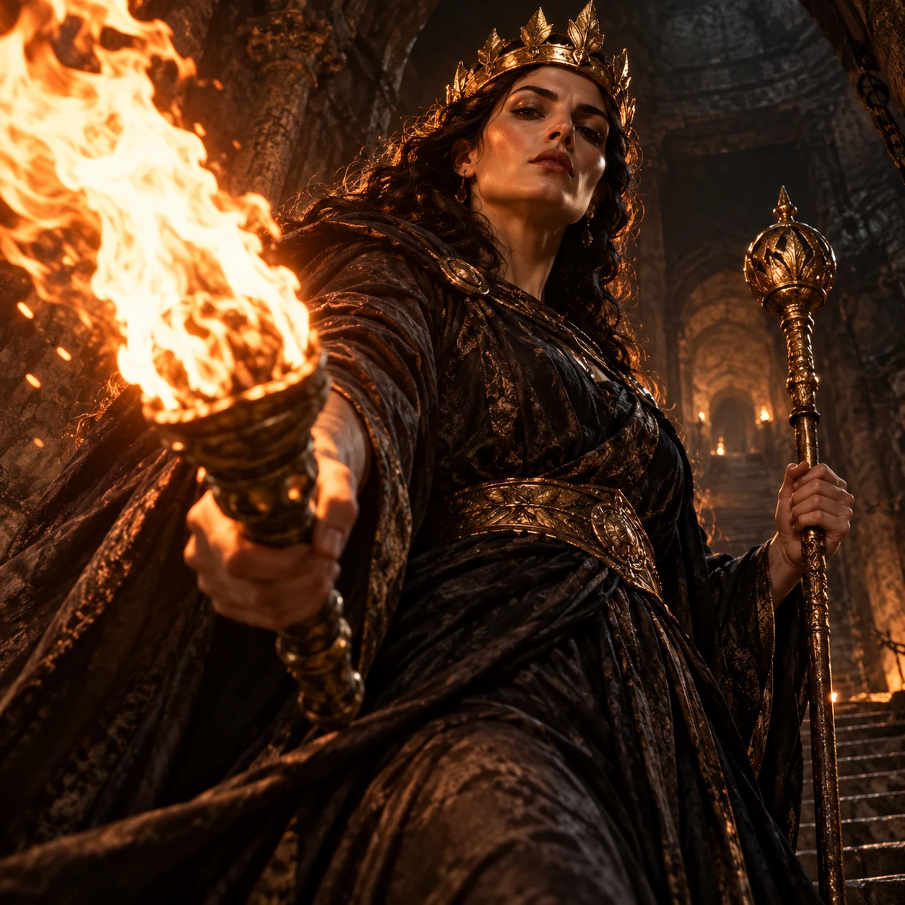
Persephone
Aura: No generic aura; strength through documented attributes, physical action and source-linked domain: persephone-c03, persephone-c10, persephone-c21, persephone-c23, persephone-c28, persephone-c35
Audit ciri dan sumber
- [object Object]
- [object Object]
- [object Object]
Dua PNG native telah dibaca. A dipilih karena obor didorong mendekati kamera dan tongkat kerajaan utuh mendukung kewibawaan ratu underworld c03/c21/c28. Dua tangan, mahkota dan jubah gelap tertutup dari c21/c23/c35; api biasa tanpa kuasa baru. B sah dengan langkah penuh tetapi wajah/atribut lebih kecil. Tujuh syarat Sangar terpenuhi. All seven Sangar checks and anatomy checked against native PNG; this is Codex self-review, independent Claude review pending. Also inspected at exact 200x200 pixels in the final 50-image browser sheets; subject and distinguishing attributes remain imposing and readable.
Review sumberONE original square 1024x1024 premium painterly cinematic Mythics illustration of Persephone.
ANATOMY: adult Greek queen, one head two arms two legs, plain gold crown and fully opaque dark robes, torch in one hand and sceptre in the other [persephone-c21, persephone-c23, persephone-c35]
MOMENT: Sweep her burning torch diagonally across the lens while descending toward viewer, angular mature face commanding under crown.
POWER: Ordinary physical torch flame lights her rule in the underworld, no generic supernatural aura [persephone-c03, persephone-c21, persephone-c28]
SCALE & CAMERA: extreme low angle; confrontational tight three-quarter close composition, subject fills at least 80 percent of frame. Natural source scale, no invented giant size.
LIGHT & WEATHER: one dominant natural storm opening or fire/moon light source in deep walnut and antique-gold palette; strong rim light, deep shadow, physically grounded dust or spray.
SURFACE: tactile weathered cloth, aged metal, living skin, feathers or scales as applicable.
SETTING: dark underworld stone passage [persephone-c03, persephone-c10]
MOOD: overwhelming, imposing, active, dignified where divine; never cute, placid or decorative. Original mythology art, no borrowed modern character designs.
HARD CONSTRAINTS: NO text, letters, pseudo-writing, glyphs, runes, logos, signatures or decorative script anywhere including clothing, weapons, architecture. NO border, frame, watermark, extra heads, limbs or fingers. Fully opaque clothing, no nudity, sexualization, explicit gore. No generic aura, neon outline, glowing mist or energy ribbons. Do not print claim IDs on image.
FACIAL IDENTITY ART CHOICE: Distinct mature woman in her late forties: long angular face, aquiline nose, strong cheekbones, thin unsmiling lips, measured severe expression; not a youthful doll face.